中法英对照版
题献
献给莱昂·韦尔特
À LÉON WERTH
TO LEON WERTH
孩子们，请原谅，我把这本书题赠给了一个大人。我的第一个理由：这个大人是我在世界上最要好的朋友。第二个理由：这个大人他什么都懂，连小人书都懂。第三个理由：这个大人住在法国，他在那里又冷又饿。他需要得到安慰。如果这些理由还不够，我愿意把这本书题赠给那个大人从前做过的孩子。所有的大人最初都是孩子。（但是很少有大人记得这一点。）所以，我把题词改一下：
Je demande pardon aux enfants d’avoir dédié ce livre à une grande personne. J’ai une excuse sérieuse : cette grande personne est le meilleur ami que j’ai au monde. J’ai une autre excuse : cette grande personne peut tout comprendre, même les livres pour enfants. J’ai une troisième excuse : cette grande personne habite la France où elle a faim et froid. Elle a bien besoin d’être consolée. Si toutes ces excuses ne suffisent pas, je veux bien dédier ce livre à l’enfant qu’a été autrefois cette grande personne. Toutes les grandes personnes ont d’abord été des enfants. (Mais peu d’entre elles s’en souviennent.) Je corrige donc ma dédicace :
I ask children to forgive me for dedicating this book to a grown-up. I have a serious excuse: this grown-up is the best friend I have in the world. I have another excuse: this grown-up can understand everything, even books for children. I have a third excuse: he lives in France where he is hungry and cold. He needs to be comforted. If all these excuses are not enough, then I want to dedicate this book to the child whom this grown-up once was. All grown-ups were children first. (But few of them remember it.) So I correct my dedication:
献给莱昂·韦尔特
À LÉON WERTH
TO LEON WERTH
当他还是个小男孩的时候
QUAND IL ÉTAIT PETIT GARÇON
WHEN HE WAS A LITTLE BOY
1 童年之画
我六岁的时候，在一本书里看到一幅非常动人的画，那是一派原始森林的景象，书名叫《真实的故事》，图中有条蟒蛇正在吞食一只野兽。这是那幅图的摹本。
Lorsque j’avais six ans j’ai vu, une fois, une magnifique image, dans un livre sur la Forêt Vierge qui s’appelait « Histoires Vécues ». Ça représentait un serpent boa qui avalait un fauve. Voilà la copie du dessin.
ONCE WHEN I was six I saw a magnificent picture in a book about the jungle, called True Stories. It showed a boa constrictor swallowing a wild beast. Here is a copy of the picture.
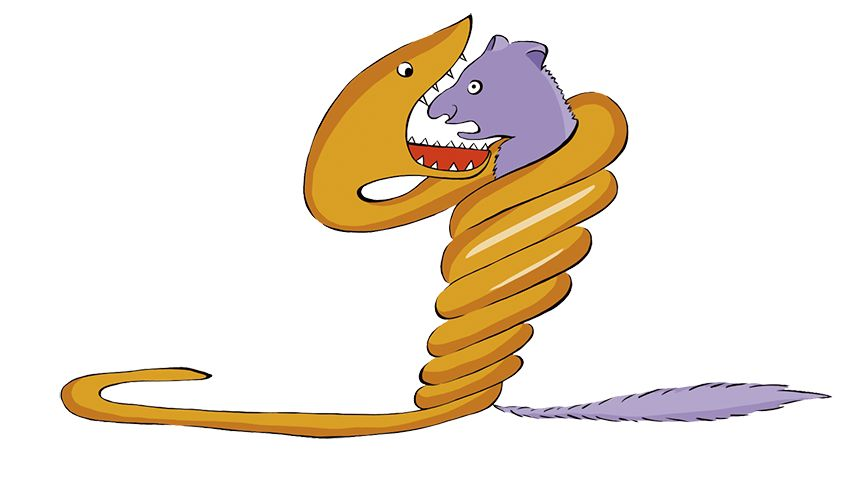
书上这样写道：“大蟒蛇连嚼都不嚼，就把它的猎物囫囵吞到了自己的肚子里，撑得没法动弹。为了消化掉它，不得不躺在那里整整休眠六个月。”
On disait dans le livre : « Les serpents boas avalent leur proie tout entière, sans la mâcher. Ensuite ils ne peuvent plus bouger et ils dorment pendant les six mois de leur digestion. »
In the book it said: “Boa constrictors swallow their prey whole, without chewing. Afterward they are no longer able to move, and they sleep during the six months of their digestion.”
面对它们，我脑子里就呈现出丛林之中所可能产生的种种奇景。于是，我就拿起笔来，勾勒了以下这一幅画：
J’ai alors beaucoup réfléchi sur les aventures de la jungle et, à mon tour, j’ai réussi, avec un crayon de couleur, à tracer mon premier dessin. Mon dessin numéro 1. Il était comme ça :
In those days I thought a lot about jungle adventures, and eventually managed to make my first drawing, using a colored pencil. My drawing Number One looked like this:
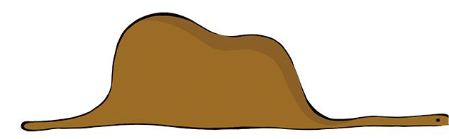
我把这幅画拿给大人们看，还问有没有把他们给吓坏了。
J’ai montré mon chef-d’œuvre aux grandes personnes et je leur ai demandé si mon dessin leur faisait peur.
I showed the grown-ups my masterpiece, and I asked them if my drawing scared them.
可他们却回答说：“吓坏？这顶帽子会把我们给吓坏？”
Elles m’ont répondu : « Pourquoi un chapeau ferait-il peur ? »
They answered, “Why be scared of a hat?”
我画的根本不是什么帽子呀！那是一条蟒蛇吞食了大象的模样，不过你们既然看不懂，我还是重新画一张吧。于是，我便画了大蛇肚子内部的情景，以便让大人们看了就能明白，不必再费多少口舌去这样那样地解释了，所以我的第二幅画就成了以下这个样子：
Mon dessin ne représentait pas un chapeau. Il représentait un serpent boa qui digérait un éléphant. J’ai alors dessiné l’intérieur du serpent boa, afin que les grandes personnes puissent comprendre. Elles ont toujours besoin d’explications. Mon dessin numéro 2 était comme ça :
My drawing was not a picture of a hat. It was a picture of a boa constrictor digesting an elephant. Then I drew the inside of the boa constrictor, so the grown-ups could understand. They always need explanations. My drawing Number Two looked like this:
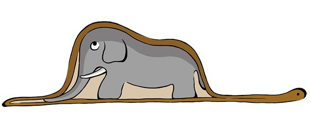
这次，大人们看了以后的反应是，要我把这些全扔一边儿去，不管它们的外观如何，内部又怎样；要我好好地去读读历史、地理、算术、语文才是正事，所以，我在六岁的时候就放弃了成为画家的远大抱负。初次画画的失败让我非常沮丧。大人们从不理解孩子们的想法，我们也就不得不想方设法向他们解释。你不知道，这会让人感到多烦！
Les grandes personnes m’ont conseillé de laisser de côté les dessins de serpents boas ouverts ou fermés, et de m’intéresser plutôt à la géographie, à l’histoire, au calcul et à la grammaire. C’est ainsi que j’ai abandonné, à l’âge de six ans, une magnifique carrière de peintre. J’avais été découragé par l’insuccès de mon dessin numéro 1 et de mon dessin numéro 2. Les grandes personnes ne comprennent jamais rien toutes seules, et c’est fatigant, pour les enfants, de toujours et toujours leur donner des explications.
The grown-ups advised me to put away my drawings of boa constrictors, outside or inside, and apply myself instead to geography, history, arithmetic, and grammar. That is why I abandoned, at the age of six, a magnificent career as an artist. I had been discouraged by the failure of my drawing Number One and of my drawing Number Two. Grown-ups never understand anything by themselves, and it is exhausting for children to have to provide explanations over and over again.
所以，我便选择了另一个行当，学习驾驶飞机去了。我驾着飞机到过世界上许多地方。地理方面的知识真的还很管用呢！放眼一看，我就能分辨出哪儿是中国，哪儿是亚利桑那；要是夜航迷了路，这点知识确实也挺管用的。
J’ai donc dû choisir un autre métier et j’ai appris à piloter des avions. J’ai volé un peu partout dans le monde. Et la géographie, c’est exact, m’a beaucoup servi. Je savais reconnaître, du premier coup d’œil, la Chine de l’Arizona. C’est très utile, si l’on est égaré pendant la nuit.
So then I had to choose another career, and I learned to pilot airplanes. I have flown almost everywhere in the world. And, as a matter of fact, geography has been a big help to me. I could tell China from Arizona at first glance, which is very useful if you get lost during the night.
一生中，我同许多严肃的大人打过很多交道，也在大人们中间生活了很久。我近距离观察过他们，不过，我对他们的看法并没有多大改变。
J’ai ainsi eu, au cours de ma vie, des tas de contacts avec des tas de gens sérieux. J’ai beaucoup vécu chez les grandes personnes. Je les ai vues de très près. Ça n’a pas trop amélioré mon opinion.
So I have had, in the course of my life, lots of encounters with lots of serious people. I have spent lots of time with grown-ups. I have seen them at close range . . . which hasn’t much improved my opinion of them.
每当我遇到我认为稍有鉴赏能力的人，我就会拿出随身带着的第一幅画给他们看，想验证一下对方是否真有眼力；可是不论对方是男是女，看过之后总是那么说：“那不是一顶帽子吗？”于是，我就不再跟这个人谈论有关巨蟒、原始森林或者星星之类的事儿了，我会降低水准，迁就地和他说些有关什么桥牌啦，高尔夫球啦，政治啦甚至领带等等话题，而对方也会因遇到这样一个投机的谈话对手而大为兴奋。
Quand j’en rencontrais une qui me paraissait un peu lucide, je faisais l’expérience sur elle de mon dessin numéro 1 que j’ai toujours conservé. Je voulais savoir si elle était vraiment compréhensive. Mais toujours elle me répondait : « C’est un chapeau. » Alors je ne lui parlais ni de serpents boas, ni de forêts vierges, ni d’étoiles. Je me mettais à sa portée. Je lui parlais de bridge, de golf, de politique et de cravates. Et la grande personne était bien contente de connaître un homme aussi raisonnable.
Whenever I encountered a grown-up who seemed to me at all enlightened, I would experiment on him with my drawing Number One, which I have always kept. I wanted to see if he really understood anything. But he would always answer, “That’s a hat.” Then I wouldn’t talk about boa constrictors or jungles or stars. I would put myself on his level and talk about bridge and golf and politics and neckties. And my grown-up was glad to know such a reasonable person.
2 沙漠初遇
我一直没有遇到能够真正谈得来的伙伴，所以，总是孤零零的，直到我在撒哈拉沙漠出了点意外。那天，我的发动机出了故障，而除了我自己一个人之外，既没有机械师，也没有任何乘客，所以我只能自己动手，试着修修看。可我随身所带的饮用水只够八天，因此，连自己能否支撑下去还是个问题。
J’ai ainsi vécu seul, sans personne avec qui parler véritablement, jusqu’à une panne dans le désert du Sahara, il y a six ans. Quelque chose s’était cassé dans mon moteur. Et comme je n’avais avec moi ni mécanicien, ni passagers, je me préparai à essayer de réussir, tout seul, une réparation difficile. C’était pour moi une question de vie ou de mort. J’avais à peine de l’eau à boire pour huit jours.
SO I LIVED all alone, without anyone I could really talk to, until I had to make a crash landing in the Sahara Desert six years ago. Something in my plane’s engine had broken, and since I had neither a mechanic nor passengers in the plane with me, I was preparing to undertake the difficult repair job by myself. For me it was a matter of life or death: I had only enough drinking water for eight days.
就这样，那第一个夜晚，我就独自一人在杳无人烟的荒野里睡着了。而那种情景实在比孤独的水手在汪洋大海中漂泊还难熬。因而，第二天黎明时，当我被一个奇妙的声音唤醒时，我心中的惊讶是人们无法想像的。
Le premier soir je me suis donc endormi sur le sable à mille milles de toute terre habitée. J’étais bien plus isolé qu’un naufragé sur un radeau au milieu de l’Océan. Alors vous imaginez ma surprise, au lever du jour, quand une drôle de petite voix m’a réveillé. Elle disait :
The first night, then, I went to sleep on the sand a thousand miles from any inhabited country. I was more isolated than a man shipwrecked on a raft in the middle of the ocean. So you can imagine my surprise when I was awakened at daybreak by a funny little voice saying,
“劳驾，能给我画只绵羊吗？”
– S’il vous plaît… dessine-moi un mouton !
“Please . . . draw me a sheep . . .”
“什么？”
– Hein !
“What?”
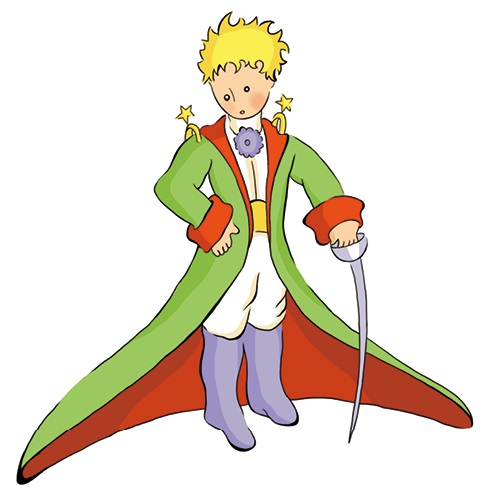
“给我画只绵羊！”
– Dessine-moi un mouton…
“Draw me a sheep…”
我惊奇地一跃而起，眨巴着双眼往四周打量，随即发现一个非同寻常的小人儿，就站在那里注视着我。这儿，就是我根据他的模样，尽我所能描下来的他的肖像。当然，这要比他本人差远啦！然而这并不是我的错，早在我六岁那年，大人们就打击过我成为画家的抱负。所以，除了当时我所画过的有关巨蟒的外观图和内在图之外，就再没有试画过任何别的什么了。
J’ai sauté sur mes pieds comme si j’avais été frappé par la foudre. J’ai bien frotté mes yeux. J’ai bien regardé. Et j’ai vu un petit bonhomme tout à fait extraordinaire qui me considérait gravement. Voilà le meilleur portrait que, plus tard, j’ai réussi à faire de lui. Mais mon dessin, bien sûr, est beaucoup moins ravissant que le modèle. Ce n’est pas ma faute. J’avais été découragé dans ma carrière de peintre par les grandes personnes, à l’âge de six ans, et je n’avais rien appris à dessiner, sauf les boas fermés et les boas ouverts.
I leaped up as if I had been struck by lightning. I rubbed my eyes hard. I stared. And I saw an extraordinary little fellow staring back at me very seriously. Here is the best portrait I managed to make of him, later on. But of course my drawing is much less attractive than my model. This is not my fault. My career as a painter was discouraged at the age of six by the grown-ups, and I had never learned to draw anything except boa constrictors, outside and inside.
如今，我惊讶地睁大眼睛面对着这个突如其来的小人儿。你得记住，我可是身处杳无人烟的大漠之中。可是，这个迷人的小人儿既不像是在沙漠中迷了路，也没有丝毫饥渴、疲惫的神态，一点也没有那种处于困境之中的孩子的孤立无助的迹象。终于，我开了口打听起他的现状来：
Je regardai donc cette apparition avec des yeux tout ronds d’étonnement. N’oubliez pas que je me trouvais à mille milles de toute région habitée. Or mon petit bonhomme ne me semblait ni égaré, ni mort de fatigue, ni mort de faim, ni mort de soif, ni mort de peur. Il n’avait en rien l’apparence d’un enfant perdu au milieu du désert, à mille milles de toute région habitée. Quand je réussis enfin à parler, je lui dis :
So I stared wide-eyed at this apparition. Don’t forget that I was a thousand miles from any inhabited territory. Yet this little fellow seemed to be neither lost nor dying of exhaustion, hunger, or thirst; nor did he seem scared to death. There was nothing in his appearance that suggested a child lost in the middle of the desert a thousand miles from any inhabited territory. When I finally managed to speak, I asked him,
“可你，可你在这儿干吗呀？”
– Mais… qu’est-ce que tu fais là ?
“But… what are you doing here?”
而他，却非常缓慢地再次重复了他刚才的请求，似乎在说一件很重大的事：
Et il me répéta alors, tout doucement, comme une chose très sérieuse :
And then he repeated, very slowly and very seriously,
“劳驾，帮我画只绵羊吧……”
– S’il vous plaît… dessine-moi un mouton…
“Please… draw me a sheep…”
每当事情处在一种神秘的气氛中时，人们对它往往是难以抗拒的。身处荒漠之中面临死亡的威胁时，再想画画当然是非常荒唐的想法，但我还是从口袋里拿出了纸和笔。此刻，我突然想起，由于我过去一直被迫在历史、地理、算术和语文上下功夫，如今一下子不知道怎么下笔，我就把这对小人儿说了。
Quand le mystère est trop impressionnant, on n’ose pas désobéir. Aussi absurde que cela me semblât à mille milles de tous les endroits habités et en danger de mort, je sortis de ma poche une feuille de papier et un stylographe. Mais je me rappelai alors que j’avais surtout étudié la géographie, l’histoire, le calcul et la grammaire et je dis au petit bonhomme (avec un peu de mauvaise humeur) que je ne savais pas dessiner. Il me répondit :
In the face of an overpowering mystery, you don’t dare disobey. Absurd as it seemed, a thousand miles from all inhabited regions and in danger of death, I took a scrap of paper and a pen out of my pocket. But then I remembered that I had mostly studied geography, history, arithmetic, and grammar, and I told the little fellow (rather crossly) that I didn’t know how to draw. He replied,
可他却说：“没有关系，画只绵羊给我就是了……”
– Ça ne fait rien. Dessine-moi un mouton.
“That doesn’t matter. Draw me a sheep.”
但我从没画过绵羊呀！我只能把我原来画过的图画，再默画一张，也就是巨蟒吞象图给他。可他看了之后却说：
Comme je n’avais jamais dessiné un mouton je refis, pour lui, l’un des deux seuls dessins dont j’étais capable. Celui du boa fermé. Et je fus stupéfait d’entendre le petit bonhomme me répondre :
Since I had never drawn a sheep, I made him one of the only two drawings I knew how to make – the one of the boa constrictor from outside. And I was astounded to hear the little fellow answer:
“不，不！我不要这样的画，蟒蛇这东西太可怕，大象也太笨重。在我所住的地方，什么东西都很小。我只要绵羊就行，劳驾，帮忙画一只吧！”
– Non ! Non ! Je ne veux pas d’un éléphant dans un boa. Un boa c’est très dangereux, et un éléphant c’est très encombrant. Chez moi c’est tout petit. J’ai besoin d’un mouton. Dessine-moi un mouton.
“No! No! I don’t want an elephant inside a boa constrictor. A boa constrictor is very dangerous, and an elephant would get in the way. Where I live, everything is very small. I need a sheep. Draw me a sheep.”
于是，我便设法画了一张。
Alors j’ai dessiné.
So then I made a drawing.
他认真看过之后却说：
Il regarda attentivement, puis :
He looked at it carefully, and then said,
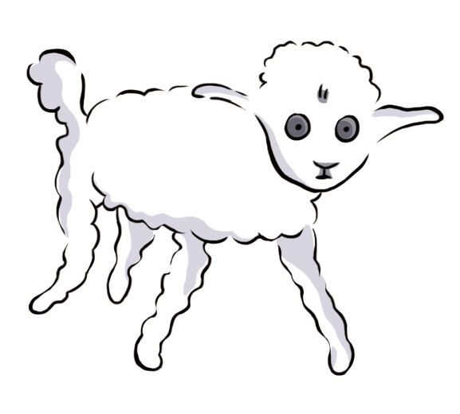
“不，这只绵羊太瘦弱，再重新画一张吧！”
– Non ! Celui-là est déjà très malade. Fais-en un autre.
“No. This one is already quite sick. Make another.”
我又画了一张。
Je dessinai :
I made another drawing.
可他还是有点儿无奈地笑笑说：
Mon ami sourit gentiment, avec indulgence :
My friend gave me a kind, indulgent smile:
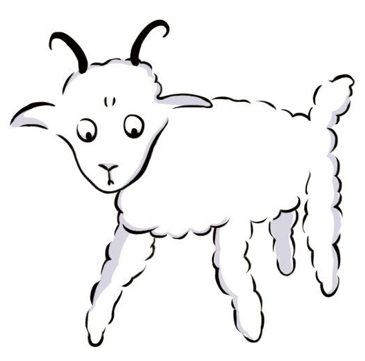
“不，这不是绵羊。你瞧，这是一只小公羊，还生着角呢！”
– Tu vois bien… ce n’est pas un mouton, c’est un bélier. Il a des cornes…
“You can see for yourself… that’s not a sheep, it’s a ram. It has horns…”
我只好再画一张。
Je refis donc encore mon dessin :
So I made my third drawing.
但他还有话说：
Mais il fut refusé, comme les précédents :
But it was rejected, like the others:
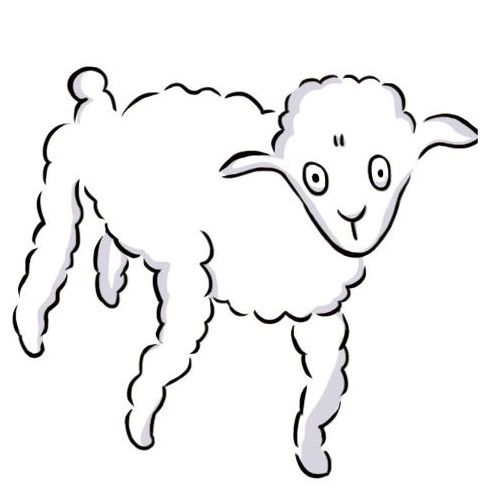
“这只太老啦！我要一只年幼的、还能活很久的绵羊。”
– Celui-là est trop vieux. Je veux un mouton qui vive longtemps.
“This one’s too old. I want a sheep that will live a long time.”
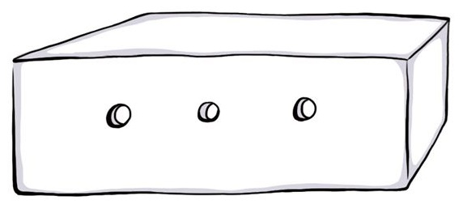
我已经有点不耐烦了。还要赶快修好发动机以便离开这地方呢，所以马马虎虎又画了这张箱子，
Alors, faute de patience, comme j’avais hâte de commencer le démontage de mon moteur, je griffonnai ce dessin-ci.
So then, impatiently, since I was in a hurry to start work on my engine, I scribbled this drawing:
对他说：
Et je lançai :
And added,
“你要的小绵羊就在这只箱子里。”
– Ça c’est la caisse. Le mouton que tu veux est dedans.
“This is just the crate. The sheep you want is inside.”
他脸上露出的笑容让我很惊讶。
Mais je fus bien surpris de voir s’illuminer le visage de mon jeune juge :
But I was amazed to see my young critic’s face light up.
他说：“我要的就是这个样子呀！你说，它需要吃很多草吗？”
– C’est tout à fait comme ça que je le voulais ! Crois-tu qu’il faille beaucoup d’herbe à ce mouton ?
“That’s just the kind I wanted! Do you think this sheep will need a lot of grass?”
“为什么？”
– Pourquoi ?
“Why?”
“因为我住的地方，任何东西都是很小的……”
– Parce que chez moi c’est tout petit…
“Because where I live, everything is very small…”
“准有足够的草喂它。”我说，“我给的这只绵羊是非常小的呀！”
– Ça suffira sûrement. Je t’ai donné un tout petit mouton.
“There’s sure to be enough. I’ve given you a very small sheep.”
他低头认真地看着这幅画：
Il pencha la tête vers le dessin :
He bent over the drawing.
“不是那么小吧，瞧，它已经睡着了！……”
– Pas si petit que ça… Tiens ! Il s’est endormi…
“Not so small as all that…” Look! He’s gone to sleep…”
我就这样认识了我的这位小王子。
Et c’est ainsi que je fis la connaissance du petit prince.
And that’s how I made the acquaintance of the little prince.
3 来历之谜
我过了好久才弄清楚他是从哪儿来的。因为这位问了我好多问题的小王子，却不那么认真地注意听我的问话。我只是从他偶尔吐露的零星话语中，逐步对一些事情有所了解。例如，他初次看到我的飞机时（我不想画飞机了，因为画起来太复杂）问我：
Il me fallut longtemps pour comprendre d’où il venait. Le petit prince, qui me posait beaucoup de questions, ne semblait jamais entendre les miennes. Ce sont des mots prononcés par hasard qui, peu à peu, m’ont tout révélé. Ainsi, quand il aperçut pour la première fois mon avion (je ne dessinerai pas mon avion, c’est un dessin beaucoup trop compliqué pour moi) il me demanda :
IT TOOK ME a long time to understand where he came from. The little prince, who asked me so many questions, never seemed to hear the ones I asked him. It was things he said quite at random that, bit by bit, explained everything. For instance, when he first caught sight of my airplane (I won’t draw my airplane; that would be much too complicated for me) he asked:
“那是什么玩意儿呀？”
– Qu’est-ce que c’est que cette chose-là ?
“What’s that thing over there?”
“那不是什么玩意儿，它会飞，那是一架飞机，是我的一架飞机。”
– Ce n’est pas une chose. Ça vole. C’est un avion. C’est mon avion.
“It’s not a thing. It flies. It’s an airplane. My airplane.”
告诉他我会飞使我非常自豪。他一听就嚷嚷起来：
Et j’étais fier de lui apprendre que je volais. Alors il s’écria :
And I was proud to tell him I could fly. Then he exclaimed:
“什么！你是从天上掉下来的？”
– Comment ! tu es tombé du ciel ?
“What! You fell out of the sky?”
“是呀！”我郑重地回答。
– Oui, fis-je modestement.
“Yes,” I said modestly.
“啊，这可真有趣！”
– Ah ! ça c’est drôle…
“Oh! That’s funny…”
小王子发出一串悦耳的笑声，这使我很恼火，我希望别人能认真地看待我的不幸。随后他又说：
Et le petit prince eut un très joli éclat de rire qui m’irrita beaucoup. Je désire que l’on prenne mes malheurs au sérieux. Puis il ajouta :
And the little prince broke into a lovely peal of laughter, which annoyed me a good deal. I like my misfortunes to be taken seriously. Then he added,
“那么说你也是从天上来的！可来自哪个星球呢？”
– Alors, toi aussi tu viens du ciel ! De quelle planète es-tu ?
“So you fell out of the sky, too. What planet are you from?”
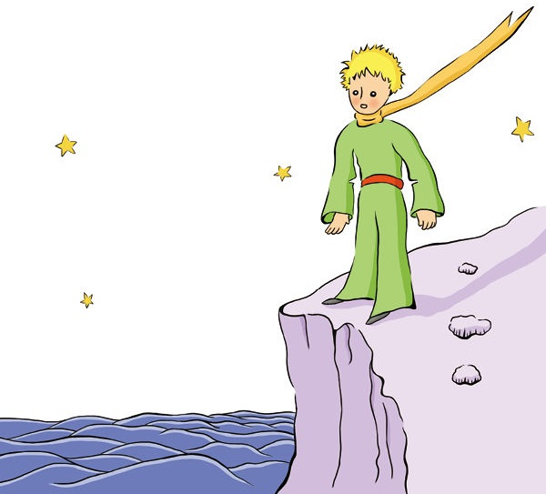
此刻，我总算隐约看见一线闪光，这一线闪光透露出他那神秘的身世。于是，我毫不迟疑地一个劲追问：
J’entrevis aussitôt une lueur, dans le mystère de sa présence, et j’interrogeai brusquement :
That was when I had the first clue to the mystery of his presence, and I questioned him sharply.
“那么你是从其他星球来的？”
– Tu viens donc d’une autre planète ?
“Do you come from another planet?”
他没有回答，只微微摇着头，两眼盯着我的那架飞机说：
Mais il ne me répondit pas. Il hochait la tête doucement tout en regardant mon avion :
But he made no answer. He shook his head a little, still staring at my airplane.
“就凭这玩意儿，你的确不可能来自非常遥远的地方……”
– C’est vrai que, là-dessus, tu ne peux pas venir de bien loin…
“Of course, that couldn’t have brought you from very far…”
好长一段时间里他没有开口。后来，他又从口袋里掏出我画的绵羊，埋头审视着手中的宝藏。
Et il s’enfonça dans une rêverie qui dura longtemps. Puis, sortant mon mouton de sa poche, il se plongea dans la contemplation de son trésor.
And he fell into a reverie that lasted a long while. Then, taking my sheep out of his pocket, he plunged into contemplation of his treasure.
你不难想像，这个让人半信半疑的“另一个星球”的事儿勾起了我多么大的好奇。所以，我便想方设法在这个话题中挖出更多的真相。
Vous imaginez combien j’avais pu être intrigué par cette demi-confidence sur « les autres planètes ». Je m’efforçai donc d’en savoir plus long :
You can imagine how intrigued I was by this hint about “other planets.” I tried to learn more:
“我的小人儿，你到底从哪里来的？你所说的‘我住的地方’又是指什么？你想把你的绵羊带到哪儿去？”
– D’où viens-tu, mon petit bonhomme ? Où est-ce « chez toi » ? Où veux-tu emporter mon mouton ?
“Where do you come from, little fellow? Where is this ‘where I live’ of yours? Where will you be taking my sheep?”
他沉默了好一阵子才回答说：
Il me répondit après un silence méditatif :
After a thoughtful silence he answered,
“你给我的那只盒子好极了！到了夜里，便是它休息的窝了。”
– Ce qui est bien, avec la caisse que tu m’as donnée, c’est que, la nuit, ça lui servira de maison.
“The good thing about the crate you’ve given me is that he can use it for a house after dark.”
“是的，而且，我还可以给你一条绳子，白天把它拴住；再给你一根柱子作桩，绳子就可以固定在上面。”
– Bien sûr. Et si tu es gentil, je te donnerai aussi une corde pour l’attacher pendant le jour. Et un piquet.
“Of course. And if you’re good, I’ll give you a rope to tie him up during the day. And a stake to tie him to.”
可是，我的这些话似乎吓着了小王子：
La proposition parut choquer le petit prince :
This proposition seemed to shock the little prince.
“把它拴住？怎么能这样！”
– L’attacher ? Quelle drôle d’idée !
“Tie him up? What a funny idea!”
“可要是你不拴住它，”我说，“它肯定会到处乱跑，最后会走丢了的。”
– Mais si tu ne l’attaches pas, il ira n’importe où, et il se perdra…
“But if you don’t tie him up, he’ll wander off somewhere and get lost.”
我的伙伴立刻发出一阵响亮的笑声：
Et mon ami eut un nouvel éclat de rire :
My friend burst out laughing again.
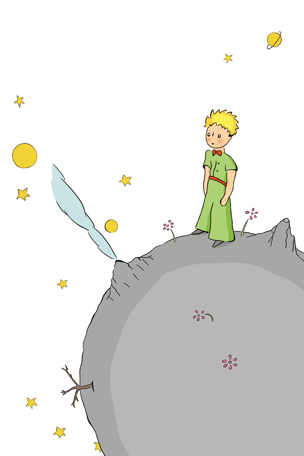
“你说它会跑到哪里去呢？”
– Mais où veux-tu qu’il aille !
“Where could he go?”
“哪里都有可能呀！一直走下去不就是啦。”
– N’importe où. Droit devant lui…
“Anywhere. Straight ahead…”
小王子这时非常诚恳地告诉我说：
Alors le petit prince remarqua gravement :
Then the little prince remarked quite seriously,
“那没有问题，我住的地方，什么都是小小的。”
– Ça ne fait rien, c’est tellement petit, chez moi !
“Even if he did, everything’s so small where I live!”
他略带伤感地接着说：
Et, avec un peu de mélancolie, peut-être, il ajouta :
And he added, perhaps a little sadly,
“随它一直往前走吧！谁都不可能走很远的……”
– Droit devant soi on ne peut pas aller bien loin…
“Straight ahead, you can’t go very far.”
4 B-612星球
此后，我又探询出第二个重要的事实：小王子所在的那个星球，几乎不比一幢房子大。
J’avais ainsi appris une seconde chose très importante : C’est que sa planète d’origine était à peine plus grande qu’une maison !
THAT WAS HOW I had learned a second very important thing, which was that the planet he came from was hardly bigger than a house!
这个事实并没有让我感到非常吃惊。我知道，宇宙中除了诸如地球、木星、火星、金星等等已经被命名的大型星球外，还有无数连望远镜都难以观测到的小星体。天文学家发现它们后甚至连正式的名字也不给，通常只是编个代号，例如就叫做“小行星325”等等。
Ça ne pouvait pas m’étonner beaucoup. Je savais bien qu’en dehors des grosses planètes comme la Terre, Jupiter, Mars, Vénus, auxquelles on a donné des noms, il y en a des centaines d’autres qui sont quelquefois si petites qu’on a beaucoup de mal à les apercevoir au télescope. Quand un astronome découvre l’une d’elles, il lui donne pour nom un numéro. Il l’appelle par exemple : « l’astéroïde 325. »
That couldn’t surprise me much. I knew very well that except for the huge planets like Earth, Jupiter, Mars, and Venus, which have been given names, there are hundreds of others that are sometimes so small that it’s very difficult to see them through a telescope. When an astronomer discovers one of them, he gives it a number instead of a name. For instance, he would call it “Asteroid 325.”
我想，小王子肯定就来自那个叫B-612的小行星。1909年它被一位土耳其天文学家通过望远镜观测到过一次。那位土耳其学者曾将自己的发现向国际天文协会作了呈报，证明自己的观测结果。但当时没有人相信那位穿着土耳其服装的天文学家的话。大人们通常就是持这种态度的，以衣冠取人。
J’ai de sérieuses raisons de croire que la planète d’où venait le petit prince est l’astéroïde B 612. Cet astéroïde n’a été aperçu qu’une fois au télescope, en 1909, par un astronome turc. Il avait fait alors une grande démonstration de sa découverte à un Congrès International d’Astronomie. Mais personne ne l’avait cru à cause de son costume. Les grandes personnes sont comme ça.
I have serious reasons to believe that the planet the little prince came from is Asteroid B-612. This asteroid has been sighted only once by telescope, in 1909 by a Turkish astronomer, who had then made a formal demonstration of his discovery at an International Astronomical Congress. But no one had believed him on account of the way he was dressed. Grown-ups are like that.
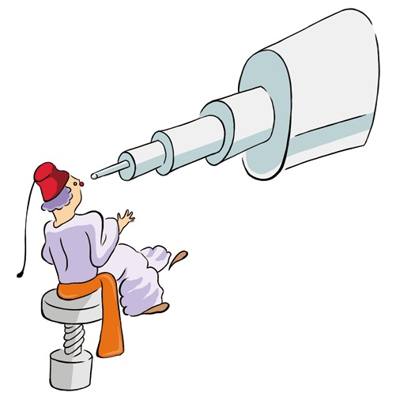
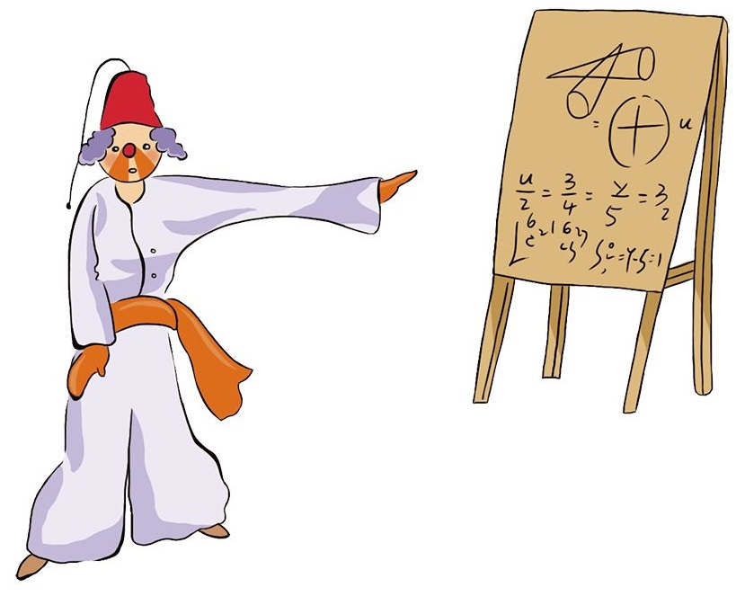
幸好当时一位土耳其独裁者颁布了一条法令，规定其子民改着欧式服装，否则处死。这对B-612这颗小行星当然是件好事。那位土耳其学者于1920年终于身着体面的西服，再次提出了报告，得到了大家的认可。
Heureusement pour la réputation de l’astéroïde B 612 un dictateur turc imposa à son peuple, sous peine de mort, de s’habiller à l’Européenne. L’astronome refit sa démonstration en 1920, dans un habit très élégant. Et cette fois-ci tout le monde fut de son avis.
Fortunately for the reputation of Asteroid B-612, a Turkish dictator ordered his people, on pain of death, to wear European clothes. The astronomer repeated his demonstration in 1920, wearing a very elegant suit. And this time everyone believed him.
我如此不厌其烦地叙述有关这颗小行星的事，还一再提到B-612这个编号，无非是为了迎合大人们喜欢数字这样的习性。当你告诉人们你有了新朋友时，他们不会向你打听有关人的性情方面的事，不会问你：“他说话的声调如何？有什么爱好？是否采集蝴蝶？”而总喜欢问：“他多大年龄？几位兄弟？体重多少？父亲的月收入多少？”他们认为凭这些，就能了解一个人。要是你跟他们说：“我看到了一幢漂亮的红房子，窗口垂着天竺葵，鸽子在屋前憩息……”他们甚至不能想像那是什么样子。他们希望你这样介绍：“我看到了一幢价值十万法郎的房子。”那时他们才会惊呼：“哇！多么漂亮的房子呀！”就是这样。
Si je vous ai raconté ces détails sur l’astéroïde B 612 et si je vous ai confié son numéro, c’est à cause des grandes personnes. Les grandes personnes aiment les chiffres. Quand vous leur parlez d’un nouvel ami, elles ne vous questionnent jamais sur l’essentiel. Elles ne vous disent jamais : « Quel est le son de sa voix ? Quels sont les jeux qu’il préfère ? Est-ce qu’il collectionne les papillons ? » Elles vous demandent : « Quel âge a-t-il ? Combien a-t-il de frères ? Combien pèse-t-il ? Combien gagne son père ? » Alors seulement elles croient le connaître. Si vous dites aux grandes personnes : « J’ai vu une belle maison en briques roses, avec des géraniums aux fenêtres et des colombes sur le toit… » elles ne parviennent pas à s’imaginer cette maison. Il faut leur dire : « J’ai vu une maison de cent mille francs. » Alors elles s’écrient : « Comme c’est joli ! »
If I’ve told you these details about Asteroid B-612 and if I’ve given you its number, it is on account of the grown-ups. Grown-ups like numbers. When you tell them about a new friend, they never ask questions about what really matters. They never ask: “What does his voice sound like?” “What games does he like best?” “Does he collect butterflies?” They ask: “How old is he?” “How many brothers does he have?” “How much does he weigh?” “How much money does his father make?” Only then do they think they know him. If you tell grown-ups, “I saw a beautiful red brick house, with geraniums at the windows and doves on the roof…” they won’t be able to imagine such a house. You have to tell them, “I saw a house worth a hundred thousand francs.” Then they exclaim, “What a pretty house!”
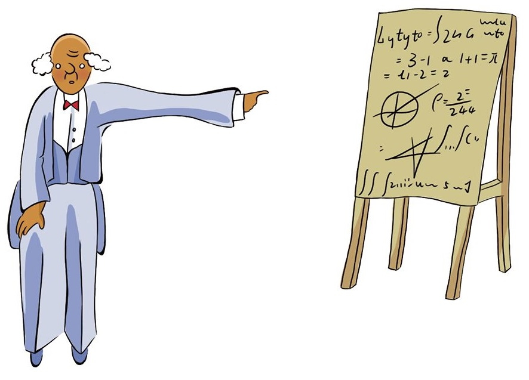
要是你告诉他们：“确实有个小王子存在着。他面带笑容，非常可爱，正在寻找一只绵羊；这个现象本身就说明了他的存在。”但这样的说话对他们毫无作用，他们会对你耸耸肩，说你还太小。但如果你说：“他来自B-612号小行星。”他们就会不再怀疑，完全相信你的话了。大人们的这种习性很难改变，孩子们除了忍耐，对此毫无办法。
Ainsi, si vous leur dites : « La preuve que le petit prince a existé c’est qu’il était ravissant, qu’il riait, et qu’il voulait un mouton. Quand on veut un mouton, c’est la preuve qu’on existe » elles hausseront les épaules et vous traiteront d’enfant ! Mais si vous leur dites : « La planète d’où il venait est l’astéroïde B 612 » alors elles seront convaincues, et elles vous laisseront tranquille avec leurs questions. Elles sont comme ça. Il ne faut pas leur en vouloir. Les enfants doivent être très indulgents envers les grandes personnes.
So if you tell them: “The proof of the little prince’s existence is that he was delightful, that he laughed, and that he wanted a sheep. When someone wants a sheep, that proves he exists,” they shrug their shoulders and treat you like a child! But if you tell them: “The planet he came from is Asteroid B-612,” then they’ll be convinced, and they won’t bother you with their questions. That’s the way they are. You must not hold it against them. Children should be very understanding of grown-ups.
不过，对于我们这些了解生命的人来说：数字并不重要。我想以童话的形式来说故事，告诉人们：
Mais, bien sûr, nous qui comprenons la vie, nous nous moquons bien des numéros ! J’aurais aimé commencer cette histoire à la façon des contes de fées. J’aurais aimé dire :
But, of course, those of us who understand life couldn’t care less about numbers! I should have liked to begin this story like a fairytale. I should have liked to say:
“从前有那么个小王子，住在一个比他本人大不了多少的星球上，他想要一只绵羊……”只要对生命有所了解，这样的故事便会让人感到有其真实性。
« Il était une fois un petit prince qui habitait une planète à peine plus grande que lui, et qui avait besoin d’un ami… » Pour ceux qui comprennent la vie, ça aurait eu l’air beaucoup plus vrai.
“Once upon a time there was a little prince who lived on a planet hardly any bigger than he was, and who needed a friend…” For those who understand life, that would sound much truer.
我不愿意人们在阅读我的这本小书时，只是草草地浏览一遍。我记下这些往事心里已经很不好受。我的朋友带着他的小羊离我而去至今已有六个年头。我是怕日后淡忘了他才这样详细地叙述他。忘了自己的朋友是件很悲哀的事，因为并非人人都有自己的朋友。要是我忘了他，那我就有可能会变得和那些除了数字之外对什么都漠不关心的人一样了……所以，我又去买了铅笔和颜料。人到了这个年龄，要再重新拿起笔来并不容易，更何况我从六岁画过巨蟒吞象图后，就再也没有画过别的什么画了。因此，我尽自己所能画得逼真一点，而能否成功就很难说了。也许一幅还可以过得去，但另一幅就不一定了。我还常常犯错，譬如小王子的身高问题，我往往没有个准，而且他衣服的颜色也不很统一。所以我只能尽力而为，但愿大体上能过得去就好。说不定有些关键的细节不准确，这我也没有办法，因为我的朋友从未向我解释什么。可能他认为我跟他差不多。但事实上，我连如何透过盒子四壁看到里面的那只小绵羊还不清楚呢！也许，我已经有点像成人了。我毕竟年龄不小啦！
Car je n’aime pas qu’on lise mon livre à la légère. J’éprouve tant de chagrin à raconter ces souvenirs. Il y a six ans déjà que mon ami s’en est allé avec son mouton. Si j’essaie ici de le décrire, c’est afin de ne pas l’oublier. C’est triste d’oublier un ami. Tout le monde n’a pas eu un ami. Et je puis devenir comme les grandes personnes qui ne s’intéressent plus qu’aux chiffres. C’est donc pour ça encore que j’ai acheté une boîte de couleurs et des crayons. C’est dur de se remettre au dessin, à mon âge, quand on n’a jamais fait d’autres tentatives que celle d’un boa fermé et celle d’un boa ouvert, à l’âge de six ans ! J’essaierai, bien sûr, de faire des portraits le plus ressemblants possible. Mais je ne suis pas tout à fait certain de réussir. Un dessin va, et l’autre ne ressemble plus. Je me trompe un peu aussi sur la taille. Ici le petit prince est trop grand. Là il est trop petit. J’hésite aussi sur la couleur de son costume. Alors je tâtonne comme ci et comme ça, tant bien que mal. Je me tromperai enfin sur certains détails plus importants. Mais ça, il faudra me le pardonner. Mon ami ne donnait jamais d’explications. Il me croyait peut-être semblable à lui. Mais moi, malheureusement, je ne sais pas voir les moutons à travers les caisses. Je suis peut-être un peu comme les grandes personnes. J’ai dû vieillir.
The fact is, I don’t want my book to be taken lightly. Telling these memories is so painful for me. It’s already been six years since my friend went away, taking his sheep with him. If I try to describe him here, it's so I won’t forget him. It’s sad to forget a friend. Not everyone has had a friend. And I might become like the grown-ups who are no longer interested in anything but numbers. Which is still another reason why I’ve bought a box of paints and some pencils. It’s hard to go back to drawing, at my age, when you’ve never made any attempts since the one of a boa from inside and the one of a boa from outside, at the age of six! I’ll certainly try to make my portraits as true to life as possible. But I’m not entirely sure of succeeding. One drawing works, and the next no longer bears any resemblance. And I’m a little off on his height, too. In this one the little prince is too tall. And here he's too short. And I’m uncertain about the color of his suit. So I grope in one direction and another, as best I can. In the end, I’m sure to get certain more important details all wrong. But here you’ll have to forgive me. My friend never explained anything. Perhaps he thought I was like himself. But I, unfortunately, cannot see a sheep through the sides of a crate. I may be a little like the grown-ups. I must have grown old.
5 猴面包树
日子就这样一天天地过去，通过和小王子的交谈，渐渐知道了一些关于他所在的小行星和他出来旅行的事。所有这一切都是他平时不注意时流露出来的。关于猴面包树所引起的灾难，是我在第三天听到的。
Chaque jour j’apprenais quelque chose sur la planète, sur le départ, sur le voyage. Ça venait tout doucement, au hasard des réflexions. C’est ainsi que, le troisième jour, je connus le drame des baobabs.
EVERY DAY I’D LEARN something about the little prince’s planet, about his departure, about his journey. It would come quite gradually, in the course of his remarks. This was how I learned, on the third day, about the drama of the baobabs.
这次，我还得感谢那只绵羊。因为小王子好像非常担忧地问我：
Cette fois-ci encore ce fut grâce au mouton, car brusquement le petit prince m’interrogea, comme pris d’un doute grave :
This time, too, I had the sheep to thank, for suddenly the little prince asked me a question, as if overcome by a grave doubt.
“是真的吗？那只绵羊只吃小灌木吗？”
– C’est bien vrai, n’est-ce pas, que les moutons mangent les arbustes ?
“Isn’t it true that sheep eat bushes?”
“当然是真的！”
– Oui. C’est vrai.
“Yes, that’s right.”
“噢，我真高兴！”
– Ah ! Je suis content.
“Ah! I’m glad.”
我不懂为什么那只绵羊是否只吃小灌木对他竟有那么重要。小王子又往下问道：
Je ne compris pas pourquoi il était si important que les moutons mangeassent les arbustes. Mais le petit prince ajouta :
I didn’t understand why it was so important that sheep should eat bushes. But the little prince added:
“还有，它们也吃猴面包树吗？”
– Par conséquent ils mangent aussi les baobabs ?
“And therefore they eat baobabs, too?”
我告诉小王子，猴面包树并非小灌木；它们能长得和教堂一样高大，即便赶着一群大象来，也吃不了一棵大猴面包树！
Je fis remarquer au petit prince que les baobabs ne sont pas des arbustes, mais des arbres grands comme des églises et que, si même il emportait avec lui tout un troupeau d’éléphants, ce troupeau ne viendrait pas à bout d’un seul baobab.
I pointed out to the little prince that baobabs are not bushes but trees as tall as churches, and that even if he took a whole herd of elephants back to his planet, that herd couldn’t finish off a single baobab.
赶象群来的想法逗得小王子开怀大笑，他说：
L’idée du troupeau d’éléphants fit rire le petit prince :
The idea of the herd of elephants made the little prince laugh.
“那样的话咱们得让大象们一个叠一个才行。”
– Il faudrait les mettre les uns sur les autres…
“We’d have to pile them on top of one another.”
当然，他也会说得很有道理：
Mais il remarqua avec sagesse :
But he observed perceptively:
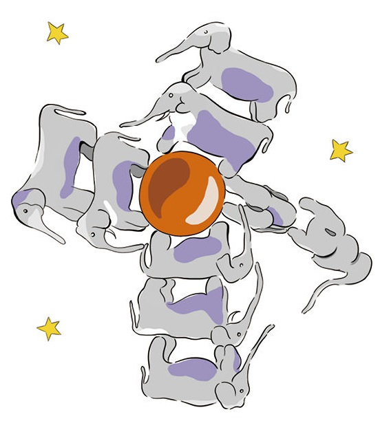
“别看猴面包树如今这么高大，它们最初也是很小的。”
– Les baobabs, avant de grandir, ça commence par être petit.
“Before they grow big, baobabs start out by being little.”
“那当然！”我说，“但你为什么要绵羊去啃小猴面包树呢？”
– C’est exact ! Mais pourquoi veux-tu que tes moutons mangent les petits baobabs ?
“True enough! But why do you want your sheep to eat little baobabs?” He answered,
他随即又嚷嚷起来：“哦！算啦！”似乎他说的事明摆着似的。因而，我也只能自己来设法揭开这个谜了。
Il me répondit : « Ben ! Voyons ! » comme s’il s’agissait là d’une évidence. Et il me fallut un grand effort d’intelligence pour comprendre à moi seul ce problème.
“Oh, come on! You know!” as if we were talking about something quite obvious. And I was forced to make a great mental effort to understand this problem all by myself.
其实，据我所知，在小王子居住的星球上，也像在其他星球上一样，植物也有好坏之分。当然是好植物结好种子，坏植物结坏种子。而这些种子埋没在幽暗的地下，谁都看不见，直到其中某一颗忽然苏醒过来，才慢慢发芽滋长，向着阳光，舒展细细的枝条。要是那是萝卜或蔷薇的嫩芽，人们就会让它自由成长，但假如是棵有害植物，人们一认出来就会毁了它。在小王子所居住的星球上，也有不少令人讨厌的坏种子，譬如猴面包树籽。那里的土地饱受其害，要是发现太晚，就难以根治了。它的根会到处蔓延，最终盘踞整个星球。万一星体面积有限，而猴面包树又太多，那它们就会把整个星球撑破……
Et en effet, sur la planète du petit prince, il y avait comme sur toutes les planètes, de bonnes herbes et de mauvaises herbes. Par conséquent de bonnes graines de bonnes herbes et de mauvaises graines de mauvaises herbes. Mais les graines sont invisibles. Elles dorment dans le secret de la terre jusqu’à ce qu’il prenne fantaisie à l’une d’elles de se réveiller. Alors elle s’étire, et pousse d’abord timidement vers le soleil une ravissante petite brindille inoffensive. S’il s’agit d’une brindille de radis ou de rosier, on peut la laisser pousser comme elle veut. Mais s’il s’agit d’une mauvaise plante, il faut arracher la plante aussitôt, dès qu’on a su la reconnaître. Or il y avait des graines terribles sur la planète du petit prince… c’étaient les graines de baobabs. Le sol de la planète en était infesté. Or un baobab, si l’on s’y prend trop tard, on ne peut jamais plus s’en débarrasser. Il encombre toute la planète. Il la perfore de ses racines. Et si la planète est trop petite, et si les baobabs sont trop nombreux, ils la font éclater.
And, in fact, on the little prince’s planet there were – as on all planets – good plants and bad plants. The good plants come from good seeds, and the bad plants from bad seeds. But the seeds are invisible. They sleep in the secrecy of the ground until one of them decides to wake up. Then it stretches and begins to sprout, quite timidly at first, a charming, harmless little twig reaching toward the sun. If it’s a radish seed, or a rosebush seed, you can let it sprout all it likes. But if it’s the seed of a bad plant, you must pull the plant up right away, as soon as you can recognize it. As it happens, there were terrible seeds on the little prince’s planet… baobab seeds. The planet’s soil was infested with them. Now if you attend to a baobab too late, you can never get rid of it again. It overgrows the whole planet. Its roots pierce right through. And if the planet is too small, and if there are too many baobabs, they make it burst into pieces.
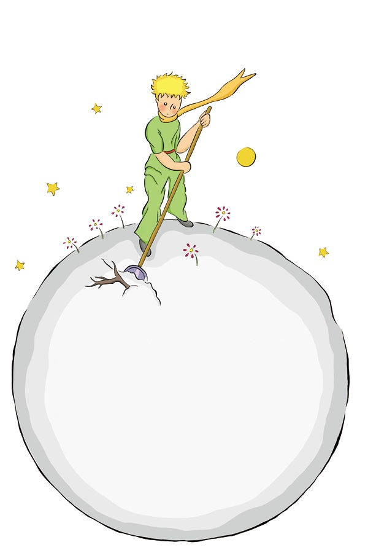
“这需要严格的纪律，”小王子后来对我说，“每天早上一个人盥洗结束后，就得认真打扫自己的星球。猴面包树的幼苗和蔷薇非常相似，必须仔细加以辨别，一旦发现，就得彻底清除。这种事儿很乏味，”小王子接着又说，“但也相当简单。”
« C’est une question de discipline, me disait plus tard le petit prince. Quand on a terminé sa toilette du matin, il faut faire soigneusement la toilette de la planète. Il faut s’astreindre régulièrement à arracher les baobabs dès qu’on les distingue d’avec les rosiers auxquels ils ressemblent beaucoup quand ils sont très jeunes. C’est un travail très ennuyeux, mais très facile. »
“It’s a question of discipline,” the little prince told me later on. “When you’ve finished washing and dressing each morning, you must tend your planet. You must be sure you pull up the baobabs regularly, as soon as you can tell them apart from the rosebushes, which they closely resemble when they’re very young. It’s very tedious work, but very easy.”
有一天他对我说：“你应该画幅漂亮的画。那样，你故乡的孩子们就可以知道这儿的一切了。要是哪一天他们想出来旅行，这就会很有用了！”接着他又说，“有时候，把某件事拖延一天并没有什么妨碍，但对猴面包树来说，只要拖上一天说不定就会出大问题。我听说过一个住着懒汉的星球，他由于疏忽了三棵小树苗，结果……”
Et un jour il me conseilla de m’appliquer à réussir un beau dessin, pour bien faire entrer ça dans la tête des enfants de chez moi. « S’ils voyagent un jour, me disait-il, ça pourra leur servir. Il est quelquefois sans inconvénient de remettre à plus tard son travail. Mais, s’il s’agit des baobabs, c’est toujours une catastrophe. J’ai connu une planète, habitée par un paresseux. Il avait négligé trois arbustes… »
And one day he advised me to do my best to make a beautiful drawing, for the edification of the children where I live. “If they travel someday,” he told me, “it could be useful to them. Sometimes there’s no harm in postponing your work until later. But with baobabs, it’s always a catastrophe. I knew one planet that was inhabited by a lazy man. He had neglected three bushes…”
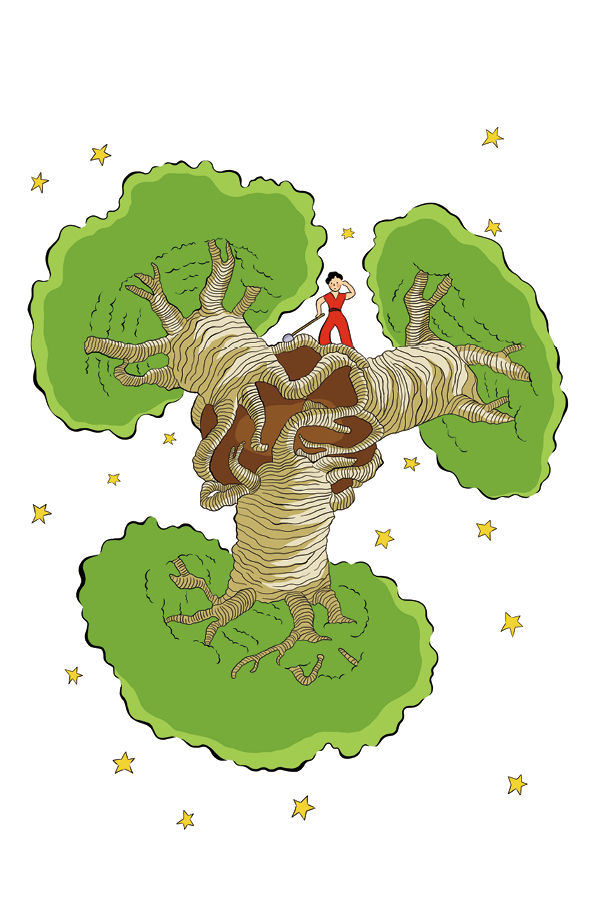
就这样，我按照小王子的描述画下了那个星球的情形。我讨厌以说教的口吻对人说话，但人们对猴面包树的危害几乎一无所知，而这种危机又是每个在小星球上迷路的人都有可能遭遇的，所以我不能沉默，不止一次地提醒他们：“要当心猴面包树！”我的朋友们跟我一样，长期处在这种危机之中而毫无知觉。所以，为了他们，我得努力画好这幅画。要能使大伙儿对此有所警觉，我费再大的心去做这件事也是值得的。也许你会问我：“为什么书里所有的插图，没有一张能像这幅画那么深刻动人？”回答很简单，我已经努力过，但画别的画并不成功，而在画这幅猴面包树时，我却为某种紧迫需要的力量所激励，从而超越了我自身原有的水准。
Et, sur les indications du petit prince, j’ai dessiné cette planète-là. Je n’aime guère prendre le ton d’un moraliste. Mais le danger des baobabs est si peu connu, et les risques courus par celui qui s’égarerait dans un astéroïde sont si considérables, que, pour une fois, je fais exception à ma réserve. Je dis : « Enfants ! Faites attention aux baobabs ! » C’est pour avertir mes amis d’un danger qu’ils frôlaient depuis longtemps, comme moi-même, sans le connaître, que j’ai tant travaillé ce dessin-là. La leçon que je donnais en valait la peine. Vous vous demanderez peut-être : Pourquoi n’y a-t-il pas, dans ce livre, d’autres dessins aussi grandioses que le dessin des baobabs ? La réponse est bien simple : J’ai essayé mais je n’ai pas pu réussir. Quand j’ai dessiné les baobabs j’ai été animé par le sentiment de l’urgence.
So, following the little prince’s instructions, I have drawn that planet. I don’t much like assuming the tone of a moralist. But the danger of baobabs is so little recognized, and the risks run by anyone who might get lost on an asteroid are so considerable, that for once I am making an exception to my habitual reserve. I say, “Children, watch out for baobabs!” It’s to warn my friends of a danger of which they, like myself, have long been unaware that I worked so hard on this drawing. The lesson I’m teaching is worth the trouble. You may be asking, “Why are there no other drawings in this book as big as the drawing of the baobabs?” There’s a simple answer: I tried but I couldn’t manage it. When I drew the baobabs, I was inspired by a sense of urgency.
6 四十四次日落
哦，小王子！我点点滴滴地逐步了解了你那悲伤的小生命的秘密……好久以来，惟一使你高兴的享受，便是观赏落日那种宁静的乐趣。我是在第四天早晨才了解这个新的细节的。当时你对我这么说：
Ah ! petit prince, j’ai compris, peu à peu, ainsi, ta petite vie mélancolique. Tu n’avais eu longtemps pour distraction que la douceur des couchers de soleil. J’ai appris ce détail nouveau, le quatrième jour au matin, quand tu m’as dit :
O LITTLE PRINCE! Gradually, this was how I came to understand your sad little life. For a long time your only entertainment was the pleasure of sunsets. I learned this new detail on the morning of the fourth day when you told me:
“我好喜爱落日。走，让我们一块儿去观赏观赏夕阳吧！”
– J’aime bien les couchers de soleil. Allons voir un coucher de soleil…
“I really like sunsets. Let’s go look at one now…”
“但我们得等一等呀！”我说。
– Mais il faut attendre…
“But we have to wait…”
“等什么？”
– Attendre quoi ?
“What for?”
“等太阳下去啊，得等到黄昏时才行吧！”
– Attendre que le soleil se couche.
“For the sun to set.”
开始你似乎感到惊讶，后来才自嘲地笑着对我说：
Tu as eu l’air très surpris d’abord, et puis tu as ri de toi-même. Et tu m’as dit :
At first you seemed quite surprised, and then you laughed at yourself. And you said to me,
“我还以为在自己家里呢！”
– Je me crois toujours chez moi !
“I think I’m still at home!”
这个道理很简单，谁都知道，美国正午时分，恰是法国日落之时。要是你能在一分钟内飞到法国，那就可以从日中一下跨到日落。可惜的是用一分钟直飞法国根本做不到。可是，我亲爱的小王子，在你的小星球上，不管什么时候，只要你高兴，把坐椅挪动几步，就可以尽情观赏落日的美景了……
En effet. Quand il est midi aux États-Unis, le soleil, tout le monde le sait, se couche sur la France. Il suffirait de pouvoir aller en France en une minute pour assister au coucher de soleil. Malheureusement la France est bien trop éloignée. Mais, sur ta si petite planète, il te suffisait de tirer ta chaise de quelques pas. Et tu regardais le crépuscule chaque fois que tu le désirais…
Indeed. When it’s noon in the United States, the sun, as everyone knows, is setting over France. If you could fly to France in one minute, you could watch the sunset. Unfortunately France is much too far. But on your tiny planet, all you had to do was move your chair a few feet. And you would watch the twilight whenever you wanted to…
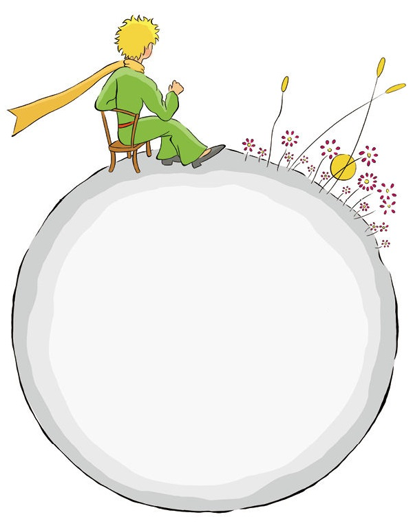
“有一天，”你对我说，“我看了四十四次落日。”
– Un jour, j’ai vu le soleil se coucher quarante-trois fois !
“One day I saw the sun set forty-four times!”
一会儿之后你又说：
Et un peu plus tard tu ajoutais :
And a little later you added,
“你知道，当一个人悲伤的时候，总喜欢看夕阳。”
– Tu sais… quand on est tellement triste on aime les couchers de soleil…
“You know, when you’re feeling very sad, sunsets are wonderful…”
“那么说，你看了四十四次落日的那天，”我问他，“一定是很伤心？”
– Le jour des quarante-trois fois tu étais donc tellement triste ?
“On the day of the forty-four times, were you feeling very sad?”
小王子并没有回答这个问题。
Mais le petit prince ne répondit pas.
But the little prince didn’t answer.
7 花与刺的纷争
第五天——和往常一样，我该感谢那只绵羊——小王子又一次泄露出了他生命中的秘密。有个问题也许已在他的脑海存在好久了，这次，他突然提了出来：
Le cinquième jour, toujours grâce au mouton, ce secret de la vie du petit prince me fut révélé. Il me demanda avec brusquerie, sans préambule, comme le fruit d’un problème longtemps médité en silence :
ON THE FIFTH DAY, thanks again to the sheep, another secret of the little prince’s life was revealed to me. Abruptly, with no preamble, he asked me, as if it were the fruit of a problem long pondered in silence:
“要是绵羊吃的是小灌木的话，那么它是不是也会把花儿吃掉呢？”
– Un mouton, s’il mange les arbustes, il mange aussi les fleurs ?
“If a sheep eats bushes, does it eat flowers, too?”
“绵羊是有什么就吃什么的。”
– Un mouton mange tout ce qu’il rencontre.
“A sheep eats whatever it finds.”
“连带刺儿的花也吃吗？”
– Même les fleurs qui ont des épines ?
“Even flowers that have thorns?”
“是的，带刺的花儿它也吃。”
– Oui. Même les fleurs qui ont des épines.
“Yes. Even flowers that have thorns.”
“那么，花儿长那些刺又有什么用呢？”
– Alors les épines, à quoi servent-elles ?
“Then what good are thorns?”
“这我可不知道。”此刻我正忙着试图弄松一颗卡在引擎上的螺钉，心里烦得很。因为我发觉飞机受损很严重。更叫我担心的是，我的饮用水已是所剩无几了。
Je ne le savais pas. J’étais alors très occupé à essayer de dévisser un boulon trop serré de mon moteur. J’étais très soucieux car ma panne commençait de m’apparaître comme très grave, et l’eau à boire qui s’épuisait me faisait craindre le pire.
I didn’t know. At that moment I was very busy trying to unscrew a bolt that was jammed in my engine. I was quite worried, for my plane crash was beginning to seem extremely serious, and the lack of drinking water made me fear the worst.
“那些刺到底有什么用呢？”
– Les épines, à quoi servent-elles ?
“What good are thorns?”
小王子又一次追着我问，他是那种不解开疑团不罢休的人。而我当时正在为那颗螺钉烦恼，于是我便不假思索脱口而出：
Le petit prince ne renonçait jamais à une question, une fois qu’il l’avait posée. J’étais irrité par mon boulon et je répondis n’importe quoi :
The little prince never let go of a question once he had asked it. I was annoyed by my jammed bolt, and I answered without thinking.
“那些刺儿毫无用处，花儿长刺只能害人！”
– Les épines, ça ne sert à rien, c’est de la pure méchanceté de la part des fleurs !
“Thorns are no good for anything – they’re just the flowers’ way of being mean!”
“噢！”
– Oh !
“Oh!”
沉默了好长一段时间后，小王子突然反驳说：
Mais après un silence il me lança, avec une sorte de rancune :
But after a silence, he lashed out at me, with a sort of bitterness.
“我不信，花儿本身是很脆弱的生物，她们纯洁无邪，只可能自我保护。她们相信她们身上的刺只是一种自卫的武器……”
– Je ne te crois pas ! Les fleurs sont faibles. Elles sont naïves. Elles se rassurent comme elles peuvent. Elles se croient terribles avec leurs épines…
“I don’t believe you! Flowers are weak. They’re naive. They reassure themselves whatever way they can. They believe their thorns make them frightening…”
我没有回答他的话，正对着自己的飞机喃喃自语：“要是螺钉还不松动，看来只能把它敲下来了。”小王子的话再次打断了我的思路：
Je ne répondis rien. À cet instant-là je me disais : « Si ce boulon résiste encore, je le ferai sauter d’un coup de marteau. » Le petit prince dérangea de nouveau mes réflexions :
I made no answer. At that moment I was thinking, “If this bolt stays jammed, I’ll knock it off with the hammer.” Again the little prince disturbed my reflections.
“你真的认为花儿的……”
– Et tu crois, toi, que les fleurs…
“Then you think flowers…”
“哦！不，”我大声地说，“不，我什么也不认为。”我一点也听不进去，“你难道没有看见我手头正忙着要紧的事儿吗？”
– Mais non ! Mais non ! Je ne crois rien ! J’ai répondu n’importe quoi. Je m’occupe, moi, de choses sérieuses !
“No, not at all. I don’t think anything! I just said whatever came into my head. I’m busy here with something serious!”
他惊讶地望着我。
Il me regarda stupéfait.
He stared at me, astounded.
“要紧的事？”
– De choses sérieuses !
“Something serious!”
他睁大双眼凝视着我，我手握锤子，手指沾满黑黑的油污，正低头查看着那些他也许觉得讨厌的东西。
Il me voyait, mon marteau à la main, et les doigts noirs de cambouis, penché sur un objet qui lui semblait très laid.
He saw me holding my hammer, my fingers black with grease, bending over an object he regarded as very ugly.
“你现在的口气就跟那些大人们一个样！”
– Tu parles comme les grandes personnes !
“You talk like the grown-ups!”
我听了感到有点儿惭愧，但小王子还是毫不客气地接着说：
Ça me fit un peu honte. Mais, impitoyable, il ajouta :
That made me a little ashamed. But he added, mercilessly:
“你把事情都给搞混了……把许多事情都扯在了一起……”
– Tu confonds tout… tu mélanges tout !
“You confuse everything . . . You’ve got it all mixed up!”
他真的生气了，用力摇着头，金色的鬈发颤动着。
Il était vraiment très irrité. Il secouait au vent des cheveux tout dorés :
He was really very annoyed. He tossed his golden curls in the wind.
“我知道在某个星球上住着一位红脸绅士。他从没闻过什么花儿，也从不关注什么星星，更没有爱过人。除了把一些数字加在一起之外，就没有做过任何别的事。他整天唠叨的就是你刚才所说的那一句话：‘我正忙着要紧的事呢！’他觉得自己很了不起。不过，这还能算个人吗！不，他不能算人，他只是个蘑菇！”
– Je connais une planète où il y a un Monsieur cramoisi. Il n’a jamais respiré une fleur. Il n’a jamais regardé une étoile. Il n’a jamais aimé personne. Il n’a jamais rien fait d’autre que des additions. Et toute la journée il répète comme toi : « Je suis un homme sérieux ! Je suis un homme sérieux ! » et ça le fait gonfler d’orgueil. Mais ce n’est pas un homme, c’est un champignon !
“I know a planet inhabited by a red-faced gentleman. He’s never smelled a flower. He’s never looked at a star. He’s never loved anyone. He’s never done anything except add up numbers. And all day long he says over and over, just like you, ‘I’m a serious man! I’m a serious man!’ And that puffs him up with pride. But he’s not a man at all—he’s a mushroom!”
“什么？”
– Un quoi ?
“He’s a what?”
“蘑菇！”
– Un champignon !
“A mushroom!”
小王子气得脸都发白了。
Le petit prince était maintenant tout pâle de colère.
The little prince was now quite pale with rage.
“数百万年以来，花儿身上都长着刺，羊儿也都吃着花。难道设法了解花儿为什么长些没用的刺就不要紧吗？绵羊和花儿之间的争端也毫无意义吗？这一切都没有红脸绅士的数字重要吗？要是我认识的一朵长在我星球上的美丽小花，可能在某个早晨被一只小羊糊里糊涂地一口吃掉，你认为这没有什么要紧！唉，我的上帝！”
– Il y a des millions d’années que les fleurs fabriquent des épines. Il y a des millions d’années que les moutons mangent quand même les fleurs. Et ce n’est pas sérieux de chercher à comprendre pourquoi elles se donnent tant de mal pour se fabriquer des épines qui ne servent jamais à rien ? Ce n’est pas important la guerre des moutons et des fleurs ? Ce n’est pas plus sérieux et plus important que les additions d’un gros Monsieur rouge ? Et si je connais, moi, une fleur unique au monde, qui n’existe nulle part, sauf dans ma planète, et qu’un petit mouton peut anéantir d’un seul coup, comme ça, un matin, sans se rendre compte de ce qu’il fait, ce n’est pas important ça !
“For millions of years flowers have been producing thorns. For millions of years sheep have been eating them all the same. And it’s not serious, trying to understand why flowers go to such trouble to produce thorns that are good for nothing? It’s not important, the war between the sheep and the flowers? It’s no more serious and more important than the numbers that fat red gentleman is adding up? “Suppose I happen to know a unique flower, one that exists nowhere in the world except on my planet, one that a little sheep can wipe out in a single bite one morning, just like that, without even realizing what he’s doing – that isn’t important?”
他的脸由白转红，接着往下说：
Il rougit, puis reprit :
His face turned red now, and he went on.
“天上有无数的星星。要是在某个星球上长着某人钟爱的花，那么，即使远隔万里，这个人望着它也会感到说不出的高兴的。他可以对自己说：‘在世界的某个地方，我的花儿……’但要是羊儿把他的花吃了，那么，他眼中的星星肯定会一下子变得黯然无光的……而你却认为这不打紧！”
– Si quelqu’un aime une fleur qui n’existe qu’à un exemplaire dans les millions et les millions d’étoiles, ça suffit pour qu’il soit heureux quand il les regarde. Il se dit : « Ma fleur est là quelque part… » Mais si le mouton mange la fleur, c’est pour lui comme si, brusquement, toutes les étoiles s’éteignaient ! Et ce n’est pas important ça !
“If someone loves a flower of which just one example exists among all the millions and millions of stars, that’s enough to make him happy when he looks at the stars. He tells himself, ‘My flower’s up there somewhere…’ But if the sheep eats the flower, then for him it’s as if, suddenly, all the stars went out. And that isn’t important?”
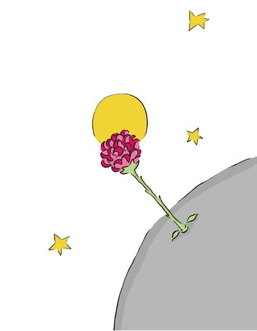
他伤心得连话也说不出来了。夜色四合，我扔掉了手里的工具，什么锤子、螺钉，即使饥渴、死亡又算得了什么呢！就在这里，在我们的这个星球上，有个小人儿多么需要抚慰。我不由得过去搂着他，轻轻地摇着他，对他说：“亲爱的小王子，你深爱的那朵花儿不会有危险的。我会给绵羊画个口罩，再画个栅栏围着那朵花，我会……”我不知道我该再对他说些什么。只觉得自己真傻，犯了这么大的错误。我真不知道怎样才能接近他，安慰他，再次成为好朋友。眼泪的故乡是个多么神秘的地方呀！
Il ne put rien dire de plus. Il éclata brusquement en sanglots. La nuit était tombée. J’avais lâché mes outils. Je me moquais bien de mon marteau, de mon boulon, de la soif et de la mort. Il y avait, sur une étoile, une planète, la mienne, la Terre, un petit prince à consoler ! Je le pris dans les bras. Je le berçai. Je lui disais : « La fleur que tu aimes n’est pas en danger… Je lui dessinerai une muselière, à ton mouton… Je te dessinerai une armure pour ta fleur… Je… » Je ne savais pas trop quoi dire. Je me sentais très maladroit. Je ne savais comment l’atteindre, où le rejoindre… C’est tellement mystérieux, le pays des larmes.
He couldn’t say another word. All of a sudden he burst out sobbing. Night had fallen. I dropped my tools. What did I care about my hammer, about my bolt, about thirst and death? There was, on one star, on one planet, on mine, the Earth, a little prince to be consoled! I took him in my arms. I rocked him. I told him, ”The flower you love is not in danger… I’ll draw you a muzzle for your sheep… I’ll draw you a fence for your flower… I…” I didn’t know what to say. How clumsy I felt! I didn’t know how to reach him, where to find him… It’s so mysterious, the land of tears.
8 玫瑰的故事
不久，我对花儿有了更多的认识。在小王子居住的星球上，花儿常常都很单纯。它们只有一圈花瓣，占的空间很少，也不会打搅任何人。早晨，它们在草地上悄悄地绽放；傍晚，又静静地消失。后来有一天，不知从什么地方吹来一颗种子，它没多久就开始萌芽、生长。小王子仔细地观察着这和星球上其他嫩芽不同的植物，说不定它会是另一种类似于木棉的东西呢！但它后来停止了往上长，开始鼓起一个花苞。望着它，小王子觉得有个奇怪的东西隐藏在它里面。而这朵花却对自己落在这片绿色的地方来展示自己有所不满。她仔细地选择自己的色彩，认真地打扮，修饰着每一片花瓣。她不想和遍地的罂粟花那样，随意地来到这个世界。她希望自己一出现就光芒四射，风情万种。所以她为自己准备了好多天。
J’appris bien vite à mieux connaître cette fleur. Il y avait toujours eu, sur la planète du petit prince, des fleurs très simples, ornées d’un seul rang de pétales, et qui ne tenaient point de place, et qui ne dérangeaient personne. Elles apparaissaient un matin dans l’herbe, et puis elles s’éteignaient le soir. Mais celle-là avait germé un jour, d’une graine apportée d’on ne sait où, et le petit prince avait surveillé de très près cette brindille qui ne ressemblait pas aux autres brindilles. Ça pouvait être un nouveau genre de baobab. Mais l’arbuste cessa vite de croître, et commença de préparer une fleur. Le petit prince, qui assistait à l’installation d’un bouton énorme, sentait bien qu’il en sortirait une apparition miraculeuse, mais la fleur n’en finissait pas de se préparer à être belle, à l’abri de sa chambre verte. Elle choisissait avec soin ses couleurs. Elle s’habillait lentement, elle ajustait un à un ses pétales. Elle ne voulait pas sortir toute fripée comme les coquelicots. Elle ne voulait apparaître que dans le plein rayonnement de sa beauté. Eh ! oui. Elle était très coquette ! Sa toilette mystérieuse avait donc duré des jours et des jours. Et puis voici qu’un matin, justement à l’heure du lever du soleil, elle s’était montrée.
I SOON LEARNED to know that flower better. On the little prince’s planet, there had always been very simple flowers, decorated with a single row of petals so that they took up no room at all and got in no one’s way. They would appear one morning in the grass, and would fade by nightfall. But this one had grown from a seed brought from who knows where, and the little prince had kept a close watch over a sprout that was not like any of the others. It might have been a new kind of baobab. But the sprout soon stopped growing and began to show signs of blossoming. The little prince, who had watched the development of an enormous bud, realized that some sort of miraculous apparition would emerge from it, but the flower continued her beauty preparations in the shelter of her green chamber, selecting her colors with the greatest care and dressing quite deliberately, adjusting her petals one by one. She had no desire to emerge all rumpled, like the poppies. She wished to appear only in the full radiance of her beauty. Oh yes, she was quite vain! And her mysterious adornment had lasted days and days. And then one morning, precisely at sunrise, she showed herself.
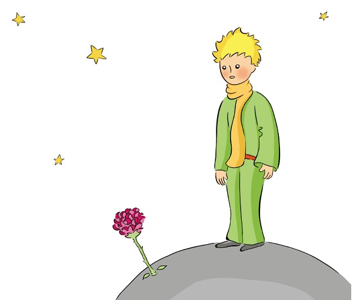
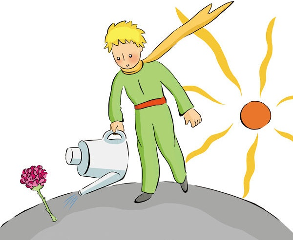
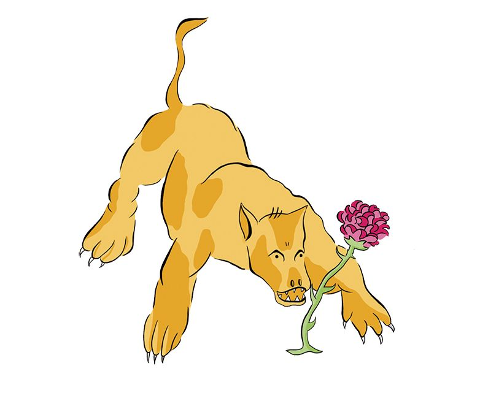
终于，在一个阳光明媚的早晨，她突然掀开了面纱，悄悄地绽放了。由于那么多日子的劳累，她打着哈欠，娇态动人地说：
Et elle, qui avait travaillé avec tant de précision, dit en bâillant :
And after having labored so painstakingly, she yawned and said,
“哎，我还没有完全醒过来呢！请原谅，我的花瓣儿还是乱糟糟的……”
– Ah ! Je me réveille à peine… Je vous demande pardon… Je suis encore toute décoiffée…
“Ah! I’m hardly awake… Forgive me… I’m still all untidy…”
而小王子看了，已经忍不住赞美开了：
Le petit prince, alors, ne put contenir son admiration :
But the little prince couldn’t contain his admiration.
“哇，你真是太漂亮了！”
– Que vous êtes belle !
“How lovely you are!”
“可不是吗？”花儿娇滴滴地回答说，“我是在阳光升起的时刻诞生的呀！……”
– N’est-ce pas, répondit doucement la fleur. Et je suis née en même temps que le soleil…
“Aren’t I?” the flower answered sweetly. “And I was born the same time as the sun…”
小王子马上就能断定，她一点儿也不懂得谦虚。可她确实美丽动人，充满着魅力！
Le petit prince devina bien qu’elle n’était pas trop modeste, mais elle était si émouvante !
The little prince realized that she wasn’t any too modest, but she was so dazzling!
“我想，该是用早餐的时间了吧！”接着她又说，“劳驾，给我……”
– C’est l’heure, je crois, du petit déjeuner, avait-elle bientôt ajouté, auriez-vous la bonté de penser à moi…
“I believe it is breakfast time,” she had soon added. “Would you be so kind as to tend to me?”
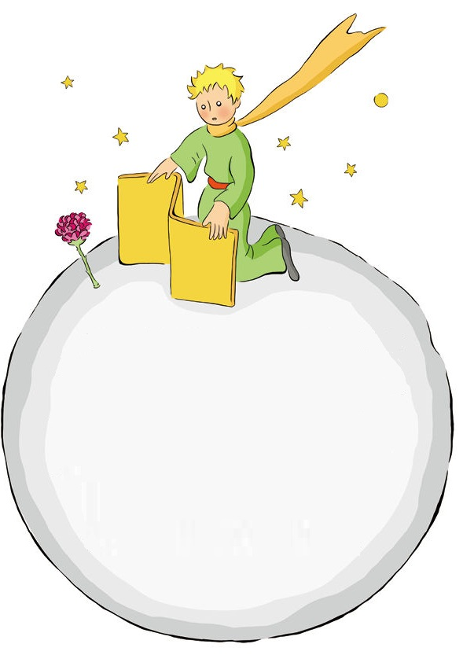
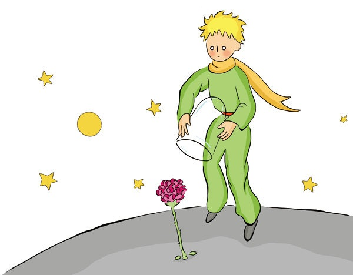
小王子听了，有点不知所措，随即跑去找了一壶清水。就这样，他着手照顾起这朵花儿来了。
Et le petit prince, tout confus, ayant été chercher un arrosoir d’eau fraîche, avait servi la fleur.
And the little prince, utterly abashed, having gone to look for a watering can, served the flower.
而这花儿呢，由于虚荣心作怪，不久就给他添了种种麻烦——早知如此，他也许不会那么冲动了。譬如，她有一天说到自己身上的四个刺的时候，对小王子说：
Ainsi l’avait-elle bien vite tourmenté par sa vanité un peu ombrageuse. Un jour, par exemple, parlant de ses quatre épines, elle avait dit au petit prince :
She had soon begun tormenting him with her rather touchy vanity. One day, for instance, alluding to her four thorns, she remarked to the little prince,
“老虎要来张牙舞爪就让它们来吧，我可一点也不怕它们。”
– Ils peuvent venir, les tigres, avec leurs griffes !
“I’m ready for tigers, with all their claws!”
“我这星球上没有什么老虎，”小王子可不以为然，“再说，老虎是不吃杂草的。”
– Il n’y a pas de tigres sur ma planète, avait objecté le petit prince, et puis les tigres ne mangent pas l’herbe.
“There are no tigers on my planet,” the little prince had objected, “and besides, tigers don’t eat weeds.”
“我才不是杂草呢！”花儿娇气十足地说。
– Je ne suis pas une herbe, avait doucement répondu la fleur.
“I am not a weed,” the flower sweetly replied.”
“对不起，我……”
– Pardonnez-moi…
“Forgive me…”
“我一点也不怕老虎。”她接着又说，“可是，我怕刮风！也许，你还没有为我准备个屏风吧？”
– Je ne crains rien des tigres, mais j’ai horreur des courants d’air. Vous n’auriez pas un paravent ?
“I am not at all afraid of tigers, but I have a horror of drafts. You wouldn’t happen to have a screen?”
“怕风？植物怕风似乎并不是好事情。”小王子说完后还在自言自语，“这朵花儿可没那么单纯……”
« Horreur des courants d’air… ce n’est pas de chance, pour une plante, avait remarqué le petit prince. Cette fleur est bien compliquée… »
“A horror of drafts…” that’s not a good sign, for a plant,” the little prince had observed. “How complicated this flower is…”
“晚上，我想请你为我准备个玻璃罩，你这儿可真冷！而我的家乡……”
– Le soir vous me mettrez sous globe. Il fait très froid chez vous. C’est mal installé. Là d’où je viens…
“After dark you will put me under glass. How cold it is where you live – quite uncomfortable. Where I come from-”
她突然打住了话头。她来到这儿时还是颗种子，怎么可能知道别的世界呢！她发现自己说漏了嘴，马上假装咳嗽，以便转移听话人的注意力。
Mais elle s’était interrompue. Elle était venue sous forme de graine. Elle n’avait rien pu connaître des autres mondes. Humiliée de s’être laissé surprendre à préparer un mensonge aussi naïf, elle avait toussé deux ou trois fois, pour mettre le petit prince dans son tort :
But she suddenly broke off. She had come here as a seed. She couldn’t have known anything of other worlds. Humiliated at having let herself be caught on the verge of so naive a lie, she coughed two or three times in order to put the little prince in the wrong.
“有屏风吗？”
– Ce paravent ?…
“That screen?”
“我是想去找一个来……”
– J’allais le chercher mais vous me parliez !
“I was going to look for one, but you were speaking to me!”
她又勉强自己再假咳了几声，防止他后悔变卦。
Alors elle avait forcé sa toux pour lui infliger quand même des remords.
Then she made herself cough again, in order to inflict a twinge of remorse on him all the same.
小王子出于爱护而设法照料她，但很快就不愿轻易相信她的话了。往往她说起来很要紧的事儿，其实却无关紧要，这一点常常让他感到不高兴。
Ainsi le petit prince, malgré la bonne volonté de son amour, avait vite douté d’elle. Il avait pris au sérieux des mots sans importance, et était devenu très malheureux.
So the little prince, despite all the goodwill of his love, had soon come to mistrust her. He had taken seriously certain inconsequential remarks and had grown very unhappy.
“当初，我真不该全听她的。”他有一次对我说，“人不必听花儿怎么说，而应该善于欣赏她们，享受她们提供的芳香。我那朵花儿能使整个星球充满香气，可我却无法从中得到乐趣。关于老虎爪子的那些话，我想一个人只要有爱心就够了。”
« J’aurais dû ne pas l’écouter, me confia-t-il un jour, il ne faut jamais écouter les fleurs. Il faut les regarder et les respirer. La mienne embaumait ma planète, mais je ne savais pas m’en réjouir. Cette histoire de griffes, qui m’avait tellement agacé, eût dû m’attendrir… »
“I shouldn’t have listened to her,” he confided to me one day. “You must never listen to flowers. You must look at them and smell them. Mine perfumed my planet, but I didn’t know how to enjoy that. The business about the tiger claws, instead of annoying me, ought to have moved me…”
他实话实说：
Il me confia encore :
And he confided further,
“其实，我一点也不懂该如何了解一件事。一个人应该根据事实而不是根据人们怎么说来下判断。她既然愿意给我芳香，又用她美丽的色彩来取悦我，我不应离她而去……我早该猜到隐藏在她那可怜的小把戏后面的某种深情！她是很矛盾的。而我当时太幼稚，不懂得如何来对待她，爱她……”
« Je n’ai alors rien su comprendre ! J’aurais dû la juger sur les actes et non sur les mots. Elle m’embaumait et m’éclairait. Je n’aurais jamais dû m’enfuir ! J’aurais dû deviner sa tendresse derrière ses pauvres ruses. Les fleurs sont si contradictoires ! Mais j’étais trop jeune pour savoir l’aimer. »
“In those days, I didn’t understand anything. I should have judged her according to her actions, not her words. She perfumed my planet and lit up my life. I should never have run away! I ought to have realized the tenderness underlying her silly pretensions. Flowers are so contradictory! But I was too young to know how to love her.”
9 告别花儿
我想，小王子一定是借助迁徙的鸟群的力量出走的。告别故乡的那天早上，他有条不紊地处理好小星球上的每件事，仔细地清理好自己的火山。两座活火山正好供他加热早餐，另外还有一座死火山也被打扫干净。正如他所说的：“谁知道以后会出什么事！”他清理安排妥当，让它们稳定地燃烧，不至于突然爆发。火山爆发起来，就会像烟囱里冒出烈焰一般。相比之下，地球上的人类在火山面前，似乎就显得太渺小无力了，因而地球上的火山往往给人类带来许多烦恼。
Je crois qu’il profita, pour son évasion, d’une migration d’oiseaux sauvages. Au matin du départ il mit sa planète bien en ordre. Il ramona soigneusement ses volcans en activité. Il possédait deux volcans en activité. Et c’était bien commode pour faire chauffer le petit déjeuner du matin. Il possédait aussi un volcan éteint. Mais, comme il disait, « On ne sait jamais ! » Il ramona donc également le volcan éteint. S’ils sont bien ramonés, les volcans brûlent doucement et régulièrement, sans éruptions. Les éruptions volcaniques sont comme des feux de cheminée. Évidemment sur notre terre nous sommes beaucoup trop petits pour ramoner nos volcans. C’est pourquoi ils nous causent des tas d’ennuis.
IN ORDER TO make his escape, I believe he took advantage of a migration of wild birds. On the morning of his departure, he put his planet in order. He carefully raked out his active volcanoes. The little prince possessed two active volcanoes, which were very convenient for warming his breakfast. He also possessed one extinct volcano. But, as he said, “You never know!” So he raked out the extinct volcano, too. If they are properly raked out, volcanoes burn gently and regularly, without eruptions. Volcanic eruptions are like fires in a chimney. Of course, on our Earth we are much too rake out our volcanoes. That is why they so much trouble.
小王子有点沮丧地动手拔除了最后几棵猴面包树的树苗，他认为自己从此再不可能回来了。而在这最后的时刻，平时那么熟悉的工作和事物，都显得无比珍贵了。当他最后一次给花儿浇水、盖上玻璃罩时，觉得自己眼泪都要掉下来了。
Le petit prince arracha aussi, avec un peu de mélancolie, les dernières pousses de baobabs. Il croyait ne jamais devoir revenir. Mais tous ces travaux familiers lui parurent, ce matin-là, extrêmement doux. Et, quand il arrosa une dernière fois la fleur, et se prépara à la mettre à l’abri sous son globe, il se découvrit l’envie de pleurer.
The little prince also uprooted, a little sadly, the last baobab shoots. He believed he would never be coming back. But all these familiar tasks seemed very sweet to him on this last morning. And when he watered the flower one last time, and put her under glass, he felt like crying.
“再见啦！”他面对花儿，依依不舍地说。
– Adieu, dit-il à la fleur.
“Good-bye,” he said to the flower.
花儿并没有回答他。
Mais elle ne lui répondit pas.
But she did not answer him.
“再见！”他又说了一遍。
– Adieu, répéta-t-il.
“Good-bye,” he repeated.
花儿咳嗽了，但这不是因为冷。
La fleur toussa. Mais ce n’était pas à cause de son rhume.
The flower coughed. But not because she had a cold.
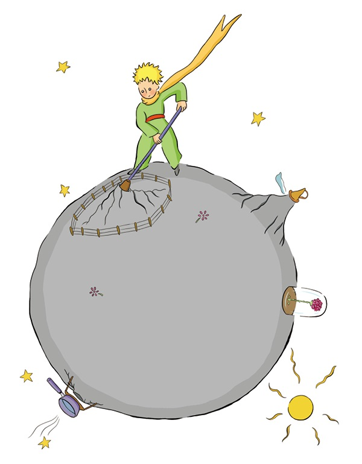
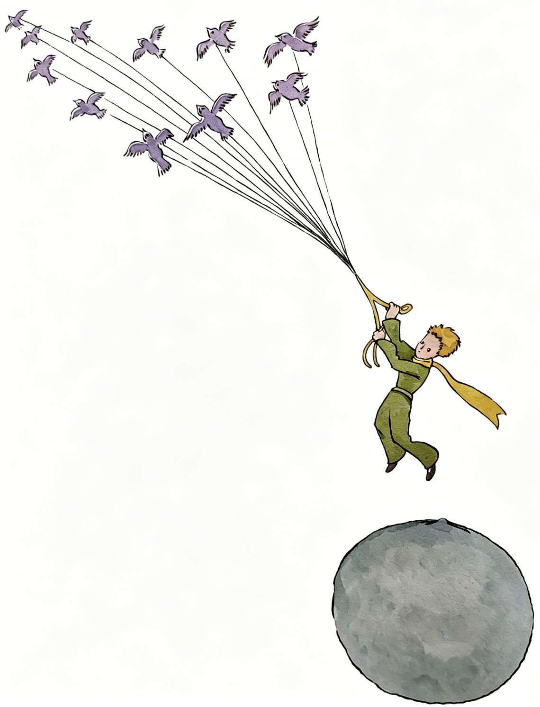
“我过去真傻，”她终于对他说了，“请你原谅我，设法使自己快乐些……”
– J’ai été sotte, lui dit-elle enfin. Je te demande pardon. Tâche d’être heureux.
“I’ve been silly,” she told him at last. “I ask your forgiveness. Try to be happy.”
她并没有责备他，这让他感到惊讶。他手里拿着那个玻璃罩，愣愣地站在那儿，花儿的一番温存反使他茫然了。
Il fut surpris par l’absence de reproches. Il restait là tout déconcerté, le globe en l’air. Il ne comprenait pas cette douceur calme.
He was surprised that there were no reproaches. He stood there, quite bewildered, holding the glass bell in midair. He failed to understand this calm sweetness.
“我当然爱着你！”花儿对他说，“但一直没有让你知道。那是我的错。但这并不重要，而你，似乎跟我一样笨。设法快乐些吧！把玻璃罩扔掉，我再也不需要它了。”
– Mais oui, je t’aime, lui dit la fleur. Tu n’en as rien su, par ma faute. Cela n’a aucune importance. Mais tu as été aussi sot que moi. Tâche d’être heureux… Laisse ce globe tranquille. Je n’en veux plus.
“Of course I love you,” the flower told him. “It was my fault you never knew. It doesn’t matter. But you were just as silly as I was. Try to be happy… Put that glass thing down. I don’t want it anymore.”
“可是风……”
– Mais le vent…
“But the wind…”
“寒冷对于我并不真的那么糟……我是一朵花，夜晚的凉风对我有好处。”
– Je ne suis pas si enrhumée que ça… L’air frais de la nuit me fera du bien. Je suis une fleur.
“My cold isn’t that bad…” The night air will do me good. I’m a flower.”
“可是那些动物……”
– Mais les bêtes…
“But the animals…”
“唉，要是我想跟蝴蝶交朋友的话，总得忍受两三条毛毛虫吧！而那些蝴蝶看起来多漂亮。况且，除了蝴蝶和毛毛虫之外，还会有谁来看望我呢？你就要走向远方了……至于那些大动物——我才不怕它们呢！看，我有我的爪子。”
– Il faut bien que je supporte deux ou trois chenilles si je veux connaître les papillons. Il paraît que c’est tellement beau. Sinon qui me rendra visite ? Tu seras loin, toi. Quant aux grosses bêtes, je ne crains rien. J’ai mes griffes.
“I need to put up with two or three caterpillars if I want to get to know the butterflies. Apparently they’re very beautiful. Otherwise who will visit me? You’ll be far away. As for the big animals, I’m not afraid of them. I have my own claws.”
她非常天真地展示自己身上的那四个刺，又说：
Et elle montrait naïvement ses quatre épines. Puis elle ajouta :
And she naively showed her four thorns. Then she added,
“别这样迟疑啦！你都已经下了决心了，现在就走吧！”
– Ne traîne pas comme ça, c’est agaçant. Tu as décidé de partir. Va-t’en.
“Don’t hang around like this; it’s irritating. You made up your mind to leave.
因为她不愿让小王子看到自己哭泣，她毕竟是朵如此骄傲的花呀……
Car elle ne voulait pas qu’il la vît pleurer. C’était une fleur tellement orgueilleuse…
Now go.” For she didn’t want him to see her crying. She was such a proud flower…
10 孤独的国王
他发现小行星325、326、327、328、329和330跟自己的星球相邻，便开始一一拜访它们，好让自己长点见识。
Il se trouvait dans la région des astéroïdes 325, 326, 327, 328, 329 et 330. Il commença donc par les visiter pour y chercher une occupation et pour s’instruire.
HE HAPPENED TO BE in the vicinity of Asteroids 325, 326, 327, 328, 329, and 330. So he began by visiting them, to keep himself busy and to learn something.
在第一个星球上住着一位国王。他身穿紫貂王袍，坐在线条明快、装潢华丽的宝座上。
La première était habitée par un roi. Le roi siégeait, habillé de pourpre et d’hermine, sur un trône très simple et cependant majestueux.
The first one was inhabited by a king. Wearing purple and ermine, he was sitting on a simple yet majestic throne.
“噢，有个子民来了！”他看到了小王子便嚷嚷起来。
– Ah ! Voilà un sujet, s’écria le roi quand il aperçut le petit prince.
“Ah! Here’s a subject!” the king exclaimed when he caught sight of the little prince.
小王子心里想：
Et le petit prince se demanda :
And the little prince wondered,
“他从没见过我，又怎么会知道我的呢！”
« Comment peut-il me reconnaître puisqu’il ne m’a encore jamais vu ! »
“How can he know who I am if he’s never seen me before?”
他不了解在每个国王的心目中，世界都很单纯，他们会把任何人都看做是自己的子民。
Il ne savait pas que, pour les rois, le monde est très simplifié. Tous les hommes sont des sujets.
He didn’t realize that for kings, the world is extremely simplified: All men are subjects.
“靠近点，让我好好看看你，”国王说，他为终于成为了某人的国王感到非常自豪。
– Approche-toi que je te voie mieux, lui dit le roi qui était tout fier d’être roi pour quelqu’un.
“Approach the throne so I can get a better look at you,” said the king, very proud of being a king for someone at last.
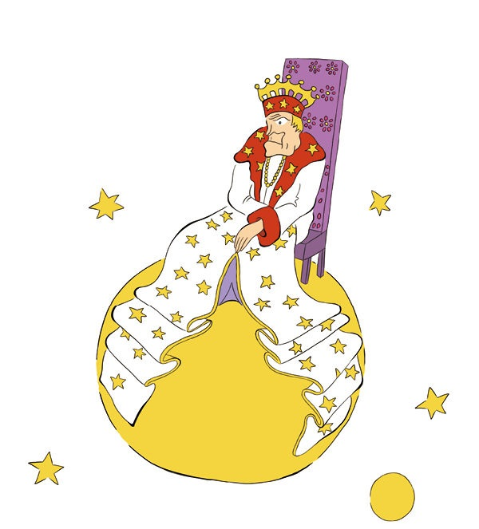
小王子往四下看了看，想找个地方坐下来。可是整个星球都被国王那件华丽的貂袍占满了。因此他只能直挺挺地站在那里。但他实在太疲倦了，就忍不住打了个哈欠。
Le petit prince chercha des yeux où s’asseoir, mais la planète était toute encombrée par le magnifique manteau d’hermine. Il resta donc debout, et, comme il était fatigué, il bâilla.
The little prince looked around for a place to sit down, but the planet was covered by the magnificent ermine cloak. So he remained standing, and since he was tired, he yawned.
“当着国王的面大打哈欠可不成体统，”国王对他说道，“不许这样！”
– Il est contraire à l’étiquette de bâiller en présence d’un roi, lui dit le monarque. Je te l’interdis.
“It is a violation of etiquette to yawn in a king’s presence,” the monarch told him. “I forbid you to do so”
“实在没有办法，我已经忍不住了。”小王子显露窘态，“我长途跋涉，到现在还没有睡呢……”
– Je ne peux pas m’en empêcher, répondit le petit prince tout confus. J’ai fait un long voyage et je n’ai pas dormi…
“I can’t help it,” answered the little prince, quite embarrassed. “I’ve made a long journey, and I haven’t had any sleep…”
“好！那么，”国王说道，“我命令你打哈欠。我已经有好多年没见过人打哈欠了，这事儿在我眼中也挺希罕。快，再给我打哈欠！这是旨意。”
– Alors, lui dit le roi, je t’ordonne de bâiller. Je n’ai vu personne bâiller depuis des années. Les bâillements sont pour moi des curiosités. Allons ! bâille encore. C’est un ordre.
“Then I command you to yawn,” said the king. “I haven’t seen anyone yawn for years. For me, yawns are a curiosity. Come on, yawn again! It is an order.”
“这太可怕了……我现在没……没法再打了……”小王子心慌意乱，说话都结结巴巴。
– Ça m’intimide… je ne peux plus… fit le petit prince tout rougissant.
“That intimidates me…I can’t do it now,” said the little prince, blushing deeply.
“嗯！嗯！”国王又说了，“那么，我就命令你一会儿打哈欠，一会儿……”
– Hum ! Hum ! répondit le roi. Alors je… je t’ordonne tantôt de bâiller et tantôt de…
“Well, well!” the king replied. “Then I…” I command you to yawn sometimes and sometimes to…”
他也性急起来，口沫都飞了出来。
Il bredouillait un peu et paraissait vexé.
He was sputtering a little, and seemed annoyed.
作为一国之主，别人必须尊重他的权威。他不能忍受抗旨，他是这里绝对的统治者。但他同时也是老好人，所以，他下的旨意也都相当合理。
Car le roi tenait essentiellement à ce que son autorité fût respectée. Il ne tolérait pas la désobéissance. C’était un monarque absolu. Mais, comme il était très bon, il donnait des ordres raisonnables.
For the king insisted that his authority be universally respected. He would tolerate no disobedience, being an absolute monarch. But since he was a kindly man, all his commands were reasonable.
“要是我命令一位将军，”他举例说，“变成海鸟，而那名将军却不肯服从，那么，错的是我而不是他。”
« Si j’ordonnais, disait-il couramment, si j’ordonnais à un général de se changer en oiseau de mer, et si le général n’obéissait pas, ce ne serait pas la faute du général. Ce serait ma faute. »
“If I were to command,” he would often say, “if I were to command a general to turn into a seagull, and if the general did not obey, that would not be the general’s fault. It would be mine.”
“我可以坐下来吗？”小王子怯生生地要求道。
– Puis-je m’asseoir ? s’enquit timidement le petit prince.
“May I sit down?” the little prince timidly inquired.
“好，我命令你坐下。”国王回答，仪态不凡地把自己的貂袍打了几个褶。
– Je t’ordonne de t’asseoir, lui répondit le roi, qui ramena majestueusement un pan de son manteau d’hermine.
“I command you to sit down,” the king replied, majestically gathering up a fold of his ermine robe.
此刻，小王子心中充满了疑惑：这么小的一个星球，他能统治些什么呢？
Mais le petit prince s’étonnait. La planète était minuscule. Sur quoi le roi pouvait-il bien régner ?
But the little prince was wondering. The planet was tiny. Over what could the king really reign?
“陛下，”小王子开口了，“请容许我提个问题……”
– Sire, lui dit-il… je vous demande pardon de vous interroger…
“Sire…” he ventured, “excuse me for asking…”
“好，我命令你提问。”国王立即郑重宣布。
– Je t’ordonne de m’interroger, se hâta de dire le roi.
“I command you to ask,” the king hastened to say.
“陛下……您统治些什么呢？”
– Sire… sur quoi régnez-vous ?
“Sire…” over what do you reign?”
“一切！”回答简洁有力。
– Sur tout, répondit le roi, avec une grande simplicité.
“Over everything,” the king answered, with great simplicity.
“一切？”
– Sur tout ?
“Over everything?”
国王指指自己的星球，又指指其他所有的星星。
Le roi d’un geste discret désigna sa planète, les autres planètes et les étoiles.
With a discreet gesture the king pointed to his planet, to the other planets, and to the stars.
“全部？”小王子问。
– Sur tout ça ? dit le petit prince.
“Over all that?” asked the little prince.
“全部！”国王回答。
– Sur tout ça… répondit le roi.
“Over all that…” the king answered.
因为他的统治权不仅绝对，而且全面，包括整个宇宙。
Car non seulement c’était un monarque absolu mais c’était un monarque universel.
For not only was he an absolute monarch, but a universal monarch as well.
“那些星星都服从您吗？”
– Et les étoiles vous obéissent ?
“And do the stars obey you?”
“当然，”国王说，“毫无疑问，我不允许任何人抗旨。”
– Bien sûr, lui dit le roi. Elles obéissent aussitôt. Je ne tolère pas l’indiscipline.
“Of course,” the king replied. “They obey immediately. I tolerate no insubordination.”
小王子对这种权力非常惊讶。要是他也拥有这样的权力，那他就可以好好地看看夕阳了。不是一天四十四次，而是七十二次、一百次，甚至两百次，连坐椅都不用挪一挪。想到被自己遗弃的那颗小星球，他忽然伤感起来。于是他鼓足勇气想向国王讨个人情。
Un tel pouvoir émerveilla le petit prince. S’il l’avait détenu lui-même, il aurait pu assister, non pas à quarante-quatre, mais à soixante-douze, ou même à cent, ou même à deux cents couchers de soleil dans la même journée, sans avoir jamais à tirer sa chaise ! Et comme il se sentait un peu triste à cause du souvenir de sa petite planète abandonnée, il s’enhardit à solliciter une grâce du roi :
Such power amazed the little prince. If he had wielded it himself, he could have watched not forty-four but seventy-two, or even a hundred, even two hundred sunsets on the same day without ever having to move his chair! And since he was feeling rather sad on account of remembering his own little planet, which he had forsaken, he ventured to ask a favor of the king:
“我真想看看夕阳……求您下旨意……命令太阳下山吧……”
– Je voudrais voir un coucher de soleil… Faites-moi plaisir… Ordonnez au soleil de se coucher…
“I’d like to see a sunset… Do me a favor, your majesty… Command the sun to set…”
“要是我下旨，命令某个将军像蝴蝶一样在花间飞来飞去，或写一部悲剧，或变一只海鸟，而将军却不愿遵旨执行命令时，谁错了？”国王问，“是将军，还是我？”
– Si j’ordonnais à un général de voler d’une fleur à l’autre à la façon d’un papillon, ou d’écrire une tragédie, ou de se changer en oiseau de mer, et si le général n’exécutait pas l’ordre reçu, qui, de lui ou de moi, serait dans son tort ?
“If I commanded a general to fly from one flower to the next like a butterfly, or to write a tragedy, or to turn into a seagull, and if the general did not carry out my command, which of us would be in the wrong, the general or me?”
“是您！”小王子断然回答。
– Ce serait vous, dit fermement le petit prince.
“You would be,” said the little prince, quite firmly.
“没错，要求别人做什么，必须先考虑这个人能否做到。”国王又接着说，“接受权威，首先要合理才行。要是你要人民去跳海，他们就会起来革命。我所以有权要求他们服从，那是由于我的命令合理。”
– Exact. Il faut exiger de chacun ce que chacun peut donner, reprit le roi. L’autorité repose d’abord sur la raison. Si tu ordonnes à ton peuple d’aller se jeter à la mer, il fera la révolution. J’ai le droit d’exiger l’obéissance parce que mes ordres sont raisonnables.
“Exactly. One must command from each what each can perform,” the king went on. “Authority is based first of all upon reason. If you command your subjects to jump in the ocean, there will be a revolution. I am entitled to command obedience because my orders are reasonable.”
“那么，我的夕阳呢？”小王子提醒国王。他是一旦提出问题就不会轻易放弃的人。
– Alors mon coucher de soleil ? rappela le petit prince qui jamais n’oubliait une question une fois qu’il l’avait posée.
“Then my sunset?” insisted the little prince, who never let go of a question once he had asked it.
“你看得到落日，我也会下旨意。不过，照我的行政技巧，这必须等到一个相应的时刻。”
– Ton coucher de soleil, tu l’auras. Je l’exigerai. Mais j’attendrai, dans ma science du gouvernement, que les conditions soient favorables.
“You shall have your sunset. I shall command it. But I shall wait, according to my science of government, until conditions are favorable.”
“什么时刻？”小王子抓住不放。
– Quand ça sera-t-il ? s’informa le petit prince.
“And when will that be?” inquired the little prince.
“嗯，”国王先是捧起一本又厚又重的大历书仔细地研究了一番，然后才说，“嗯，大约就在……傍晚七点四十分左右吧，到时候你会看到我的子民有多听话了。”
– Hem ! hem ! lui répondit le roi, qui consulta d’abord un gros calendrier, hem ! hem ! ce sera, vers… vers… ce sera ce soir vers sept heures quarante ! Et tu verras comme je suis bien obéi.
“Well, well!” replied the king, first consulting a large calendar. “Well, well! That will be around…around… that will be tonight around seven-forty! And you’ll see how well I am obeyed.”
小王子又开始打哈欠了。他为看不到落日而懊恼，还觉得有点无聊起来。
Le petit prince bâilla. Il regrettait son coucher de soleil manqué. Et puis il s’ennuyait déjà un peu :
The little prince yawned. He was regretting his lost sunset. And besides, he was already growing a little bored.
“我在这儿已无事可做，”他对国王说，“所以，我想再次上路了。”
– Je n’ai plus rien à faire ici, dit-il au roi. Je vais repartir !
“I have nothing further to do here,” he told the king. “I’m going to be on my way!”
“别走！”好不容易来了个子民，国王心中充满自豪，又说，“别走，我让你当部长。”
– Ne pars pas, répondit le roi qui était si fier d’avoir un sujet. Ne pars pas, je te fais ministre !
“Do not leave!” answered the king, who was so proud of having a subject. “Do not leave; I shall make you my minister!”
“什么部长？”
– Ministre de quoi ?
“A minister of what?”
“司……司法部长！”
– De… de la justice !
“Of… of justice.”
“但这儿无人可审呀！”
– Mais il n’y a personne à juger !
“But there’s no one here to judge!”
“不能这么说！”国王对他说，“我还没有视察过整个王国。我已上了年纪，这儿连停马车的地方也没有，而走路又实在太累。”
– On ne sait pas, lui dit le roi. Je n’ai pas fait encore le tour de mon royaume. Je suis très vieux, je n’ai pas de place pour un carrosse, et ça me fatigue de marcher.
“You never know,” the king told him. “I have not yet explored the whole of my realm. I am very old, I have no room for a carriage, and it wearies me to walk.”
“哦，但我已经都看过了。”小王子回头看看星球的另一边，那边和这边完全一样，根本没有一个人。
– Oh ! Mais j’ai déjà vu, dit le petit prince qui se pencha pour jeter encore un coup d’œil sur l’autre côté de la planète. Il n’y a personne là-bas non plus…
“Oh, but I’ve already seen for myself,” said the little prince, leaning forward to glance one more time at the other side of the planet. “There’s no one over there, either...”
“那么，你可以自己审判自己。”国王回答道，“那可是世界上最难做到的事。审判自己要比审判别人难得多。要是你自我审判成功的话，那你称得上是真正的智者了！”
– Tu te jugeras donc toi-même, lui répondit le roi. C’est le plus difficile. Il est bien plus difficile de se juger soi-même que de juger autrui. Si tu réussis à bien te juger, c’est que tu es un véritable sage.
“Then you shall pass judgment on yourself,” the king answered. “That is the hardest thing of all. It is much harder to judge yourself than to judge others. If you succeed in judging yourself, it’s because you are truly a wise man.”
“对！”小王子说，“但我到哪里都可以审判自己呀！这就未必非留在这里啦！”
– Moi, dit le petit prince, je puis me juger moi-même n’importe où. Je n’ai pas besoin d’habiter ici.
“But I can judge myself anywhere,” said the little prince. “I don’t need to live here.”
“嗯，”国王说，“我完全有理由可以确定，在这儿的某个角落，还住着一只老耗子，我在晚上听到过它的声音。你可以审判这只老耗子，随时都可以判它死刑。那么，它的生命也就靠你如何执法来延续了。但你得每次都饶恕它，因为它是我们惟一的子民。你不能跟它太计较了！”
– Hem ! Hem ! dit le roi, je crois bien que sur ma planète il y a quelque part un vieux rat. Je l’entends la nuit. Tu pourras juger ce vieux rat. Tu le condamneras à mort de temps en temps. Ainsi sa vie dépendra de ta justice. Mais tu le gracieras chaque fois pour l’économiser. Il n’y en a qu’un.
“Well, well!” the king said. “I have good reason to believe that there is an old rat living somewhere on my planet. I hear him at night. You could judge that old rat. From time to time you will condemn him to death. That way his life will depend on your justice. But you’ll pardon him each time for economy’s sake. There’s only one rat.”
“我，”小王子回答说，“我不喜欢判任何人死刑。再说，我想我现在就得出发了。”
– Moi, répondit le petit prince, je n’aime pas condamner à mort, et je crois bien que je m’en vais.
“I don’t like condemning anyone to death,” the little prince said, “and now I think I’ll be on my way.”
“不行！”国王说。
– Non, dit le roi.
“No,” said the king.
但小王子已经打算马上离开，再也无心为老国王担忧了。
Mais le petit prince, ayant achevé ses préparatifs, ne voulut point peiner le vieux monarque :
The little prince, having completed his preparations, had no desire to aggrieve the old monarch.
“要是陛下希望我能服从，那就得给我下一道合理的旨意。例如，你可以命令我在一分钟内离开，看来这比较可行……”
– Si Votre Majesté désirait être obéie ponctuellement, elle pourrait me donner un ordre raisonnable. Elle pourrait m’ordonner, par exemple, de partir avant une minute. Il me semble que les conditions sont favorables…
“If Your Majesty desires to be promptly obeyed, he should give me a reasonable command. He might command me, for instance, to leave before this minute is up. It seems to me that conditions are favorable…”
小王子见国王没有回答，稍稍犹豫了一下，然后叹了一口气，离去了。
Le roi n’ayant rien répondu, le petit prince hésita d’abord, puis, avec un soupir, prit le départ.
The king having made no answer, the little prince hesitated at first, and then, with a sigh, took his leave.
“我派你当我的大使！”国王急忙大声地在后面说。
– Je te fais mon ambassadeur, se hâta alors de crier le roi.
“I make you my ambassador,” the king hastily shouted after him.
他依旧威势十足。
Il avait un grand air d’autorité.
He had a great air of authority.
“这些大人们真是好怪呀！”小王子喃喃自语，重新出发了。
« Les grandes personnes sont bien étranges », se dit le petit prince, en lui-même, durant son voyage.
“Grown-ups are so strange,” the little prince said to himself as he went on his way.
11 虚荣的人
在第二个星球上住着一个自大狂。
La seconde planète était habitée par un vaniteux :
THE SECOND PLANET was inhabited by a very vain man.
“哦，有个崇拜者看我来啦！”他刚看到小王子朝这边走来，便老远就嚷嚷起来了。
– Ah ! Ah ! Voilà la visite d’un admirateur ! s’écria de loin le vaniteux dès qu’il aperçut le petit prince.
“Ah! A visit from an admirer!” he exclaimed when he caught sight of the little prince, still at some distance.
因为，自负的人总以为别人都把自己当偶像。
Car, pour les vaniteux, les autres hommes sont des admirateurs.
To vain men, other people are admirers.
“早上好！”小王子一边跟他打招呼，一边对他说，“你头上的帽子真滑稽。”
– Bonjour, dit le petit prince. Vous avez un drôle de chapeau.
“Hello,” said the little prince. “That’s a funny hat you’re wearing.”
“那是给人答礼用的。”自大狂回答说，“别人向我喝彩时，我就举帽致意。只可惜这条路从来没人走。”
– C’est pour saluer, lui répondit le vaniteux. C’est pour saluer quand on m’acclame. Malheureusement il ne passe jamais personne par ici.
“It’s for answering acclamations,” the very vain man replied. “Unfortunately, no one ever comes this way.”
“是吗？”小王子完全不理解自大狂说的是什么。
– Ah oui ? dit le petit prince qui ne comprit pas.
“Is that so?” said the little prince, who did not understand what the vain man was talking about.
“鼓掌，别停下来。”自大狂开始指挥他了。
– Frappe tes mains l’une contre l’autre, conseilla donc le vaniteux.
“Clap your hands,” directed the man.
小王子开始鼓起掌来，而自大狂则一本正经地举帽答礼。
Le petit prince frappa ses mains l’une contre l’autre. Le vaniteux salua modestement en soulevant son chapeau.
The little prince clapped his hands, and the vain man tipped his hat in modest acknowledgment.
“这比拜访国王要有意思多了。”小王子想。于是，他便一次又一次地不断鼓掌，而那个自大狂便一再举帽向他致意。
« Ça c’est plus amusant que la visite au roi », se dit en lui-même le petit prince. Et il recommença de frapper ses mains l’une contre l’autre. Le vaniteux recommença de saluer en soulevant son chapeau.
“This is more entertaining than the visit to the king,” the little prince said to himself. And he continued clapping. The very vain man continued tipping his hat in acknowledgment.
这样的情况持续了足足五分钟，小王子开始有点不耐烦了。
Après cinq minutes d’exercice le petit prince se fatigua de la monotonie du jeu :
After five minutes of this exercise, the little prince tired of the game’s monotony.
“怎样才能让你放下帽子呢？”小王子问。
– Et, pour que le chapeau tombe, demanda-t-il, que faut-il faire ?
“And what would make the hat fall off?” he asked.
但自大狂完全没有听到。对于自负的人来说，除了赞美声以外，是什么也听不到的。
Mais le vaniteux ne l’entendit pas. Les vaniteux n’entendent jamais que les louanges.
But the vain man did not hear him. Vain men never hear anything but praise.
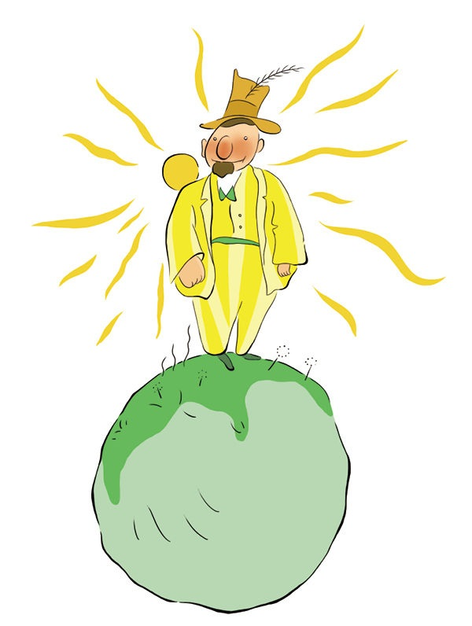
“你是真的非常崇拜我吗？”他问小王子。
– Est-ce que tu m’admires vraiment beaucoup ? demanda-t-il au petit prince.
“Do you really admire me a great deal?” he asked the little prince.
“崇拜？……什么叫崇拜？”
– Qu’est-ce que signifie admirer ?
“What does that mean 'admire'?”
“崇拜就是你认为我是这个星球上最英俊、最体面、最有钱和最聪明的人。”
– Admirer signifie reconnaître que je suis l’homme le plus beau, le mieux habillé, le plus riche et le plus intelligent de la planète.
“To admire means to acknowledge that I am the handsomest, the best-dressed, the richest, and the most intelligent man on the planet.”
“但你是这个星球上惟一的一个人呀！”
– Mais tu es seul sur ta planète !
“But you’re the only man on your planet!”
“你不是还照样要崇拜我吗？！”
– Fais-moi ce plaisir. Admire-moi quand même !
“Do me this favor. Admire me all the same.”
“我崇拜你，”小王子耸耸肩问，“可这有什么好让你那么高兴呢？”
– Je t’admire, dit le petit prince, en haussant un peu les épaules, mais en quoi cela peut-il bien t’intéresser ?
“I admire you,” said the little prince, with a little shrug of his shoulders, “but what is there about my admiration that interests you so much?”
小王子说完就走了。
Et le petit prince s’en fut.
And the little prince went on his way.
“这些大人确实很怪。”他一边自言自语，一边重新踏上自己的旅程。
« Les grandes personnes sont décidément bien bizarres », se dit-il simplement en lui-même durant son voyage.
“Grown-ups are certainly very strange,” he said to himself as he continued on his journey.
12 羞愧的酒鬼
接着一个星球上住的是个酒鬼。小王子的访问虽很短暂，却使他心情沮丧。
La planète suivante était habitée par un buveur. Cette visite fut très courte, mais elle plongea le petit prince dans une grande mélancolie :
The next planet was inhabited by a drunkard. This visit was a very brief one, but it plunged the little prince into a deep depression.
他看到有个人静静地坐在那里，面前有一大堆空酒瓶子，一旁还有许多没开过的瓶装酒。“你在这儿做什么呀？”
– Que fais-tu là ? dit-il au buveur, qu’il trouva installé en silence devant une collection de bouteilles vides et une collection de bouteilles pleines.
“What are you doing there?” he asked the drunkard, whom he found sunk in silence before a collection of empty bottles and a collection of full ones.
“我在喝酒啊！”酒鬼老老实实地回答。
– Je bois, répondit le buveur, d’un air lugubre.
“Drinking,” replied the drunkard, with a gloomy expression.
“干吗喝酒呢？”小王子追问他。
– Pourquoi bois-tu ? lui demanda le petit prince.
“Why are you drinking?” the little prince asked.
“酒能使我遗忘。”酒鬼回答说。
– Pour oublier, répondit le buveur.
“To forget,” replied the drunkard.
“遗忘什么？”小王子的心里已在为他难过。
– Pour oublier quoi ? s’enquit le petit prince qui déjà le plaignait.
“To forget what?” inquired the little prince, who was already feeling sorry for him.
“遗忘我的耻辱。”酒鬼神情惘然，低低地垂下了脑袋。
– Pour oublier que j’ai honte, avoua le buveur en baissant la tête.
“To forget that I’m ashamed,” confessed the drunkard, hanging his head.
“什么耻辱？”小王子抓住不放，心里想帮助他。
– Honte de quoi ? s’informa le petit prince qui désirait le secourir.
“What are you ashamed of?” inquired the little prince, who wanted to help.
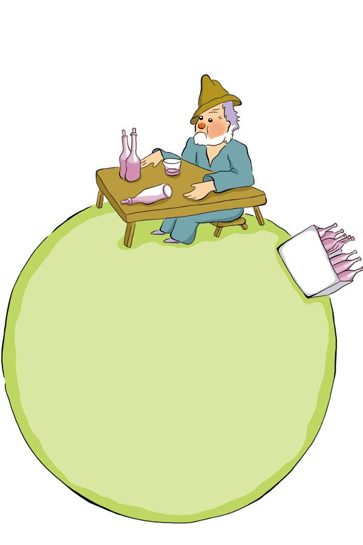
“喝酒的耻辱！”酒鬼说完就不再开口了。
– Honte de boire ! acheva le buveur qui s’enferma définitivement dans le silence.
“Of drinking!” concluded the drunkard, withdrawing into silence for good.
我们的小王子万般无奈，怅然走了。
Et le petit prince s’en fut, perplexe.
And the little prince went on his way, puzzled.
“唉，这些大人真是不可思议啊！”他自言自语，叹息着又踏上了旅途。
« Les grandes personnes sont décidément très très bizarres », se disait-il en lui-même durant le voyage.
“Grown-ups are certainly very, very strange,” he said to himself as he continued on his journey.
13 商人与星星
第四个星球是属于一位实业家的。他非常非常忙，小王子来到时，他甚至连头都没有时间抬一下。
La quatrième planète était celle du businessman. Cet homme était si occupé qu’il ne leva même pas la tête à l’arrivée du petit prince.
THE FOURTH PLANET belonged to a businessman. This person was so busy that he didn’t even raise his head when the little prince arrived.
“早上好！”我们的小王子在问候他，“你的烟熄了。”
– Bonjour, lui dit celui-ci. Votre cigarette est éteinte.
“Hello,” said the little prince. “Your cigarette’s gone out.”
“三加二等于五。五加七等于十二。十二加三等于十五。早上好！十五加七等于二十二。二十二加六等于二十八。唔，我没空再点火了。二十八加三等于三十一。这样一来就有五亿零一百六十二万二千七百三十一颗了！”
– Trois et deux font cinq. Cinq et sept douze. Douze et trois quinze. Bonjour. Quinze et sept vingt-deux. Vingt-deux et six vingt-huit. Pas le temps de la rallumer. Vingt-six et cinq trente et un. Ouf ! Ça fait donc cinq cent un millions six cent vingt-deux mille sept cent trente et un.
“Three and two make five. Five and seven, twelve. Twelve and three, fifteen. Hello. Fifteen and seven, twenty-two. Twenty-two and six, twenty-eight. No time to light it again. Twenty-six and five, thirty-one. Whew! That amounts to five-hundred-and-one million, six hundred-twenty-two thousand, seven hundred thirty-one.”
“五亿颗什么呀？”小王子问道。
– Cinq cents millions de quoi ?
“Five-hundred million what?”
“哟，你还在呀！五亿零一百……我无法中断……那么多事在等着我！我正在做重要的事。没时间跟你唆。二加五等于七……”
– Hein ? Tu es toujours là ? Cinq cent un millions de… je ne sais plus… J’ai tellement de travail ! Je suis sérieux, moi, je ne m’amuse pas à des balivernes ! Deux et cinq sept…
“Hmm? You’re still there? Five-hundred-and-one million… I don’t remember… I have so much work to do! I’m a serious man. I can’t be bothered with trifles! Two and five, seven…”
“五亿零一百万颗什么呀？”小王子又提出那个问题来了，他这辈子还从未轻易放弃过任何疑问呢。
– Cinq cent un millions de quoi ? répéta le petit prince qui jamais de sa vie, n’avait renoncé à une question, une fois qu’il l’avait posée.
“Five-hundred-and-one million what?” repeated the little prince, who had never in his life let go of a question once he had asked it.
实业家终于抬起了头。
Le businessman leva la tête :
The businessman raised his head.
“我在这个星体上已经住了五十四年了，只被打扰过三次。第一次是在二十年前，不知从哪儿掉下一只昏了头的鹅来。它那叫声造成回音四起，害得我加错了数目，吵死人了。第二次是在一年前，当时因为我运动量不够我根本没有时间到处逛，患了风湿病。第三次，唉，就是现在啦！我刚刚算到……五亿零一百万……”
– Depuis cinquante-quatre ans que j’habite cette planète-ci, je n’ai été dérangé que trois fois. La première fois ç’a été, il y a vingt-deux ans, par un hanneton qui était tombé Dieu sait d’où. Il répandait un bruit épouvantable, et j’ai fait quatre erreurs dans une addition. La seconde fois ç’a été, il y a onze ans, par une crise de rhumatisme. Je manque d’exercice. Je n’ai pas le temps de flâner. Je suis sérieux, moi. La troisième fois… la voici ! Je disais donc cinq cent un millions…
“For the fifty-four years I’ve inhabited this planet, I’ve been interrupted only three times. The first time was twenty-two years ago, when I was interrupted by a beetle that had fallen onto my desk from god knows where. It made a terrible noise, and I made four mistakes in my calculations. The second time was eleven years ago, when I was interrupted by a fit of rheumatism. I don’t get enough exercise. I haven’t time to take strolls. I’m a serious person. The third time… is right now! Where was I? Five hundred-and-one million…”
“五亿零一百万什么？”
– Millions de quoi ?
“Million what?”
实业家这下终于明白，他若不回答这个问题便休想有片刻安宁。
Le businessman comprit qu’il n’était point d’espoir de paix :
The businessman realized that he had no hope of being left in peace.
“五亿零一百万个小东西。”他补充说，“天上看得到的东西。”
– Millions de ces petites choses que l’on voit quelquefois dans le ciel.
“Oh, of those little things you sometimes see in the sky.”
“苍蝇吗？”
– Des mouches ?
“Flies?”
“不！是一种会发光的小东西。”
– Mais non, des petites choses qui brillent.
“No, those little shiny things.”
“蜜蜂吗？”
– Des abeilles ?
“Bees?”
“不是！不是！是一种金色的小东西，可以让懒人入梦的东西。我可在从事头等大事，没有时间做那样的梦。”
– Mais non. Des petites choses dorées qui font rêvasser les fainéants. Mais je suis sérieux, moi ! Je n’ai pas le temps de rêvasser.
“No, those little golden things that make lazy people daydream. Now, I’m a serious person. I have no time for daydreaming.” “Ah!
“啊，你指的是星星。”
– Ah ! des étoiles ?
You mean the stars?”
“没错，就是指星星。”
– C’est bien ça. Des étoiles.
“Yes, that’s it. Stars.”
“那么你数这五亿颗星星干什么呢？”
– Et que fais-tu de cinq cents millions d’étoiles ?
“And what do you do with five-hundred million stars?”
“五亿零一百六十二万二千七百三十一颗，事关重大，我必须讲究精确。”
– Cinq cent un millions six cent vingt-deux mille sept cent trente et un. Je suis sérieux, moi, je suis précis.
“Five-hundred-and-one million, six hundred twenty-two thousand, seven hundred thirty-one. I’m a serious person, and I’m accurate.”
“那么，你到底数它们来做什么呢？”
– Et que fais-tu de ces étoiles ?
“And what do you do with those stars?”
“我数它们做什么？”
– Ce que j’en fais ?
“What do I do with them?”
“是啊！做什么？”
– Oui.
“Yes.”
“没什么，是我拥有了它们。”
– Rien. Je les possède.
“Nothing. I own them.”
“你拥有这些星星？”
– Tu possèdes les étoiles ?
“You own the stars?”
“没错。”
– Oui.
“Yes.”
“可我见过一位国王，他……”
– Mais j’ai déjà vu un roi qui…
“But I’ve already seen a king who -”
“一个国王并不可能真正地拥有，他们只能统治统治，这完全不一样。”
– Les rois ne possèdent pas. Ils « règnent » sur. C’est très différent.
“Kings don’t own. They ‘reign’ over… It’s quite different.”
“那么你拥有它们又有什么用呢？”
– Et à quoi cela te sert-il de posséder les étoiles ?
“And what good does owning the stars do you?”
“这可以使我变得富有。”
– Ça me sert à être riche.
“It does me the good of being rich.”
“富有了又能做什么？”
– Et à quoi cela te sert-il d’être riche ?
“And what good does it do you to be rich?”
“富有了，只要有新的星球被发现，就可以出钱买下。”
– À acheter d’autres étoiles, si quelqu’un en trouve.
“It lets me buy other stars, if somebody discovers them.”
小王子心想，这个人跟那可怜的酒鬼倒有点儿相似。
« Celui-là, se dit en lui-même le petit prince, il raisonne un peu comme mon ivrogne. »
The little prince said to himself, “This man argues a little like my drunkard.”
但他还有更多的疑问。
Cependant il posa encore des questions :
Nevertheless he asked more questions.
“一个人怎么可能拥有那些星星呢？”
– Comment peut-on posséder les étoiles ?
“How can someone own the stars?”
“那么，它们到底该属于谁呢？”实业家焦躁地反问。
– À qui sont-elles ? riposta, grincheux, le businessman.
“To whom do they belong?” retorted the businessman grumpily.
“这我不清楚，该不属于任何人吧！”
– Je ne sais pas. À personne.
“I don’t know. To nobody.”
“所以嘛，它们就得属于我才是道理，因为我是第一个想到了这一点。”
– Alors elles sont à moi, car j’y ai pensé le premier.
“Then they belong to me, because I thought of it first.”
“有这样的必要吗？”
– Ça suffit ?
“And that’s all it takes?”
“我看有。当你发现了一颗不属于任何人的钻石时，它当然该属于你了。当你发现了一个无主的海岛时，它也该是你的。当你在别人的前面想到了一个新主意时，你就可以申请专利，从此它便属于你了。我的情况就是这样，由于我在别人还没有想要拥有它们之前，首先想到了，所以我该拥有这些星星。”
– Bien sûr. Quand tu trouves un diamant qui n’est à personne, il est à toi. Quand tu trouves une île qui n’est à personne, elle est à toi. Quand tu as une idée le premier, tu la fais breveter : elle est à toi. Et moi je possède les étoiles, puisque jamais personne avant moi n’a songé à les posséder.
“Of course. When you find a diamond that belongs to nobody in particular, then it’s yours. When you find an island that belongs to nobody in particular, it’s yours. When you’re the first person to have an idea, you patent it and it’s yours. Now I own the stars, since no one before me ever thought of owning them.”
“听起来话是不错，”小王子说，“但你拥有了它们之后，又能怎么样呢？”
– Ça c’est vrai, dit le petit prince. Et qu’en fais-tu ?
“That’s true enough,” the little prince said. “And what do you do with them?”
“我会管理它们，反复核查它们。”实业家回答说，“当然事情并不容易，好在我对此极有兴趣。”
– Je les gère. Je les compte et je les recompte, dit le businessman. C’est difficile. Mais je suis un homme sérieux !
“I manage them. I count them and then count them again,” the businessman said. “It’s difficult work. But I’m a serious person!”
小王子还是不那么满意。
Le petit prince n’était pas satisfait encore.
The little prince was still not satisfied.
“要是我拥有一条丝巾，”他说，“我可以把它系在我的脖子上。要是我拥有一朵鲜花，我也可以把它带在自己的身边。可你无法把那么多星星从天上摘下来……”
– Moi, si je possède un foulard, je puis le mettre autour de mon cou et l’emporter. Moi, si je possède une fleur, je puis cueillir ma fleur et l’emporter. Mais tu ne peux pas cueillir les étoiles !
“If I own a scarf, I can tie it around my neck and take it away. If I own a flower, I can pick it and take it away. But you can’t pick the stars!”
“是呀！那当然不行，但我可以把它们存放在银行里。”
– Non, mais je puis les placer en banque.
“No, but I can put them in the bank.”
“什么意思？”
– Qu’est-ce que ça veut dire ?
“What does that mean?”
“那就是把它们的数字统计在一张纸片上，再把这张纸片放在柜子里锁起来。”
– Ça veut dire que j’écris sur un petit papier le nombre de mes étoiles. Et puis j’enferme à clef ce papier-là dans un tiroir.
“That means that I write the number of my stars on a slip of paper. And then I lock that slip of paper in a drawer.”
“就这样？”
– Et c’est tout ?
“And that’s all?”
“是啊！”实业家回答说。
– Ça suffit !
“That’s enough!”
“真有意思！”小王子想着说，“还很有诗意。不过，这并不是什么了不起的事呀！”
« C’est amusant, pensa le petit prince. C’est assez poétique. Mais ce n’est pas très sérieux. »
“That’s amusing,” thought the little prince. “And even poetic. But not very serious.”
小王子心目中重要的事和大人们想的完全不一样！
Le petit prince avait sur les choses sérieuses des idées très différentes des idées des grandes personnes.
The little prince had very different ideas about serious things from those of the grown-ups.
“我自己就拥有一朵花。”他告诉了实业家，“我天天给她浇水。我还有三座火山，每星期我都要把它们清理一次（连其中一座死火山我也要清理好，因为谁也不知道它以后会怎么样）。我的火山多少还有点用处，我的花也一样，所以我才拥有它们。而那些星星对你有什么用？”
– Moi, dit-il encore, je possède une fleur que j’arrose tous les jours. Je possède trois volcans que je ramone toutes les semaines. Car je ramone aussi celui qui est éteint. On ne sait jamais. C’est utile à mes volcans, et c’est utile à ma fleur, que je les possède. Mais tu n’es pas utile aux étoiles…
“I own a flower myself,” he continued, “which I water every day. I own three volcanoes, which I rake out every week. I even rake out the extinct one. You never know. So it’s of some use to my volcanoes, and it’s useful to my flower, that I own them. But you’re not useful to the stars.”
实业家张口结舌，不知怎么回答，小王子就径自走了。
Le businessman ouvrit la bouche mais ne trouva rien à répondre, et le petit prince s’en fut.
The businessman opened his mouth but found nothing to say in reply, and the little prince went on his way.
“哎，大人们真的都这么怪！”小王子实在不明白。
« Les grandes personnes sont décidément tout à fait extraordinaires », se disait-il simplement en lui-même durant le voyage.
“Grown-ups are certainly quite extraordinary,” was all he said to himself as he continued on his journey.
14 忠实的点灯人
第五个星球真特别，那是小王子一路走来所看到的最小的一颗。它上面只容得了一盏路灯和一名点灯人。小王子实在想不通，在空中的一角，一个既没屋子也没人的小小的星球上，要一盏路灯和一名点灯人做什么？但他仍然对自己说：
La cinquième planète était très curieuse. C’était la plus petite de toutes. Il y avait là juste assez de place pour loger un réverbère et un allumeur de réverbères. Le petit prince ne parvenait pas à s’expliquer à quoi pouvaient servir, quelque part dans le ciel, sur une planète sans maison, ni population, un réverbère et un allumeur de réverbères. Cependant il se dit en lui-même :
THE FIFTH PLANET was very strange. It was the smallest of all. There was just enough room for a street lamp and a lamplighter. The little prince couldn’t quite understand what use a street lamp and a lamplighter could be up there in the sky, on a planet without any people and not a single house. However, he said to himself:
“这人也许有点荒唐，但总比那个国王、酒鬼、自大狂和实业家好多了。起码，他的工作还算有意义。每当他点燃那盏路灯时，仿佛他就为一颗星星或一朵花儿带来了生命；而当他熄灭灯火时，似乎也就让花儿和星星睡去。这难道不是个美丽的行当吗？这个行当也同样会因美而变得有用了。”
« Peut-être bien que cet homme est absurde. Cependant il est moins absurde que le roi, que le vaniteux, que le businessman et que le buveur. Au moins son travail a-t-il un sens. Quand il allume son réverbère, c’est comme s’il faisait naître une étoile de plus, ou une fleur. Quand il éteint son réverbère, ça endort la fleur ou l’étoile. C’est une occupation très jolie. C’est véritablement utile puisque c’est joli. »
"It’s quite possible that this man is absurd. But he’s less absurd than the king, the very vain man, the businessman, and the drunkard. At least his work has some meaning. When he lights his lamp, it’s as if he’s bringing one more star to life, or one more flower. When he puts out his lamp, that sends the flower or the star to sleep. Which is a fine occupation. And therefore truly useful.”
在到达那个星球时，小王子满怀敬意地向那位点灯人致意。
Lorsqu’il aborda la planète il salua respectueusement l’allumeur :
When the little prince reached this planet, he greeted the lamplighter respectfully.
“早上好！您干吗要熄灭街灯呢？”
– Bonjour. Pourquoi viens-tu d’éteindre ton réverbère ?
“Good morning. Why have you just put out your lamp?”
“那是规定。”点灯人回答，“早上好！”
– C’est la consigne, répondit l’allumeur. Bonjour.
“Orders,” the lamplighter answered. “Good morning.”
“什么规定？”
– Qu’est-ce que la consigne ?
“What orders are those?”
“规定是我得熄灭这盏灯。晚上好！”
– C’est d’éteindre mon réverbère. Bonsoir.
“To put out my street lamp. Good evening.”
然后，他又把街灯点上。
Et il le ralluma.
And he lit his lamp again.
“刚才你又为什么再把灯点上呢？”
– Mais pourquoi viens-tu de le rallumer ?
“But why have you just lit your lamp again?”
“这是规定呀！”点灯人回答说。
– C’est la consigne, répondit l’allumeur.
“Orders.”
“我可不懂。”小王子说。
– Je ne comprends pas, dit le petit prince.
“I don’t understand,” said the little prince.
“没有什么难懂的，”点灯人说，“规定就是规定。早上好！”
– Il n’y a rien à comprendre, dit l’allumeur. La consigne c’est la consigne. Bonjour.
“There’s nothing to understand,” said the lamplighter. “Orders are orders. Good morning.”
随后他又熄了灯。
Et il éteignit son réverbère.
And he put out his lamp.
再拿出一条红方格的手帕擦一擦前额。
Puis il s’épongea le front avec un mouchoir à carreaux rouges.
Then he wiped his forehead with a red-checked handkerchief.
“我从事这一行当有时真让人感到害怕！先前是很合理的：早上熄灯，傍晚点灯；白天别的时间我就可以轻松一下，晚上也可以睡觉。”
– Je fais là un métier terrible. C’était raisonnable autrefois. J’éteignais le matin et j’allumais le soir. J’avais le reste du jour pour me reposer, et le reste de la nuit pour dormir…
“It’s a terrible job I have. It used to be reasonable enough. I put the lamp out mornings and lit it after dark. I had the rest of the day for my own affairs, and the rest of the night for sleeping.”
“但那之后这个规定变了吗？”
– Et, depuis cette époque, la consigne a changé ?
“And since then orders have changed?”
“规定没变，”点灯人说，“那才叫悲剧！这个星球一年比一年转得快，但规定却是老样子，依旧没动！”
– La consigne n’a pas changé, dit l’allumeur. C’est bien là le drame ! La planète d’année en année a tourné de plus en plus vite, et la consigne n’a pas changé !
“Orders haven’t changed,” the lamplighter said. “That’s just the trouble! Year by year the planet is turning faster and faster, and orders haven’t changed!”
“这是什么意思？”
– Alors ? dit le petit prince.
“Which means?”
“这意味着这个星球每分钟就转一圈，我连想喘一口气都做不到。每一分钟我就得把灯点亮再熄灭。”
– Alors maintenant qu’elle fait un tour par minute, je n’ai plus une seconde de repos. J’allume et j’éteins une fois par minute !
“Which means that now that the planet revolves once a minute, I don’t have an instant’s rest. I light my lamp and turn it out once every minute!”
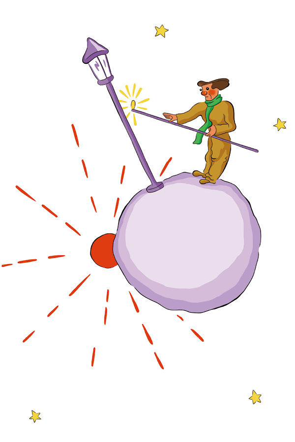
“这才好玩呢！在你住的地方，一分钟就算一天。”
– Ça c’est drôle ! Les jours chez toi durent une minute !
“That’s funny! Your days here are one minute long!”
“一点儿也不好玩。”点灯人说，“我们刚刚说话，一会儿就已经是一个月了。”
– Ce n’est pas drôle du tout, dit l’allumeur. Ça fait déjà un mois que nous parlons ensemble.
“It’s not funny at all,” the lamplighter said. “You and I have already been talking to each other for a month.”
“一个月？”
– Un mois ?
“A month?”
“没错，一个月。三十分钟，就等于三十天了。晚上好！”
– Oui. Trente minutes. Trente jours ! Bonsoir.
“Yes. Thirty minutes. Thirty days! Good evening.”
他再次点起了灯。
Et il ralluma son réverbère.
And he lit his lamp.
小王子看着他，觉得自己挺喜欢这个忠于职守的点灯人。他想起以前要欣赏落日时，只需挪动坐椅就行。
Le petit prince le regarda et il aima cet allumeur qui était tellement fidèle à la consigne. Il se souvint des couchers de soleil que lui-même allait autrefois chercher, en tirant sa chaise.
The little prince watched him, growing fonder and fonder of this lamplighter who was so faithful to orders. He remembered certain sunsets that he himself used to follow in other days, merely by shifting his chair.
现在，他想帮帮这位朋友。
Il voulut aider son ami :
He wanted to help his friend.
“嗨，”他说，“我愿意教你一个办法，可以让你想休息就休息。”
– Tu sais… je connais un moyen de te reposer quand tu voudras…
“You know… I can show you a way to take a rest whenever you want to.”
“我一直盼着能好好休息一下。”点灯人说。是呀，忠于职守的人难道就不想见缝插针偷一会儿懒吗！
– Je veux toujours, dit l’allumeur. Car on peut être, à la fois, fidèle et paresseux.
“I always want to rest,” the lamplighter said, for it is possible to be faithful and lazy at the same time.
小王子继续说道：
Le petit prince poursuivit :
The little prince continued,
“你的星球也够小的了，只要连跨三步就可以绕它一圈。要是你希望永远头顶阳光，那只需缓慢地朝前行走。只要你想休息，你就开始走路——那样，你要白天有多长，它就能有多长。”
– Ta planète est tellement petite que tu en fais le tour en trois enjambées. Tu n’as qu’à marcher assez lentement pour rester toujours au soleil. Quand tu voudras te reposer tu marcheras… et le jour durera aussi longtemps que tu voudras.
“Your planet is so small that you can walk around it in three strides. All you have to do is walk more slowly, and you’ll always be in the sun. When you want to take a rest just walk… and the day will last as long as you want it to.”
“这对我又有什么好处呢？”点灯人说，“我最渴望的是睡眠。”
– Ça ne m’avance pas à grand’chose, dit l’allumeur. Ce que j’aime dans la vie, c’est dormir.
“What good does that do me?” the lamplighter said, “when the one thing in life I want to do is sleep?”
“那你可就太倒霉了。”小王子说。
– Ce n’est pas de chance, dit le petit prince.
“Then you’re out of luck,” said the little prince.
“是呀，我真的很倒霉。”点灯人说，“早上好！”
– Ce n’est pas de chance, dit l’allumeur. Bonjour.
“I am,” said the lamplighter. “Good morning.”
随后他又把灯给熄了。
Et il éteignit son réverbère.
And he put out his lamp.
“那个人，”小王子又踏上新的旅程，他一路想着，“说不定会被别的那些人如国王、酒鬼、自大狂、实业家等瞧不起。但不管怎么说，他是所有这些人当中惟一不让我感到荒谬的。这也许是由于他不是只顾自己，同时还能想到别的人和事的缘故吧！”
« Celui-là, se dit le petit prince, tandis qu’il poursuivait plus loin son voyage, celui-là serait méprisé par tous les autres, par le roi, par le vaniteux, par le buveur, par le businessman. Cependant c’est le seul qui ne me paraisse pas ridicule. C’est, peut-être, parce qu’il s’occupe d’autre chose que de soi-même. »
“Now that man,” the little prince said to himself as he continued on his journey, “that man would be despised by all the others, by the king, by the very vain man, by the drunkard, by the businessman. Yet he’s the only one who doesn’t strike me as ridiculous. Perhaps it’s because he’s thinking of something beside himself.”
他伤感地叹着气，对自己说：
Il eut un soupir de regret et se dit encore :
He heaved a sigh of regret and said to himself, again,
“这是我所遇到的这些人之中惟一值得与之交往的一个朋友。只可惜他所在的星球实在太小，没法同时容纳两个人……”
« Celui-là est le seul dont j’eusse pu faire mon ami. Mais sa planète est vraiment trop petite. Il n’y a pas de place pour deux… »
“That man is the only one I might have made my friend. But his planet is really too small. There’s not room for two…”
而他所怯于承认的是：离开这个星球，比割舍别的什么都更让他难过，那是因为上苍对这里情有独钟：每二十四小时可以在此看到一千四百多个落日。
Ce que le petit prince n’osait pas s’avouer, c’est qu’il regrettait cette planète bénie à cause, surtout, des mille quatre cent quarante couchers de soleil par vingt-quatre heures !
What the little prince dared not admit was that he most regretted leaving that planet because it was blessed with one thousand, four hundred forty sunsets every twenty-four hours!
15 地理学家
第六个星球比前面那个要大上十倍，上面住着一位撰写巨著的老绅士。
La sixième planète était une planète dix fois plus vaste. Elle était habitée par un vieux Monsieur qui écrivait d’énormes livres.
THE SIXTH PLANET was ten times bigger than the last. It was inhabited by an old gentleman who wrote enormous books.
“啊哈，有个探险家来了。”他远远看到小王子一步步走近，便嚷嚷开了。
– Tiens ! voilà un explorateur ! s’écria-t-il, quand il aperçut le petit prince.
“Ah, here comes an explorer,” he exclaimed when he caught sight of the little prince, who was feeling a little winded and sat down on, the desk.
小王子这次长途跋涉，走了不少路。他走到桌边坐了下来，稍稍休整一下。
Le petit prince s’assit sur la table et souffla un peu. Il avait déjà tant voyagé !
He had already traveled so much and so far!
“你从哪儿来？”老人家开口问道。
– D’où viens-tu ? lui dit le vieux Monsieur.
“Where do you come from?” the old gentleman asked him.
小王子并没有回答他的问题，反过来问他道：“那边厚厚的那本巨著是什么？你是从事哪一行的？”
– Quel est ce gros livre ? dit le petit prince. Que faites-vous ici ?
“What’s that big book?” asked the little prince. “What do you do with it?”
“我是地理学家。”对方回答。
– Je suis géographe, dit le vieux Monsieur.
“I’m a geographer,” the old gentleman answered.
“地理学家又是什么呀？”小王子还不清楚。
– Qu’est-ce qu’un géographe ?
“And what’s a geographer?”
“地理学家嘛……就是知道有关海洋、河川、城镇、山脉以及沙漠等情况的人。”
– C’est un savant qui connaît où se trouvent les mers, les fleuves, les villes, les montagnes et les déserts.
“A scholar who knows where the seas are, and the rivers, the cities, the mountains, and the deserts.”
“那可真有意思。”小王子说，“总算碰上一个有真正职业的人了！”他在地理学家所住的星球四面逛了一遍，发现这是他迄今为止所见到的最壮丽的一个星球了。
– Ça c’est bien intéressant, dit le petit prince. Ça c’est enfin un véritable métier ! Et il jeta un coup d’œil autour de lui sur la planète du géographe. Il n’avait jamais vu encore une planète aussi majestueuse.
“That is very interesting,” the little prince said. “Here at last is someone who has a real profession!” And he gazed around him at the geographer’s planet. He had never seen a planet so majestic.
“你的星球好漂亮，”他说，“在这个星球上有没有海洋？”
– Elle est bien belle, votre planète. Est-ce qu’il y a des océans ?
“Your planet is very beautiful,” he said. “Does it have any oceans?”
“无可奉告。”地理学家说。
– Je ne puis pas le savoir, dit le géographe.
“I couldn’t say,” said the geographer.
“那么，有山脉吗？”小王子有点失望。
– Ah ! (Le petit prince était déçu.) Et des montagnes ?
“Oh,” the little prince was disappointed. “And mountains?”
“无可奉告。”学者还是那么回答。
– Je ne puis pas le savoir, dit le géographe.
“I couldn’t say,” said the geographer.
“那么，有城市、河流和沙漠吗？”
– Et des villes et des fleuves et des déserts ?
“And cities and rivers and deserts?”
“我还是无可奉告。”
– Je ne puis pas le savoir non plus, dit le géographe.
“I couldn’t tell you that, either,” the geographer said.
“但你不是地理学家吗？”
– Mais vous êtes géographe !
“But you’re a geographer!”
“是！”地理学家说，“可我不是探险家；我连星球都还没勘测过呢。作为地理学家，并不需要去统计城市、河流、山脉、海洋以及沙漠有多少，地理学家有比到处游荡更重要的事要做。他不必离开书房，而只要从探险家那里收集材料，询问和记录有关情况。要是谁的资料引起他的兴趣，那么他就要进一步了解这个探险家的人品和背景。”
– C’est exact, dit le géographe, mais je ne suis pas explorateur. Je manque absolument d’explorateurs. Ce n’est pas le géographe qui va faire le compte des villes, des fleuves, des montagnes, des mers, des océans et des déserts. Le géographe est trop important pour flâner. Il ne quitte pas son bureau. Mais il y reçoit les explorateurs. Il les interroge, et il prend en note leurs souvenirs. Et si les souvenirs de l’un d’entre eux lui paraissent intéressants, le géographe fait faire une enquête sur la moralité de l’explorateur.
“That’s right,” said the geographer, “but I’m not an explorer. There’s not one explorer on my planet. A geographer doesn’t go out to describe cities, rivers, mountains, seas, oceans, and deserts. A geographer is too important to go wandering about. He never leaves his study. But he receives the explorers there. He questions them, and he writes down what they remember. And if the memories of one of the explorers seem interesting to him, then the geographer conducts an inquiry into that explorer’s moral character.”
“为什么？”
– Pourquoi ça ?
“Why is that?”
“因为要是那个探险家说了谎，或者喝多了酒的话，那会直接影响他的著作的可靠性。”
– Parce qu’un explorateur qui mentirait entraînerait des catastrophes dans les livres de géographie. Et aussi un explorateur qui boirait trop.
“Because an explorer who told lies would cause disasters in the geography books. As would an explorer who drank too much.”
“那又是为什么？”
– Pourquoi ça ? fit le petit prince.
“Why is that?” the little prince asked again.
“因为喝醉了的人很容易看到重影，导致地理学家把原本只有一座山的地方记载成两座山了。”
– Parce que les ivrognes voient double. Alors le géographe noterait deux montagnes, là où il n’y en a qu’une seule.
“Because drunkards see double. And the geographer would write down two mountains where there was only one.”
“我就认识过一个很要不得的探险家。”
– Je connais quelqu’un, dit le petit prince, qui serait mauvais explorateur.
“I know someone,” said the little prince, “who would be a bad explorer.”
“那完全有可能。要是探险家的素质没有问题，那我们还得仔细研究他的发现。”
– C’est possible. Donc, quand la moralité de l’explorateur paraît bonne, on fait une enquête sur sa découverte.
“Possibly. Well, when the explorer’s moral character seems to be a good one, an investigation is made into his discovery.”
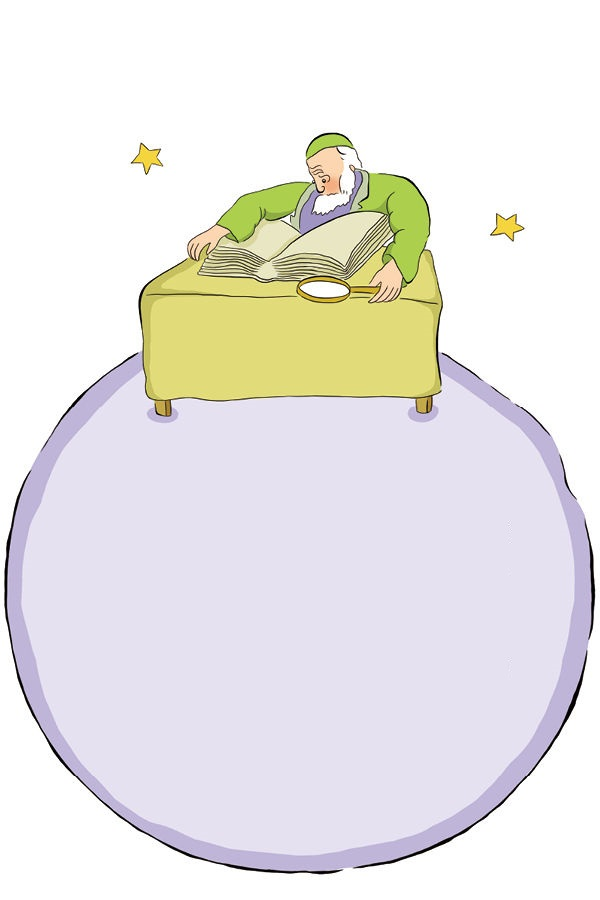
“找人去查看一番吗？”
– On va voir ?
“By going to see it?”
“不用，那太繁琐了。地理学家只是要探险家同时提供有关证明。例如，我们要探究他所发现的某座火山，我们便要求他为我们提供那座山上的石头。”
– Non. C’est trop compliqué. Mais on exige de l’explorateur qu’il fournisse des preuves. S’il s’agit par exemple de la découverte d’une grosse montagne, on exige qu’il en rapporte de grosses pierres.
“No, that would be too complicated. But the explorer is required to furnish proofs. For instance, if he claims to have discovered a large mountain, he is required to bring back large stones from it.”
地理学家突然变得兴奋起来：
Le géographe soudain s’émut.
The geographer suddenly grew excited.
“你是个来自远方的探险家，请你把你的那个星球给我描述一番吧！”
– Mais toi, tu viens de loin ! Tu es explorateur ! Tu vas me décrire ta planète !
“But you come from far away! You’re an explorer! You must describe your planet for me!”
他削好了铅笔，把巨大的记录本打了开来。一般来说，他总是先用铅笔记录探险家们的叙述，等有了确切的证据，才用墨水笔正式登记入册。
Et le géographe, ayant ouvert son registre, tailla son crayon. On note d’abord au crayon les récits des explorateurs. On attend, pour noter à l’encre, que l’explorateur ait fourni des preuves.
And the geographer, having opened his logbook, sharpened his pencil. Explorers’ reports are first recorded in pencil; ink is used only after proofs have been furnished.
“好啦！”地理学家满怀期待地说。
– Alors ? interrogea le géographe.
“Well?” said the geographer expectantly.
“哦，我住的那个地方非常有趣。”小王子说，“那里所有的东西都是小小的。星球上共有三座火山：两座是活火山，一座已经熄灭了。不过，谁知道将来会怎么样。”
– Oh ! chez moi, dit le petit prince, ce n’est pas très intéressant, c’est tout petit. J’ai trois volcans. Deux volcans en activité, et un volcan éteint. Mais on ne sait jamais.
“Oh, where I live,” said the little prince, “is not very interesting. It’s so small. I have three volcanoes, two active and one extinct. But you never know.”
“那是谁也料不到的。”地理学家说。
– On ne sait jamais, dit le géographe.
“You never know,” said the geographer.
“我还有一朵花儿。”
– J’ai aussi une fleur.
“I also have a flower.”
“我们是不记录花儿的。”学者说。
– Nous ne notons pas les fleurs, dit le géographe.
“We don’t record flowers,” the geographer said.
“那是为什么？那可是我整个星球上最美丽的东西呀！”
– Pourquoi ça ! c’est le plus joli !
“Why not? It’s the prettiest thing!”
“我们不记录这东西是因为它们全是属于朝生暮死一类的。”学者说。
– Parce que les fleurs sont éphémères.
“Because flowers are ephemeral.”
“朝生暮死？什么意思？”
– Qu’est-ce que signifie : « éphémère » ?
“What does ephemeral mean?”
“地理学方面的书籍只记载较为重大的事物，它们永远不会过时，而山脉走向或大海干枯都是罕见的情况。我们一般所记载的，都是那些恒久不变的事物。”
– Les géographies, dit le géographe, sont les livres les plus précieux de tous les livres. Elles ne se démodent jamais. Il est très rare qu’une montagne change de place. Il est très rare qu’un océan se vide de son eau. Nous écrivons des choses éternelles.
“Geographies,” said the geographer, “are the finest books of all. They never go out of fashion. It is extremely rare for a mountain to change position. It is extremely rare for an ocean to be drained of its water. We write eternal things.”
“但有时即使是死火山，也有可能复活的，”小王子打断了他的话，“而‘朝生暮死’又意味着什么呢？”
– Mais les volcans éteints peuvent se réveiller, interrompit le petit prince. Qu’est-ce que signifie « éphémère » ?
“But extinct volcanoes can come back to life,” the little prince interrupted. “What does ephemeral mean?”
“不管它是死火山、活火山，”地理学家说，“对我们来说，它始终是一座山，这是不可能变的。”
– Que les volcans soient éteints ou soient éveillés, ça revient au même pour nous autres, dit le géographe. Ce qui compte pour nous, c’est la montagne. Elle ne change pas.
“Whether volcanoes are extinct or active comes down to the same thing for us,” said the geographer. “For us what counts is the mountain. That doesn’t change.”
“但你说的‘朝生暮死’到底是指什么呢？”小王子一个劲儿地问。他提出的问题，你不解释清楚是很难溜得过去的。
– Mais qu’est-ce que signifie « éphémère » ? répéta le petit prince qui, de sa vie, n’avait renoncé à une question, une fois qu’il l’avait posée.
“But what does ephemeral mean?” repeated the little prince, who had never in all his life let go of a question once he had asked it.
“那是指有很快就会消失的危险。”
– Ça signifie « qui est menacé de disparition prochaine ».
”It means, ‘which is threatened by imminent disappearance.'”
“那么，我的花儿很快就会消失吗？”
– Ma fleur est menacée de disparition prochaine ?
“Is my flower threatened by imminent disappearance?”
“是的。”
– Bien sûr.
“Of course.”
“唉，我的花儿就是朝生暮死的。她只有四个刺可以用来自卫，用来对抗整个世界呀！而我，却把她孤零零地留在了那个小小的星球上！”
Ma fleur est éphémère, se dit le petit prince, et elle n’a que quatre épines pour se défendre contre le monde ! Et je l’ai laissée toute seule chez moi !
“My flower is ephemeral,” the little prince said to himself, “and she has only four thorns, with which to defend herself against the world! And I’ve left her all alone where I live!”
这是他第一次感到后悔。好在他很快就调整好了自己的情绪，恢复了勇气。
Ce fut là son premier mouvement de regret. Mais il reprit courage :
That was his first impulse of regret. But he plucked up his courage again.
“那么，现在你建议我去哪儿呢？”小王子问学者。
– Que me conseillez-vous d’aller visiter ? demanda-t-il.
“Where would you advise me to visit?” he asked.
“去地球，”地理学家回答他，“它的名声还不错。”
– La planète Terre, lui répondit le géographe. Elle a une bonne réputation…
“The planet Earth,” the geographer answered. “It has a good reputation.”
小王子满怀对花儿的思念，走了。
Et le petit prince s’en fut, songeant à sa fleur.
And the little prince went on his way, thinking about his flower.
16 抵达地球
所以，这第七个星球当然就是地球了！
La septième planète fut donc la Terre.
THE SEVENTH PLANET, then, was the Earth.
它可不是一个普通的星球。仔细查一查，那上面共有一百十一位国王（可别忘了，其中还有黑人领袖）、七千个地理学家、九十万个商人、七百五十万个酒鬼、三亿一千一百万个自大狂……那就是说，总共约有二十亿成年人。
La Terre n’est pas une planète quelconque ! On y compte cent onze rois (en n’oubliant pas, bien sûr, les rois nègres), sept mille géographes, neuf cent mille businessmen, sept millions et demi d’ivrognes, trois cent onze millions de vaniteux, c’est-à-dire environ deux milliards de grandes personnes.
The Earth is not just another planet! It contains one hundred and eleven kings (including, of course, the African kings), seven thousand geographers, nine hundred thousand businessmen, seven-and-a-half million drunkards, three-hundred-eleven million vain men; in other words, about two billion grown-ups.
为了让大家对这个地球的大小有个概念，我这样说吧，在人们发明使用电力之前，地球上的六大洲必须集结四十六万二千五百十一名点灯人大军，才能确保点亮所有的街灯。
Pour vous donner une idée des dimensions de la Terre je vous dirai qu’avant l’invention de l’électricité on y devait entretenir, sur l’ensemble des six continents, une véritable armée de quatre cent soixante-deux mille cinq cent onze allumeurs de réverbères.
To give you a notion of the Earth’s dimensions, I can tell you that before the invention of electricity, it was necessary to maintain, over the whole of six continents, a veritable army of four-hundred-sixty-two thousand, five hundred and eleven lamplighters.
远远望去，真是光彩夺目，无比绚烂，它们的亮灯动作，完全能安排得如同大剧院舞台上的芭蕾一般。最先出场的是新西兰和澳大利亚的点灯人，他们点燃了街灯之后，就退场睡觉去了。随后走上舞台的是中国和西伯利亚的点灯人，随着他们完成演出退场之后上场的是俄国和印度的点灯人，接着是非洲和欧洲的点灯人队伍，随后是南美，最后则是北美的点灯人。他们绝不会弄错登台次序，那种气势真壮观极了。
Vu d’un peu loin ça faisait un effet splendide. Les mouvements de cette armée étaient réglés comme ceux d’un ballet d’opéra. D’abord venait le tour des allumeurs de réverbères de Nouvelle-Zélande et d’Australie. Puis ceux-ci, ayant allumé leurs lampions, s’en allaient dormir. Alors entraient à leur tour dans la danse les allumeurs de réverbères de Chine et de Sibérie. Puis eux aussi s’escamotaient dans les coulisses. Alors venait le tour des allumeurs de réverbères de Russie et des Indes. Puis de ceux d’Afrique et d’Europe. Puis de ceux d’Amérique du Sud. Puis de ceux d’Amérique du Nord. Et jamais ils ne se trompaient dans leur ordre d’entrée en scène. C’était grandiose.
Seen from some distance, this made a splendid effect. The movements of this army were ordered like those of a ballet. First came the turn of the lamplighters of New Zealand and Australia; then these, having lit their street lamps, would go home to sleep. Next it would be the turn of the lamplighters of China and Siberia to perform their steps in the lamplighters’ ballet, and then they too would vanish into the wings. Then came the turn of the lamplighters of Russia and India. Then those of Africa and Europe. Then those of South America, and of North America. And they never missed their cues for their appearances onstage. It was awe inspiring.
只有负责照料北极那盏孤零零的街灯和照料南极街灯的两名点灯人，过得比谁都安逸；因为，他们两个人一年只需忙碌两次就够了。
Seuls, l’allumeur de l’unique réverbère du pôle Nord, et son confrère de l’unique réverbère du pôle Sud, menaient des vies d’oisiveté et de nonchalance : ils travaillaient deux fois par an.
Only the lamplighter of the single street lamp at the North Pole and his colleague of the single street lamp at the South Pole led carefree, idle lives: They worked twice a year.
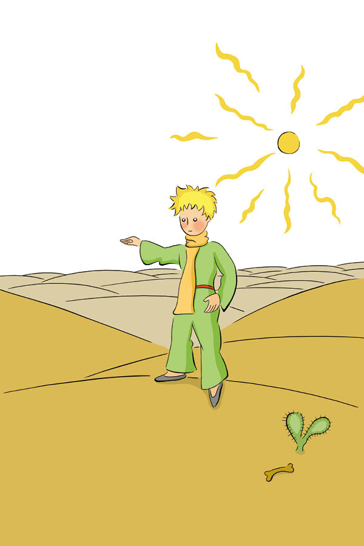
17 沙漠遇蛇
卖弄小聪明的人，往往会偏离事情的真相。关于点灯人，我说得并非十分明白。因而我知道，这极可能使不了解我们这个星球的人产生误解。人类在地球上所占的地方还不大，要是两百万居民像集会时挤在一起的话，二十公里见方的面积也就够了；而全世界的人，一个太平洋上的岛屿就可以容纳得下。
Quand on veut faire de l’esprit, il arrive que l’on mente un peu. Je n’ai pas été très honnête en vous parlant des allumeurs de réverbères. Je risque de donner une fausse idée de notre planète à ceux qui ne la connaissent pas. Les hommes occupent très peu de place sur la terre. Si les deux milliards d’habitants qui peuplent la terre se tenaient debout et un peu serrés, comme pour un meeting, ils logeraient aisément sur une place publique de vingt milles de long sur vingt milles de large. On pourrait entasser l’humanité sur le moindre petit îlot du Pacifique.
TRYING TO BE WITTY leads to lying, more or less. What I just told you about the lamplighters isn’t completely true, and I risk giving a false idea of our planet to those who don’t know it. Men occupy very little space on Earth. If the two billion inhabitants of the globe were to stand close together, as they might for some big public event, they would easily fit into a city block that was twenty miles long and twenty miles wide. You could crowd all humanity onto the smallest Pacific islet.
要是你把这些事实告诉那些大人，他们是不会相信的。他们想像自己都占有极大的空间，和大猴面包树一样重要。所以，你可以建议他们，自己好好估算一下。但你本人千万别浪费时间去过问这件多余的事，这毫无必要。我想，你是会相信我的。
Les grandes personnes, bien sûr, ne vous croiront pas. Elles s’imaginent tenir beaucoup de place. Elles se voient importantes comme des baobabs. Vous leur conseillerez donc de faire le calcul. Elles adorent les chiffres : ça leur plaira. Mais ne perdez pas votre temps à ce pensum. C’est inutile. Vous avez confiance en moi.
Grown-ups, of course, won’t believe you. They’re convinced they take up much more room. They consider themselves as important as the baobabs. So you should advise them to make their own calculations – they love numbers, and they’ll enjoy it. But don’t waste your time on this extra task. It’s unnecessary. Trust me.
小王子到达地球时没有见到任何人，因而觉得非常奇怪。当月光洒遍大地，沙漠镶上金边时，他开始怀疑自己是否走错了路。
Le petit prince, une fois sur terre, fut donc bien surpris de ne voir personne. Il avait déjà peur de s’être trompé de planète, quand un anneau couleur de lune remua dans le sable.
So once he reached Earth, the little prince was quite surprised not to see anyone. He was beginning to fear he had come to the wrong planet, when a moon-colored loop uncoiled on the sand.
“晚上好！”小王子殷勤地问候。
– Bonne nuit, fit le petit prince à tout hasard.
“Good evening,” the little prince said, just in case.
“晚上好！”一条蛇回应着。
– Bonne nuit, fit le serpent.
“Good evening,” said the snake.
“我这是到了哪个星球呢？”小王子问。
– Sur quelle planète suis-je tombé ? demanda le petit prince.
“What planet have I landed on?” asked the little prince.
“你到了地球啦！而这儿是地球上的非洲。”蛇回答了他。
– Sur la Terre, en Afrique, répondit le serpent.
“On the planet Earth, in Africa,” the snake replied.
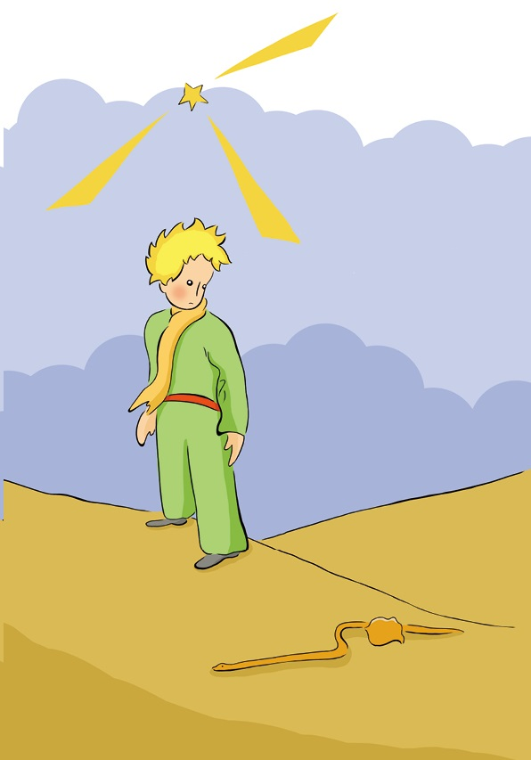
“噢，那么地球上是没有人的了？”
– Ah !… Il n’y a donc personne sur la Terre ?
“Ah!… And are there no people on Earth?”
“这儿是沙漠，而沙漠是没有人的。地球还大着呢！”蛇说。
– Ici c’est le désert. Il n’y a personne dans les déserts. La Terre est grande, dit le serpent.
“It’s the desert here. There are no people in the desert. Earth is very big,” said the snake.
小王子坐到了一块岩石上，抬头望着天空。
Le petit prince s’assit sur une pierre et leva les yeux vers le ciel :
The little prince sat down on a rock and looked up into the sky.
“我真纳闷，”他说，“星星之所以在天上发亮，是不是为了让我们每个人有一天都能找回自己的老家……瞧我的星球，它就在我的头顶上方，却又离得那么远。”
– Je me demande, dit-il, si les étoiles sont éclairées afin que chacun puisse un jour retrouver la sienne. Regarde ma planète. Elle est juste au-dessus de nous… Mais comme elle est loin !
“I wonder,” he said, “if the stars are lit up so that each of us can find his own, someday. Look at my planet – it’s just overhead. But so far away!”
“它很漂亮！”蛇说，“你干吗跑到这儿来？”
– Elle est belle, dit le serpent. Que viens-tu faire ici ?
“It’s lovely,” the snake said. “What have you come to Earth for?”
“我和一朵花之间出了点事。”小王子说。
– J’ai des difficultés avec une fleur, dit le petit prince.
“I’m having difficulties with a flower,” the little prince said.
“啊！”蛇吃了一惊。
– Ah ! fit le serpent.
“Ah!” said the snake.
两人都不说话了。
Et ils se turent.
And they were both silent.
“人都到哪儿去啦？”小王子又提到这个问题，“沙漠里还真寂寞……”
– Où sont les hommes ? reprit enfin le petit prince. On est un peu seul dans le désert…
“Where are the people?” The little prince finally resumed the conversation. “It’s a little lonely in the desert…”
“跟人在一块儿还是寂寞。”蛇说。
– On est seul aussi chez les hommes, dit le serpent.
“It’s also lonely with people,” said the snake.
小王子凝视着它。
Le petit prince le regarda longtemps :
The little prince looked at the snake for a long time.
过了好久才吐出一句话：“你是一个奇怪的动物……和一根手指差不多……”
– Tu es une drôle de bête, lui dit-il enfin, mince comme un doigt…
“You’re a funny creature,” he said at last, “no thicker than a finger.”
“可是，哪怕国王的手指也没有我这么大能耐。”蛇说。
– Mais je suis plus puissant que le doigt d’un roi, dit le serpent.
“But I’m more powerful than a king’s finger,” the snake said.
小王子笑了。
Le petit prince eut un sourire :
The little prince smiled.
“你不能算很有能耐，你连脚都没有，连旅行也办不到呀！……”
– Tu n’es pas bien puissant… tu n’as même pas de pattes… tu ne peux même pas voyager…
“You’re not very powerful…” You don’t even have feet. You couldn’t travel very far.”
“我能带你去任何船只都走不到的地方。”蛇说。
– Je puis t’emporter plus loin qu’un navire, dit le serpent.
“I can take you further than a ship,” the snake said.
它缠绕在小王子的脚踝上，像一条金色的脚链似的。
Il s’enroula autour de la cheville du petit prince, comme un bracelet d’or :
He coiled around the little prince’s ankle, like a golden bracelet.
“无论是谁，只要让我碰一下，我就能送他去老家。”蛇又对他说，“而你既诚实又纯真，还来自某颗星星……”
– Celui que je touche, je le rends à la terre dont il est sorti, dit-il encore. Mais tu es pur et tu viens d’une étoile…
“Anyone I touch, I send back to the land from which he came,” the snake went on. “But you’re innocent, and you come from a star…”
小王子没有接腔。
Le petit prince ne répondit rien.
The little prince made no reply.
“你让我同情……在这个花岗岩形成的地球上，你毕竟太柔弱了。”蛇说，“一旦哪天你害起思乡病，想再回自己的星球，我可以帮助你。我可以……”
– Tu me fais pitié, toi si faible, sur cette Terre de granit. Je puis t’aider un jour si tu regrettes trop ta planète. Je puis…
“I feel sorry for you, being so weak on this granite earth,” said the snake. “I can help you, someday, if you grow too homesick for your planet. I can-”
“嗯，我非常了解。”小王子说，“但你为什么说起话来总像做猜谜游戏呢？”
– Oh ! J’ai très bien compris, fit le petit prince, mais pourquoi parles-tu toujours par énigmes ?
“Oh, I understand just what you mean,” said the little prince, “but why do you always speak in riddles?”
“这些谜由我来解吧。”蛇说。
– Je les résous toutes, dit le serpent.
“I solve them all,” said the snake.
说完，两个人都不做声了。
Et ils se turent.
And they were both silent.
18 无根的花
小王子在跨越沙漠时，只碰到过一朵花。那朵花只有三个花瓣，一点也不起眼。
Le petit prince traversa le désert et ne rencontra qu’une fleur. Une fleur à trois pétales, une fleur de rien du tout…
THE LITTLE PRINCE crossed the desert and encountered only one flower. A flower with three petals – a flower of no consequence…
“早上好！”小王子说。
– Bonjour, dit le petit prince.
“Good morning,” said the little prince.
“早上好！”花儿说。
– Bonjour, dit la fleur.
“Good morning,” said the flower.
“人都在哪儿呢？”小王子很有礼貌地问。
– Où sont les hommes ? demanda poliment le petit prince.
“Where are the people?” the little prince inquired politely.
花儿曾见过一个过路的商队。
La fleur, un jour, avait vu passer une caravane :
The flower had one day seen a caravan passing.
“人？”她回答说，“我想大约还有六七个吧！几年前曾看到过他们，可是，谁也不知道上哪儿去找他们。他们没有根，因而也活得很艰苦。”
– Les hommes ? Il en existe, je crois, six ou sept. Je les ai aperçus il y a des années. Mais on ne sait jamais où les trouver. Le vent les promène. Ils manquent de racines, ça les gêne beaucoup.
“People? There are six or seven of them, I believe, in existence. I caught sight of them years ago. But you never know where to find them. The wind blows them away. They have no roots, which hampers them a good deal.”
“再见啦！”小王子说。
– Adieu, fit le petit prince.
“Good-bye,” said the little prince.
“再见！”花儿回答。
– Adieu, dit la fleur.
“Good-bye,” said the flower.
19 群山回响
后来，小王子登上了一座高山。以前的山在他的心目中，仅局限于他那三座火山。它们只有他膝盖那么高，他常把它们当凳子坐。“在如此高的山上，”他对自己说，“我一眼便可看遍整个星球，看到所有的人……”可事实是，除了湖泊和尖利的岩石外，他什么也看不到。
Le petit prince fit l’ascension d’une haute montagne. Les seules montagnes qu’il eût jamais connues étaient les trois volcans qui lui arrivaient au genou. Et il se servait du volcan éteint comme d’un tabouret. « D’une montagne haute comme celle-ci, se dit-il donc, j’apercevrai d’un coup toute la planète et tous les hommes… » Mais il n’aperçut rien que des aiguilles de roc bien aiguisées.
THE LITTLE PRINCE climbed a high mountain. The only mountains he had ever known were the three volcanoes, which came up to his knee. And he used the extinct volcano as a footstool. “From a mountain as high as this one,” he said to himself, “I’ll get a view of the whole planet and all the people on it…” But he saw nothing but rocky peaks as sharp as needles.
“早上好！”他很有礼貌地说。
– Bonjour, dit-il à tout hasard.
“Hello,” he said, just in case.
“早上好！——早上好！——早上好！”回声连连。
– Bonjour… Bonjour… Bonjour… répondit l’écho.
“Hello…” hello…” hello…” the echo answered.
“你是谁？”小王子说。
– Qui êtes-vous ? dit le petit prince.
“Who are you?” asked the little prince.
“你是谁？——你是谁？——你是谁？”又是四面八方的回声。
– Qui êtes-vous… qui êtes-vous… qui êtes-vous… répondit l’écho.
“Who are you… who are you… who are you…” the echo answered.
“做我的朋友吧，我好孤独！”他说。
– Soyez mes amis, je suis seul, dit-il.
“Let’s be friends. I’m lonely,” he said.
“我好孤独！——好孤独！——好孤独！”依旧是一片回声。
– Je suis seul… je suis seul… je suis seul… répondit l’écho.
“I’m lonely… I’m lonely… I’m lonely…” the echo answered.
“多么奇怪的星球呀！”他想，“什么都是干燥、坚硬的。所有的人都缺乏想像力，别人说什么就跟着说什么……而在我的那个星球上，我拥有一朵花，每次都是她先开口……”
« Quelle drôle de planète ! pensa-t-il alors. Elle est toute sèche, et toute pointue et toute salée. Et les hommes manquent d’imagination. Ils répètent ce qu’on leur dit… Chez moi j’avais une fleur : elle parlait toujours la première… »
“What a peculiar planet!” he thought. “It’s all dry and sharp and hard. And people here have no imagination. They repeat whatever you say to them. Where I live I had a flower: She always spoke first…”
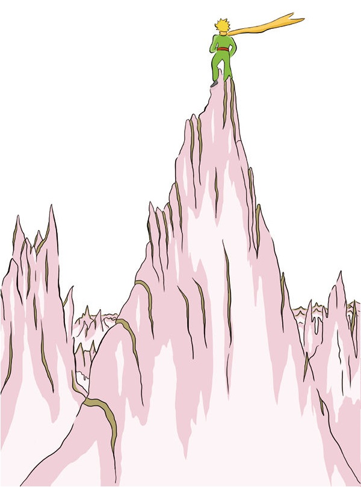
20 五千朵玫瑰
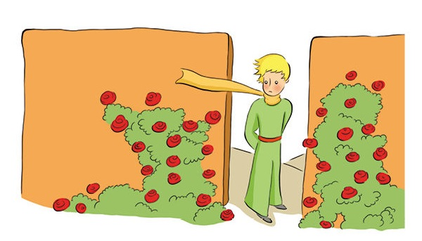
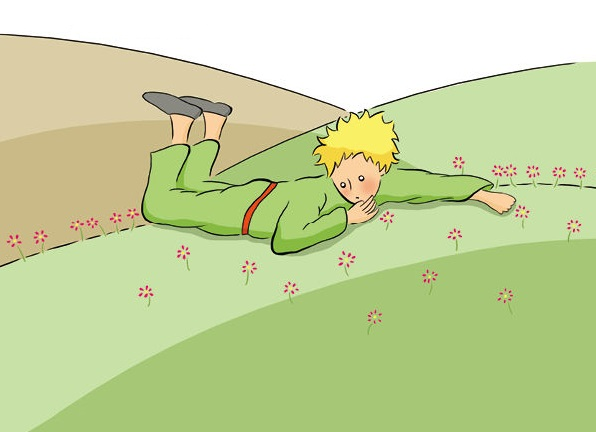
越过沙漠、岩石和雪地，小王子终于找到了一条路。只要有路，就会通向人类居住的地方。
Mais il arriva que le petit prince, ayant longtemps marché à travers les sables, les rocs et les neiges, découvrit enfin une route. Et les routes vont toutes chez les hommes.
BUT IT SO HAPPENED that the little prince, having walked a long time through sand and rocks and snow, finally discovered a road. And all roads go to where there are people.
“早上好！”他说。
– Bonjour, dit-il.
“Good morning,” he said.
这时他已经到了一座花园的门口，园里种的全是玫瑰。
C’était un jardin fleuri de roses.
It was a blossoming rose garden.
“早上好！”玫瑰们齐声问候。
– Bonjour, dirent les roses.
“Good morning,” said the roses.
小王子注视着她们，看上去她们和他的花儿非常相似。
Le petit prince les regarda. Elles ressemblaient toutes à sa fleur.
The little prince gazed at them. All of them looked like his flower.
“你们都是谁呀？”他震惊了。
– Qui êtes-vous ? leur demanda-t-il, stupéfait.
“Who are you?” he asked, astounded.
“我们是玫瑰。”玫瑰花儿回答道。
– Nous sommes des roses, dirent les roses.
“We’re roses,” the roses said.
“啊！”小王子叹道。
– Ah ! fit le petit prince…
“Ah!” said the little prince.
他感到很伤心。他的花儿曾对他说过，整个宇宙也找不到她的同类。而此刻，仅仅一个花园里，就有五千朵和她一样的花儿。
Et il se sentit très malheureux. Sa fleur lui avait raconté qu’elle était seule de son espèce dans l’univers. Et voici qu’il en était cinq mille, toutes semblables, dans un seul jardin !
And he felt very unhappy. His flower had told him she was the only one of her kind in the whole universe. And here were five thousand of them, all just alike, in just one garden!
“她要是看见了……”他想，“心里不烦才怪呢！她准会咳嗽，装出一副满脸憔悴的模样，以逃脱对她的嘲笑。可我呢，还得装模作样地呵护她，让她恢复元气，因为要是我不愿委曲求全的话，她真会结束自己的生命的……”
« Elle serait bien vexée, se dit-il, si elle voyait ça… elle tousserait énormément et ferait semblant de mourir pour échapper au ridicule. Et je serais bien obligé de faire semblant de la soigner, car, sinon, pour m’humilier moi aussi, elle se laisserait vraiment mourir… »
“She would be very annoyed,” he said to himself, “if she saw this…”She would cough terribly and pretend to be dying, to avoid being laughed at. And I’d have to pretend to be nursing her; otherwise, she’d really let herself die in order to humiliate me.”
他不停地回忆从前的事。“我还自以为拥有世界上独一无二的奇葩，哪里想得到她只是一朵很平凡的花儿罢了。一朵平凡的玫瑰，三座我膝盖高的火山——而且其中一座说不定是再也无法活动的死火山。我哪里是个伟大的王子啊！……”他趴在草地上大哭起来。
Puis il se dit encore : « Je me croyais riche d’une fleur unique, et je ne possède qu’une rose ordinaire. Ça et mes trois volcans qui m’arrivent au genou, et dont l’un, peut-être, est éteint pour toujours, ça ne fait pas de moi un bien grand prince… » Et, couché dans l’herbe, il pleura.
And then he said to himself, “I thought I was rich because I had just one flower, and all I own is an ordinary rose. That and my three volcanoes, which come up to my knee, one of which may be permanently extinct. It doesn’t make me much of a prince…” And he lay down in the grass and wept.
21 驯服狐狸
这时，一只狐狸出现了。
C’est alors qu’apparut le renard.
IT WAS THEN that the fox appeared.
“早上好！”狐狸说。
– Bonjour, dit le renard.
“Good morning,” said the fox.
“早上好！”小王子很有礼貌地回答，转过头来，却看不到任何人。
– Bonjour, répondit poliment le petit prince, qui se retourna mais ne vit rien.
“Good morning,” the little prince answered politely, though when he turned around he saw nothing.
“我在这儿呢！”那个声音又说了，“就在苹果树下。”
– Je suis là, dit la voix, sous le pommier.
“I’m here,” the voice said, “under the apple tree.”
“你是谁呀？”小王子接着说，“看起来好漂亮！”
– Qui es-tu ? dit le petit prince. Tu es bien joli…
“Who are you?” the little prince asked. “You’re very pretty…”
“我是一只狐狸。”狐狸回答说。
– Je suis un renard, dit le renard.
“I’m a fox,” the fox said.
“过来一起玩吧！”小王子提议道，“我心情真不好！”
– Viens jouer avec moi, lui proposa le petit prince. Je suis tellement triste…
“Come and play with me,” the little prince proposed. “I’m feeling so sad.”
“不，我不能跟你玩，”狐狸说，“我还没被驯服呢！”
– Je ne puis pas jouer avec toi, dit le renard. Je ne suis pas apprivoisé.
“I can’t play with you,” the fox said. “I’m not tamed.”
“哦，真遗憾。”小王子说。
– Ah ! pardon, fit le petit prince.
“Ah! Excuse me,” said the little prince.
可他一想，接着又问：
Mais, après réflexion, il ajouta :
But upon reflection he added,
“驯服？这是什么意思啊？”
– Qu’est-ce que signifie « apprivoiser » ?
“What does 'tamed' mean?”
“你肯定不是住在这儿的。”狐狸说，“你在寻找什么呢？”
– Tu n’es pas d’ici, dit le renard, que cherches-tu ?
“You’re not from around here,” the fox said.
“我在找‘人’。”小王子又说，“‘驯服’到底是什么意思呀？”
– Je cherche les hommes, dit le petit prince. Qu’est-ce que signifie « apprivoiser » ?
“What are you looking for?” “I’m looking for people,” said the little prince. “What does tamed mean?”
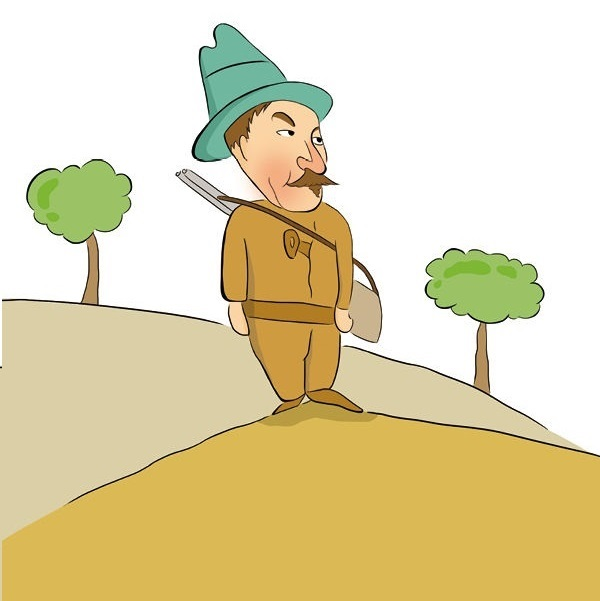
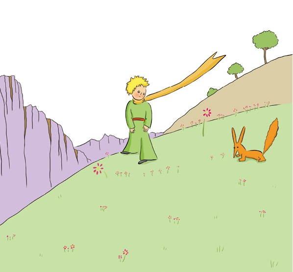
“人拿着枪，”狐狸说，“到处打猎，弄得大家不安，他们还养鸡，那也是他们的爱好。你在找鸡吗？”
– Les hommes, dit le renard, ils ont des fusils et ils chassent. C’est bien gênant ! Ils élèvent aussi des poules. C’est leur seul intérêt. Tu cherches des poules ?
“People,” said the fox, “have guns and they hunt. It’s quite troublesome. And they also raise chickens. That’s the only interesting thing about them. Are you looking for chickens?”
“不，”小王子说，“我在找朋友，你刚才说的‘驯服’到底是什么意思？”
– Non, dit le petit prince. Je cherche des amis. Qu’est-ce que signifie « apprivoiser » ?
“No,” said the little prince, “I’m looking for friends. What does tamed mean?”
“那是一种常常被忽视的行为，”狐狸告诉了他，“是‘建立关系’的意思。”
– C’est une chose trop oubliée, dit le renard. Ça signifie « créer des liens… »
“It’s something that’s been too often neglected. It means, 'to create ties'…”
“建立关系？”
– Créer des liens ?
“To create ties?”
“正是。”狐狸说，“对我来说，你不过是个小男孩，和其他千百个男孩没有什么不同。对你，我一无所求，而你呢？当然也无求于我。在你眼中，我和别的狐狸一个样，无非只是一只狐狸罢了。可是，一旦你驯服了我，我们就互相依赖了。在我眼里，你是这个世上独一无二的，对你来说，我也是世上惟一的……”
– Bien sûr, dit le renard. Tu n’es encore pour moi qu’un petit garçon tout semblable à cent mille petits garçons. Et je n’ai pas besoin de toi. Et tu n’as pas besoin de moi non plus. Je ne suis pour toi qu’un renard semblable à cent mille renards. Mais, si tu m’apprivoises, nous aurons besoin l’un de l’autre. Tu seras pour moi unique au monde. Je serai pour toi unique au monde…
“That’s right,” the fox said. “For me you’re only a little boy just like a hundred thousand other little boys. And I have no need of you. And you have no need of me, either. For you I’m only a fox like a hundred thousand other foxes. But if you tame me, we’ll need each other. You’ll be the only boy in the world for me. I’ll be the only fox in the world for you…”
“我渐渐有些明白了，”小王子说，“有一朵花……看来已经驯服了我。”
– Je commence à comprendre, dit le petit prince. Il y a une fleur… je crois qu’elle m’a apprivoisé…
“I’m beginning to understand,” the little prince said. “There’s a flower… I think she’s tamed me…”
“那是可能的，”狐狸说，“在这个地球上什么都可能发生。”
– C’est possible, dit le renard. On voit sur la Terre toutes sortes de choses…
“Possibly.” the fox said. “On Earth, one sees all kinds of things.”
“哦！不，这不是发生在地球上。”小王子说。
– Oh ! ce n’est pas sur la Terre, dit le petit prince.
“Oh, this isn’t on Earth,” the little prince said.
狐狸似乎被搞糊涂了，它一脸好奇地看着小王子。
Le renard parut très intrigué :
The fox seemed quite intrigued.
“在另一个星球上？”
– Sur une autre planète ?
“On another planet?”
“是的。”
– Oui.
“Yes.”
“那个星球上有猎人吗？”
– Il y a des chasseurs, sur cette planète-là ?
“Are there hunters on that planet?”
“没有。”
– Non.
“No.”
“啊，那可太棒啦！那儿有鸡吗？”
– Ça, c’est intéressant ! Et des poules ?
“Now that’s interesting. And chickens?”
“也没有。”
– Non.
“No.”
“唉，世界上毕竟没有十全十美的事呀！”狐狸叹了一口气。
– Rien n’est parfait, soupira le renard.
“Nothing’s perfect,” sighed the fox.
然后回到自己原先的念头上。
Mais le renard revint à son idée :
But he returned to his idea.
“我的生活真是单调：我猎鸡，人们又猎我。所有的鸡都一样，所有的人也都一样。所以，我有点儿厌倦了。不过，要是你驯服了我，那我的生命中就像出现了阳光。我会在杂沓的脚步声中辨认出某一个声音。听到了猎人的脚步声我会立刻躲到地下。而你的脚步声，我听来就会像优美的音乐，它会召唤我从我藏身的洞穴里走出来。瞧，看到那片金色的麦田了吗？好可惜！我不吃面食，麦田对我毫无用处，也就谈不上什么意义。而你的头发也是金色的。你想，一旦你驯服了我，那是多么美妙的事呀！面对那金色的麦田，我会想起你。而我，也会爱上倾听麦浪翻滚的声音……”
– Ma vie est monotone. Je chasse les poules, les hommes me chassent. Toutes les poules se ressemblent, et tous les hommes se ressemblent. Je m’ennuie donc un peu. Mais, si tu m’apprivoises, ma vie sera comme ensoleillée. Je connaîtrai un bruit de pas qui sera différent de tous les autres. Les autres pas me font rentrer sous terre. Le tien m’appellera hors du terrier, comme une musique. Et puis regarde ! Tu vois, là-bas, les champs de blé ? Je ne mange pas de pain. Le blé pour moi est inutile. Les champs de blé ne me rappellent rien. Et ça, c’est triste ! Mais tu as des cheveux couleur d’or. Alors ce sera merveilleux quand tu m’auras apprivoisé ! Le blé, qui est doré, me fera souvenir de toi. Et j’aimerai le bruit du vent dans le blé…
“My life is monotonous. I hunt chickens; people hunt me. All chickens are just alike, and all men are just alike. So I’m rather bored. But if you tame me, my life will be filled with sunshine. I’ll know the sound of footsteps that will be different from all the rest. Other footsteps send me back underground. Yours will call me out of my burrow like music. And then, look! You see the wheat fields over there? I don’t eat bread. For me wheat is of no use whatever. Wheat fields say nothing to me. Which is sad. But you have hair the color of gold. So it will be wonderful, once you’ve tamed me! The wheat, which is golden, will remind me of you. And I’ll love the sound of the wind in the wheat...”
它长时间地望着小王子……
Le renard se tut et regarda longtemps le petit prince :
The fox fell silent and stared at the little prince for a long while.
“请你驯服我吧！”它终于这样说了。
– S’il te plaît… apprivoise-moi ! dit-il.
“Please… tame me!” he said.
“我也想，很想这样做。”小王子回答说，“可我时间有限。我得去发现朋友，还要去了解许多别的事儿！”
– Je veux bien, répondit le petit prince, mais je n’ai pas beaucoup de temps. J’ai des amis à découvrir et beaucoup de choses à connaître.
“I’d like to,” the little prince replied, “but I haven’t much time. I have friends to find and so many things to learn.”
“只有‘驯服’才真正值得花时间去了解。”狐狸说，“人类根本没有多余的时间去了解那些无价的事物。他们在商店里购买所有现成的商品，却找不到一家商店可以买到友谊。从此，人们也就没有了真正的朋友。如果你想要个朋友，那么，就驯服我吧！”
– On ne connaît que les choses que l’on apprivoise, dit le renard. Les hommes n’ont plus le temps de rien connaître. Ils achètent des choses toutes faites chez les marchands. Mais comme il n’existe point de marchands d’amis, les hommes n’ont plus d’amis. Si tu veux un ami, apprivoise-moi !
“The only things you learn are the things you tame,” said the fox. “People haven’t time to learn anything. They buy things ready-made in stores. But since there are no stores where you can buy friends, people no longer have friends. If you want a friend, tame me!”
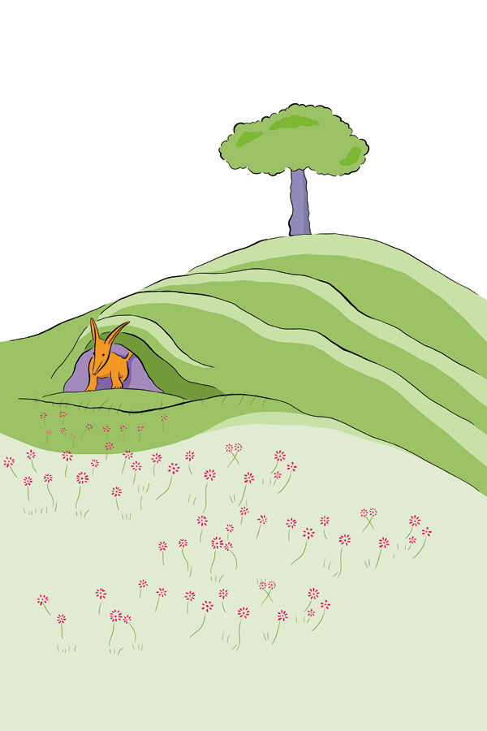
“驯服你，我得做些什么？”小王子问狐狸。
– Que faut-il faire ? dit le petit prince.
“What do I have to do?” asked the little prince.
“你得非常耐心。”狐狸说，“开始，你得离我稍稍远一点，就那样，远远地坐在那边草地上。我会先用目光不经意地瞟你，这时，你可别说任何话，因为语言是误会的根源。但你得一天比一天逐步靠近我……”
– Il faut être très patient, répondit le renard. Tu t’assoiras d’abord un peu loin de moi, comme ça, dans l’herbe. Je te regarderai du coin de l’œil et tu ne diras rien. Le langage est source de malentendus. Mais, chaque jour, tu pourras t’asseoir un peu plus près…
“You have to be very patient,” the fox answered. “First you’ll sit down a little ways away from me, over there, in the grass. I’ll watch you out of the corner of my eye, and you won’t say anything. Language is the source of misunderstandings. But day by day, you’ll be able to sit a little closer…”
第二天，小王子又来到了这个地方。
Le lendemain revint le petit prince.
The next day the little prince returned.
“你要能在每天同一个时间来就更好。”狐狸告诉他，“比方说，你每天下午四点钟来，那么，我三点就会开始兴奋起来。而且，时间越近，我就越兴奋。而一到四点，我又会变得焦躁不安，急得要死。我会让你知道我有多快活！但你要是任何时间都可能来，我就不知道什么时候准备好欢迎你的心情了……是人，就得有自己独特的仪式……”
– Il eût mieux valu revenir à la même heure, dit le renard. Si tu viens, par exemple, à quatre heures de l’après-midi, dès trois heures je commencerai d’être heureux. Plus l’heure avancera, plus je me sentirai heureux. À quatre heures, déjà, je m’agiterai et m’inquiéterai ; je découvrirai le prix du bonheur ! Mais si tu viens n’importe quand, je ne saurai jamais à quelle heure m’habiller le cœur… Il faut des rites.
“It would have been better to return at the same time,” the fox said. “For instance, if you come at four in the afternoon, I’ll begin to be happy by three. The closer it gets to four, the happier I’ll feel. By four I’ll be all excited and worried; I’ll discover what it costs to be happy! But if you come at any old time, I’ll never know when I should prepare my heart…” There must be rites.”
“‘仪式’是什么呀？”小王子问。
– Qu’est-ce qu’un rite ? dit le petit prince.
“What’s a rite?” asked the little prince.
“那也是往往被人忽略的行为，”狐狸说，“那是使每一天、每一刻各异其趣的缘由。譬如，搜捕我的猎户间有个仪式：每到星期四就和村子里的女郎跳舞。因此，对于我来说，星期四就是个好日子。我可以一直散步到葡萄园的那一头。但要是猎户们随时都可能开舞会的话，那么，日子也就变得千篇一律，我连个假期都没有了！”
– C’est aussi quelque chose de trop oublié, dit le renard. C’est ce qui fait qu’un jour est différent des autres jours, une heure, des autres heures. Il y a un rite, par exemple, chez mes chasseurs. Ils dansent le jeudi avec les filles du village. Alors le jeudi est jour merveilleux ! Je vais me promener jusqu’à la vigne. Si les chasseurs dansaient n’importe quand, les jours se ressembleraient tous, et je n’aurais point de vacances.
“That’s another thing that’s been too often neglected,” said the fox. “It’s the fact that one day is different from the other days, one hour from the other hours. My hunters, for example, have a rite. They dance with the village girls on Thursdays. “So Thursday’s a wonderful day: I can take a stroll all the way to the vineyards. If the hunters danced whenever they chose, the days would all be just alike, and I’d have no holiday at all.”
就这样，小王子驯服了狐狸。但是，他离去的时辰逼近了。
Ainsi le petit prince apprivoisa le renard. Et quand l’heure du départ fut proche :
That was how the little prince tamed the fox. And when the time to leave was near:
“我伤心得想哭了。”狐狸说。
– Ah ! dit le renard… Je pleurerai.
“Ah!” the fox said. “I shall weep.”
“难道不是你自己的错吗？”小王子说，“我从没想过要伤害你，可你却希望我驯服你……”
– C’est ta faute, dit le petit prince, je ne te souhaitais point de mal, mais tu as voulu que je t’apprivoise…
“It’s your own fault,” the little prince said. “I never wanted to do you any harm, but you insisted that I tame you…”
“就是嘛！”狐狸同意小王子的说法。
– Bien sûr, dit le renard.
“Yes, of course,” the fox said.
“但是你就要哭了！”小王子说。
– Mais tu vas pleurer ! dit le petit prince.
“But you’re going to weep!” said the little prince.
“是啊，当然要哭了。”狐狸说。
– Bien sûr, dit le renard.
“Yes, of course,” the fox said.
“所以，这一切对你毫无好处！”
– Alors tu n’y gagnes rien !
“Then you get nothing out of it?”
“不，有好处！”狐狸说，“从此麦田那金黄的颜色会使我很难过。”
– J’y gagne, dit le renard, à cause de la couleur du blé.
“I get something,” the fox said, “because of the color of the wheat.”
它又接着说：
Puis il ajouta :
Then he added,
“再去看看那些玫瑰，如今，你会知道你的玫瑰是世上独一无二的了。一会儿回来跟我道别，我要送你一个秘密作礼物。”
– Va revoir les roses. Tu comprendras que la tienne est unique au monde. Tu reviendras me dire adieu, et je te ferai cadeau d’un secret.
“Go look at the roses again. You’ll understand that yours is the only rose in all the world. Then come back to say good-bye, and I’ll make you the gift of a secret.”
小王子又去看望那些玫瑰花了。
Le petit prince s’en fut revoir les roses.
The little prince went to look at the roses again.
“你们一点都不像我那朵玫瑰，”他说，“你们至今仍无足轻重。没有人驯服过你们，而你们也没有驯服过任何人，就像我当初碰到狐狸时一样。它和其他千百只狐狸大同小异，可我让它成了我的朋友。从此以后，它在这个世上就是独一无二的了。”
– Vous n’êtes pas du tout semblables à ma rose, vous n’êtes rien encore, leur dit-il. Personne ne vous a apprivoisées et vous n’avez apprivoisé personne. Vous êtes comme était mon renard. Ce n’était qu’un renard semblable à cent mille autres. Mais j’en ai fait mon ami, et il est maintenant unique au monde.
“You’re not at all like my rose. You’re nothing at all yet,” he told them. “No one has tamed you and you haven’t tamed anyone. You’re the way my fox was. He was just a fox like a hundred thousand others. But I’ve made him my friend, and now he’s the only fox in all the world.”
玫瑰们听了好窘。
Et les roses étaient bien gênées.
And the roses were humbled.
“你们长得非常漂亮，但这只是个外表。”他说，“没有人会愿意为你们而死。当然，一般的陌路人会认为我的玫瑰和你们一模一样，但事实上，她要比你们这儿所有的玫瑰重要多了。那是因为：我为她浇过水、盖过玻璃罩、立过屏风、杀过毛毛虫（但我还留下过其中的两三只，让它们蜕变成美丽的蝴蝶）；还因为我曾留意过她的抱怨、她的吹嘘或沉默。因为，她是我的玫瑰。”
– Vous êtes belles, mais vous êtes vides, leur dit-il encore. On ne peut pas mourir pour vous. Bien sûr, ma rose à moi, un passant ordinaire croirait qu’elle vous ressemble. Mais à elle seule elle est plus importante que vous toutes, puisque c’est elle que j’ai arrosée. Puisque c’est elle que j’ai mise sous globe. Puisque c’est elle que j’ai abritée par le paravent. Puisque c’est elle dont j’ai tué les chenilles (sauf les deux ou trois pour les papillons). Puisque c’est elle que j’ai écoutée se plaindre, ou se vanter, ou même quelquefois se taire. Puisque c’est ma rose.
“You are lovely, but you’re empty,” he went on. “One couldn’t die for you. Of course, an ordinary passerby would think my rose looked just like you. But my rose, all on her own, is more important than all of you together, since she’s the one I’ve watered. Since she’s the one I put under glass. Since she’s the one I sheltered behind a screen. Since she’s the one for whom I killed the caterpillars (except the two or three for butterflies). Since she’s the one I listened to when she complained, or when she boasted, or even sometimes when she said nothing at all. Since she’s my rose.”
后来，他又回去见狐狸。
Et il revint vers le renard :
And he went back to the fox.
“再见啦！”他说。
– Adieu, dit-il…
“Good-bye,” he said.
“再见！”狐狸说，“现在，我要把那秘密告诉你，其实，这也很简单：人，只有用自己的心灵才能看清事物的本质，光凭眼睛是看不到的。”
– Adieu, dit le renard. Voici mon secret. Il est très simple : on ne voit bien qu’avec le cœur. L’essentiel est invisible pour les yeux.
“Good-bye,” said the fox. “Here is my secret. It’s quite simple: One sees clearly only with the heart. Anything essential is invisible to the eyes.”
“只有用自己的心灵才能看清事物的本质。”小王子复述了一遍狐狸告诉他的秘密。
– L’essentiel est invisible pour les yeux, répéta le petit prince, afin de se souvenir.
“Anything essential is invisible to the eyes,” the little prince repeated, in order to remember.
“是你为你那玫瑰所耗费的时间和精力，才使她变得如此重要。”
– C’est le temps que tu as perdu pour ta rose qui fait ta rose si importante.
“It’s the time you spent on your rose that makes your rose so important.”
“是我为我那玫瑰所耗费的时间和……”小王子为了记住它，又一次复述了狐狸教他的这句话。
– C’est le temps que j’ai perdu pour ma rose… fit le petit prince, afin de se souvenir.
“It’s the time I spent on my rose…” the little prince repeated, in order to remember.
“人们已经忘记这个真理，”狐狸说，“但你不能忘。对于被你驯服的对象，你永远负有责任。你必须对你的那朵玫瑰负责……”
– Les hommes ont oublié cette vérité, dit le renard. Mais tu ne dois pas l’oublier. Tu deviens responsable pour toujours de ce que tu as apprivoisé. Tu es responsable de ta rose…
“People have forgotten this truth,” the fox said. “But you mustn’t forget it. You become responsible forever for what you’ve tamed. You’re responsible for your rose…”
“我必须对我的那朵玫瑰负责。”小王子跟着狐狸复述着，他要让这些话深深地印在自己的脑海中。
– Je suis responsable de ma rose… répéta le petit prince, afin de se souvenir.
“I’m responsible for my rose…” the little prince repeated, in order to remember.
22 扳道工
“早上好！”小王子打着招呼。
– Bonjour, dit le petit prince.
“Good morning,” said the little prince.
“早上好！”扳道工回应着。
– Bonjour, dit l’aiguilleur.
“Good morning,” said the railway switchman.
“你在这儿干什么？”小王子问他。
– Que fais-tu ici ? dit le petit prince.
“What is it that you do here?” asked the little prince.
“我为人们扳道、发车。”扳道工回答。
– Je trie les voyageurs, par paquets de mille, dit l’aiguilleur. J’expédie les trains qui les emportent, tantôt vers la droite, tantôt vers la gauche.
“I sort the travelers into bundles of a thousand,” the switchman said. “I dispatch the trains that carry them, sometimes to the right, sometimes to the left.”
这时，一列华丽的快车飞驰而过，响声如雷，把扳道工的小屋震得颤动起来。
Et un rapide illuminé, grondant comme le tonnerre, fit trembler la cabine d’aiguillage.
And a brightly lit express train, roaring like thunder, shook the switchman’s cabin.
“跑得那么急！”小王子说，“他们在追寻什么呀？”
– Ils sont bien pressés, dit le petit prince. Que cherchent-ils ?
“What a hurry they’re in,” said the little prince. “What are they looking for?”
“这个嘛，看来连列车长也不一定说得清呀！”扳道工回答说。
– L’homme de la locomotive l’ignore lui-même, dit l’aiguilleur.
“Not even the engineer on the locomotive knows,” the switchman said.
第二列崭新的快车又从另一个方向飞驰而过。
Et gronda, en sens inverse, un second rapide illuminé.
And another brightly lit express train thundered by in the opposite direction.
“他们已经回来了吗？”小王子还在探究。
– Ils reviennent déjà ? demanda le petit prince…
“Are they coming back already?” asked the little prince.
“这可不是先前的那一列，”扳道工回答，“它们正好互换了线路。”
– Ce ne sont pas les mêmes, dit l’aiguilleur. C’est un échange.
“They’re not the same ones,” the switchman said. “It’s an exchange.”
“他们不满意原先的地方吗？”小王子问道。
– Ils n’étaient pas contents, là où ils étaient ?
“They weren’t satisfied, where they were?” asked the little prince.
“没有人会对自己所在的地方满意的。”扳道工说。
– On n’est jamais content là où l’on est, dit l’aiguilleur.
“No one is ever satisfied where he is,” the switchman said.
不久，他们又听到第三列飞驰而过的火车的轰鸣。
Et gronda le tonnerre d’un troisième rapide illuminé.
And a third brightly lit express train thundered past.
“他们是在追逐第一列火车的旅客吗？”小王子还在问。
– Ils poursuivent les premiers voyageurs ? demanda le petit prince.
“Are they chasing the first travelers?” asked the little prince.
“他们并没有追逐什么。”扳道工说，“他们不是在打哈欠，就是在车厢里睡觉。只有孩子们才会把小鼻子压在玻璃窗上往外张望。”
– Ils ne poursuivent rien du tout, dit l’aiguilleur. Ils dorment là-dedans, ou bien ils bâillent. Les enfants seuls écrasent leur nez contre les vitres.
“They’re not chasing anything,” the switchman said. “They’re sleeping in there, or else they’re yawning. Only the children are pressing their noses against the windowpanes.”
“是呀，看来只有孩子们才知道他们在追寻什么。”小王子说，“他们会把时间花在一个破破烂烂的娃娃上，而那个娃娃对他们来说太重要了，要是有人想拿走它，孩子们会哭的……”
– Les enfants seuls savent ce qu’ils cherchent, fit le petit prince. Ils perdent du temps pour une poupée de chiffons, et elle devient très importante, et si on la leur enlève, ils pleurent…
“Only the children know what they’re looking for,” said the little prince. “They spend their time on a rag doll and it becomes very important, and if it’s taken away from them, they cry…”
“孩子们是有福的。”扳道工说。
– Ils ont de la chance, dit l’aiguilleur.
“They’re lucky,” the switchman said.
23 止渴药丸
“早上好！”小王子在打着招呼。
– Bonjour, dit le petit prince.
“Good morning,” said the little prince.
“早上好！”商人回答。
– Bonjour, dit le marchand.
“Good morning,” said the salesclerk.
那是位推销止渴丸的商人。只要每周服用一粒，你就不会再想喝别的什么了。
C’était un marchand de pilules perfectionnées qui apaisent la soif. On en avale une par semaine et l’on n’éprouve plus le besoin de boire.
This was a salesclerk who sold pills invented to quench thirst. Swallow one a week and you no longer feel any need to drink.
“你为什么要推销这种药丸呢？”小王子问道。
– Pourquoi vends-tu ça ? dit le petit prince.
“Why do you sell these pills?”
“因为有专家计算过，”商人说，“服用这样的药丸可以省下许多时间，一星期就可以省下五十三分钟。”
– C’est une grosse économie de temps, dit le marchand. Les experts ont fait des calculs. On épargne cinquante-trois minutes par semaine.
“They save so much time,” the salesclerk said. “Experts have calculated that you can save fifty-three minutes a week.”
“那么，这五十三分钟用来做什么呢？”
– Et que fait-on de ces cinquante-trois minutes ?
“And what do you do with those fifty-three minutes?”
“随你便吧……”
– On en fait ce que l’on veut…
“Whatever you like.”
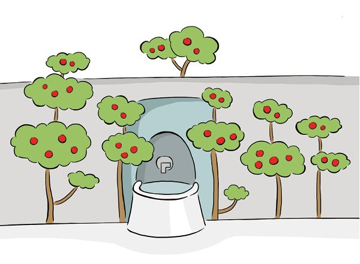
“我若有五十三分钟可受我支配，那我就悠闲地逛到清冽的泉边去。”
« Moi, se dit le petit prince, si j’avais cinquante-trois minutes à dépenser, je marcherais tout doucement vers une fontaine… »
“If I had fifty-three minutes to spend as I liked,” the little prince said to himself, “I’d walk very slowly toward a water fountain…”
24 沙漠寻井
自从在沙漠出了意外，到现在已经是第八天了。听完那个商人的故事，同时我也喝掉了身边所带的最后一滴水。
Nous en étions au huitième jour de ma panne dans le désert, et j’avais écouté l’histoire du marchand en buvant la dernière goutte de ma provision d’eau :
IT WAS NOW the eighth day since my crash landing in the desert, and I’d listened to the story about the salesclerk as I was drinking the last drop of my water supply.
“唉！”我对小王子说，“你的回忆确实非常动人，现在的问题是我既没有修好飞机，而且身边再没有水可喝了。要是我也能悠闲地逛到清冽的泉边去，我当然也会非常高兴的。”
– Ah ! dis-je au petit prince, ils sont bien jolis, tes souvenirs, mais je n’ai pas encore réparé mon avion, je n’ai plus rien à boire, et je serais heureux, moi aussi, si je pouvais marcher tout doucement vers une fontaine !
“Ah,” I said to the little prince, “your memories are very pleasant, but I haven’t yet repaired my plane. I have nothing left to drink, and I, too, would be glad to walk very slowly toward a water fountain!”
“我那狐狸朋友……”小王子还有话要对我说。
– Mon ami le renard, me dit-il…
“My friend the fox told me -”
“我亲爱的小人儿，眼下可没有什么能和狐狸扯上关系的！”
– Mon petit bonhomme, il ne s’agit plus du renard !
“Little fellow, this has nothing to do with the fox!”
“为什么？”
– Pourquoi ?
“Why?”
“因为我快渴死了……”
– Parce qu’on va mourir de soif…
“Because we’re going to die of thirst.”
他根本没有搞懂我为什么这么说，却回答道：
Il ne comprit pas mon raisonnement, il me répondit :
The little prince didn’t follow my reasoning, and answered me,
“即使快死了，曾经有过一个朋友也是好的。譬如说我吧，我就非常高兴曾经拥有过狐狸这么个朋友……”
– C’est bien d’avoir eu un ami, même si l’on va mourir. Moi, je suis bien content d’avoir eu un ami renard…
“It’s good to have had a friend, even if you’re going to die. Myself, I’m very glad to have had a fox for a friend.”
“我的天！他对我的危机毫无概念。”我心里想，“他既没饿过，也没渴过，他只需一缕阳光就已足够……”
« Il ne mesure pas le danger, me dis-je. Il n’a jamais ni faim ni soif. Un peu de soleil lui suffit… »
“He doesn’t realize the danger,” I said to myself. “He’s never hungry or thirsty. A little sunlight is enough for him…”
他怔怔地望着我，好像猜透了我的心思似的，说：
Mais il me regarda et répondit à ma pensée :
But the little prince looked at me and answered my thought.
“我也渴了，让我们一起去找口井吧……”
– J’ai soif aussi… cherchons un puits…
“I’m thirsty, too… Let’s find a well…”
我此刻确实已疲惫不堪。在茫茫的沙漠之中，漫无目标地去寻找一口井，简直是荒唐！虽说如此，我们还是一起出发了。
J’eus un geste de lassitude : il est absurde de chercher un puits, au hasard, dans l’immensité du désert. Cependant nous nous mîmes en marche.
I made an exasperated gesture. It is absurd looking for a well, at random, in the vastness of the desert. But even so, we started walking.
跋涉了几个小时后，已是夜色四合，一颗颗星星开始在天边出现。我已渴得头昏眼花，望着天上一颗颗明亮的星星，自己仿佛置身于梦境中一般，而小王子的话也不时在脑海里浮动……
Quand nous eûmes marché, des heures, en silence, la nuit tomba, et les étoiles commencèrent de s’éclairer. Je les apercevais comme en rêve, ayant un peu de fièvre, à cause de ma soif. Les mots du petit prince dansaient dans ma mémoire :
When we had walked for several hours in silence, night fell and stars began to appear. I noticed them as in a dream, being somewhat feverish on account of my thirst. The little prince’s words danced in my memory.
“你刚才不是说，你也渴吗？”我追问道。
– Tu as donc soif, toi aussi ? lui demandai-je.
“So you’re thirsty, too?” I asked.
他没有正面回答我的问题，但口里却这样说：
Mais il ne répondit pas à ma question. Il me dit simplement :
But he didn’t answer my question. He merely said to me,
“水对于一个人的心灵，同样有好处……”
– L’eau peut aussi être bonne pour le cœur…
“Water can also be good for the heart…”
这样的答案我难以理解，却也没有再说什么。我很清楚，想从他的嘴里再掏出些什么，比上天还难。
Je ne compris pas sa réponse mais je me tus… Je savais bien qu’il ne fallait pas l’interroger.
I didn’t understand his answer, but I said nothing…” I knew by this time that it was no use questioning him.
他终于累了，坐了下来，我也就紧挨着他坐下。就这样静静地坐了好一阵子，他又开了口：
Il était fatigué. Il s’assit. Je m’assis auprès de lui. Et, après un silence, il dit encore :
He was tired. He sat down. I sat down next to him. And after a silence, he spoke again.
“星星真美，因为，那里有一朵看不见的花儿。”
– Les étoiles sont belles, à cause d’une fleur que l’on ne voit pas…
“The stars are beautiful because of a flower you don’t see…” I answered,
我应道：“是啊，没有错！”便望着月光下绵延起伏的沙丘，不再多说什么。
Je répondis « bien sûr » et je regardai, sans parler, les plis du sable sous la lune.
“Yes, of course,” and without speaking another word I stared at the ridges of sand in the moonlight.
“沙漠真美！”小王子又说了。
– Le désert est beau, ajouta-t-il…
“The desert is beautiful,” the little prince added.
是的，他说得不错。我一向就喜欢沙漠，坐在一望无际的沙丘上，看不到任何东西，听不到任何声音。然而，就在那幽幽深处，会有某个东西在悸动，在闪烁……
Et c’était vrai. J’ai toujours aimé le désert. On s’assoit sur une dune de sable. On ne voit rien. On n’entend rien. Et cependant quelque chose rayonne en silence…
And it was true. I’ve always loved the desert. You sit down on a sand dune. You see nothing. You hear nothing. And yet something shines, something sings in that silence…
“沙漠之美，”小王子说，“就是人们意识到其中某个地方隐藏着一口水井，一泓清泉……”
– Ce qui embellit le désert, dit le petit prince, c’est qu’il cache un puits quelque part…
“What makes the desert beautiful,” the little prince said, “is that it hides a well somewhere…”
他的话使我如梦初醒，突然了解到沙漠中那神秘的光辉，让人心生惊异。当我还是个小男孩时，住在一幢古老的宅子里，传说那宅子里埋着某种宝藏。当然没人知道如何找到它，也许从来就没人去找过它。但那传说却使这幢邸宅叫人着迷：在我家深处埋藏着一个秘密……
Je fus surpris de comprendre soudain ce mystérieux rayonnement du sable. Lorsque j’étais petit garçon j’habitais une maison ancienne, et la légende racontait qu’un trésor y était enfoui. Bien sûr, jamais personne n’a su le découvrir, ni peut-être même ne l’a cherché. Mais il enchantait toute cette maison. Ma maison cachait un secret au fond de son cœur…
I was surprised by suddenly understanding that mysterious radiance of the sands. When I was a little boy I lived in an old house, and there was a legend that a treasure was buried in it somewhere. Of course, no one was ever able to find the treasure, perhaps no one even searched. But it cast a spell over that whole house. My house hid a secret in the depths of its heart…
“是的，”我对小王子说，“那邸宅、繁星、沙漠……之所以美，就美在肉眼看不见的地方！”
– Oui, dis-je au petit prince, qu’il s’agisse de la maison, des étoiles ou du désert, ce qui fait leur beauté est invisible !
“Yes,” I said to the little prince, “whether it’s a house or the stars or the desert, what makes them beautiful is invisible!”
“真高兴如今你同意那狐狸的话了。”
– Je suis content, dit-il, que tu sois d’accord avec mon renard.
“I’m glad,” he said, “you agree with my fox.”
小王子睡着了，我抱起他，继续朝前走。我的内心有种深深的感动，仿佛自己抱着的就是一件非常脆弱的珍宝。我甚至觉得，在这个世界上再也找不到比这更纤弱的宝物了。月光下我看着他那苍白的前额、紧闭的眼睛和那在微风中轻轻颤动的鬈发，此刻，我对自己说：“我见到的不过是具躯壳，而那最重要的部分，光靠肉眼是看不见的……”
Comme le petit prince s’endormait, je le pris dans mes bras, et me remis en route. J’étais ému. Il me semblait porter un trésor fragile. Il me semblait même qu’il n’y eût rien de plus fragile sur la Terre. Je regardais, à la lumière de la lune, ce front pâle, ces yeux clos, ces mèches de cheveux qui tremblaient au vent, et je me disais : « Ce que je vois là n’est qu’une écorce. Le plus important est invisible… »
As the little prince was falling asleep, I picked him up in my arms, and started walking again. I was moved. It was as if I was carrying a fragile treasure. It actually seemed to me there was nothing more fragile on Earth. By the light of the moon, I gazed at that pale forehead, those closed eyes, those locks of hair trembling in the wind, and I said to myself, “What I’m looking at is only a shell. What’s most important is invisible…”
他双唇微张，嘴边漾着朦胧的笑意。我喃喃自语：“熟睡中的这位小王子让我如此感动的，是他对那朵花儿的忠贞的爱……那朵玫瑰的影子，照亮了他整个生命，如同一盏明灯，甚至当他熟睡的时候……”
Comme ses lèvres entr’ouvertes ébauchaient un demi-sourire je me dis encore : « Ce qui m’émeut si fort de ce petit prince endormi, c’est sa fidélité pour une fleur, c’est l’image d’une rose qui rayonne en lui comme la flamme d’une lampe, même quand il dort… » Et je le devinai plus fragile encore. Il faut bien protéger les lampes : un coup de vent peut les éteindre…
As his lips parted in a half smile, I said to myself, again, “What moves me so deeply about this sleeping little prince is his loyalty to a flower – the image of a rose shining within him like the flame within a lamp, even when he’s asleep…” And I realized he was even more fragile than I had thought. Lamps must be protected: a gust of wind can blow them out…”
而我竟觉得他更脆弱了。我心中产生一股要保护好他的冲动，仿佛他本身就是一阵微风吹过就可能熄灭的火花……就这样，走着，走着，拂晓的时候，我们找到了水井。
Et, marchant ainsi, je découvris le puits au lever du jour.
And walking on like that, I found the well at daybreak.
25 井水甘甜
“人们坐上快速列车就匆匆忙忙地向前赶，却不知道自己在追寻什么。他们莽撞、激动，却一直在兜圈子……”
– Les hommes, dit le petit prince, ils s’enfournent dans les rapides, mais ils ne savent plus ce qu’ils cherchent. Alors ils s’agitent et tournent en rond…
THE LITTLE PRINCE said, “People start out in express trains, but they no longer know what they’re looking for. Then they get all excited and rush around in circles…”
小王子说完又加上一句：
Et il ajouta :
And he added,
“用不着那么麻烦的……”
– Ce n’est pas la peine…
“It’s not worth the trouble…”
我们找到的这口井和撒哈拉沙漠中一般的井不同。撒哈拉沙漠中的水井通常只是在沙漠中挖个洞就算是了，而这口井却像人家村庄里的那种水井。可是附近并没有村庄。所以我以为我是在梦中……
Le puits que nous avions atteint ne ressemblait pas aux puits sahariens. Les puits sahariens sont de simples trous creusés dans le sable. Celui-là ressemblait à un puits de village. Mais il n’y avait là aucun village, et je croyais rêver.
The well we had come to was not at all like the wells of the Sahara. The wells of the Sahara are no more than holes dug in the sand. This one looked more like a village well. But there was no village here, and I thought I was dreaming.
“真奇怪，”我对小王子说，“什么东西都给我们准备得好好的：辘轳、吊桶、绳索……”
– C’est étrange, dis-je au petit prince, tout est prêt : la poulie, le seau et la corde…
“It’s strange,” I said to the little prince, “everything is ready: the pulley, the bucket, and the rope…”
他笑了笑，摸摸绳子，然后摇起了辘轳把。辘轳便嘎吱嘎吱地响了起来，仿佛被风儿早已遗忘的老风向标一样。
Il rit, toucha la corde, fit jouer la poulie. Et la poulie gémit comme gémit une vieille girouette quand le vent a longtemps dormi.
He laughed, grasped the rope, and set the pulley working. And the pulley groaned the way an old weather vane groans when the wind has been asleep a long time.
“听到了吗？”小王子说，“我们唤醒了沉睡的水井，如今它唱起歌来了……”
– Tu entends, dit le petit prince, nous réveillons ce puits et il chante…
“Hear that?” said the little prince. “We’ve awakened this well and it’s singing.”
我可不愿他为了打水而把自己累坏了。
Je ne voulais pas qu’il fît un effort :
I didn’t want him to tire himself out.
“让我来，”我说，“这玩意儿对你来说太重啦！”
– Laisse-moi faire, lui dis-je, c’est trop lourd pour toi.
“Let me do that,” I said to him. “It’s too heavy for you.”
我缓缓地拉起吊桶，放到井边……辘轳的歌声却依旧在耳际萦回，而满满的一桶水已在阳光下闪烁，我做完这件事，心里真有说不出的高兴。
Lentement je hissai le seau jusqu’à la margelle. Je l’y installai bien d’aplomb. Dans mes oreilles durait le chant de la poulie et, dans l’eau qui tremblait encore, je voyais trembler le soleil.
Slowly I hoisted the bucket to the edge of the well. I set it down with great care. The song of the pulley continued in my ears, and I saw the sun glisten on the still-trembling water.
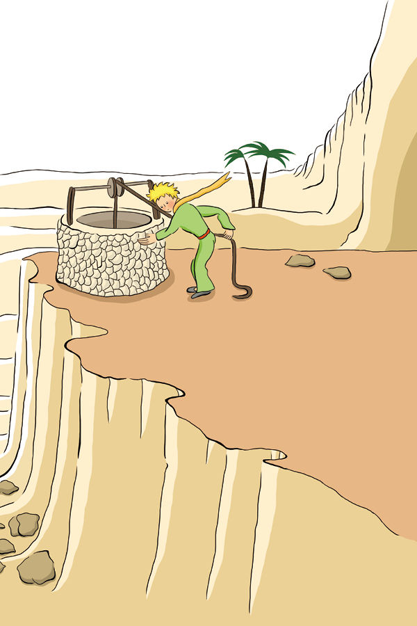
“给我一点儿水吧，我想喝极了……”小王子对我说。
– J’ai soif de cette eau-là, dit le petit prince, donne-moi à boire…
“I’m thirsty for that water,” said the little prince. “Let me drink some…”
我当然了解他在追寻什么。
Et je compris ce qu’il avait cherché !
And I understood what he’d been looking for!
我把吊桶提到他的唇边，他闭上眼睛喝着，如此清冽的水，喝起来的味道自不待言，不是任何滋补品可以比拟的。它的甘美来自星光下的跋涉、辘轳的歌唱以及我双臂的努力。它如同一件高贵的礼品，用来滋润一个人的心灵。在我孩提时代，圣诞树上的小灯、午夜的弥撒音乐、温柔的笑脸，都曾增添我所收到的那些礼物的光芒。
Je soulevai le seau jusqu’à ses lèvres. Il but, les yeux fermés. C’était doux comme une fête. Cette eau était bien autre chose qu’un aliment. Elle était née de la marche sous les étoiles, du chant de la poulie, de l’effort de mes bras. Elle était bonne pour le cœur, comme un cadeau. Lorsque j’étais petit garçon, la lumière de l’arbre de Noël, la musique de la messe de minuit, la douceur des sourires faisaient ainsi tout le rayonnement du cadeau de Noël que je recevais.
I raised the bucket to his lips. He drank, eyes closed. It was as sweet as a feast. That water was more than merely a drink. It was born of our walk beneath the stars, of the song of the pulley, of the effort of my arms. It did the heart good, like a present. When I was a little boy, the Christmas-tree lights, the music of midnight mass, the tenderness of people’s smiles made up, in the same way, the whole radiance of the Christmas present I received.
“你周围的许许多多人，”小王子说，“在他们生活的花园里种了五千朵玫瑰，但他们却无法找到他们所要追寻的东西。”
– Les hommes de chez toi, dit le petit prince, cultivent cinq mille roses dans un même jardin… et ils n’y trouvent pas ce qu’ils cherchent…
“People where you live,” the little prince said, “grow five thousand roses in one garden…” yet they don’t find what they’re looking for…”
“他们真的找不到。”我说。
– Ils ne le trouvent pas, répondis-je…
“They don’t find it,” I answered.
“可是他们一直追寻的东西，其实就在一朵花儿上或几滴水中就能找到的。”
– Et cependant ce qu’ils cherchent pourrait être trouvé dans une seule rose ou un peu d’eau…
“And yet what they’re looking for could be found in a single rose, or a little water…”
“是的，真是这样。”
– Bien sûr, répondis-je.
“Of course.” I answered.
小王子又接着说：
Et le petit prince ajouta :
And the little prince added,
“但肉眼是盲目的，人们必须用自己的心灵去寻找……”
– Mais les yeux sont aveugles. Il faut chercher avec le cœur.
“But eyes are blind. You have to look with the heart.”
我喝过水，呼吸也畅快多了。日出时分，沙漠呈现出蜂蜜般柔和的色调，让人看了心情舒畅。但又是什么给我带来忧伤的感觉呢？
J’avais bu. Je respirais bien. Le sable, au lever du jour, est couleur de miel. J’étais heureux aussi de cette couleur de miel. Pourquoi fallait-il que j’eusse de la peine…
I had drunk the water. I could breathe easy now. The sand, at daybreak, is honey-colored. And that color was making me happy, too. Why then did I also feel so sad?
“你得遵守你的诺言。”小王子坐到我的身边，柔声地对我说。
– Il faut que tu tiennes ta promesse, me dit doucement le petit prince, qui, de nouveau, s’était assis auprès de moi.
“You must keep your promise,” said the little prince, sitting up again beside me.
“什么诺言？”
– Quelle promesse ?
“What promise?”
“就是为我的羊画个口罩……我要对我的花儿负责……”
– Tu sais… une muselière pour mon mouton… je suis responsable de cette fleur !
“You know…a muzzle for my sheep… I’m responsible for this flower!”
我从口袋里把所有的草图都掏了出来，小王子一张张浏览过后大笑起来说：
Je sortis de ma poche mes ébauches de dessin. Le petit prince les aperçut et dit en riant :
I took my drawings out of my pocket. The little prince glanced at them and laughed as he said,
“你看，你看你画的猴面包树，像不像包心菜！”
– Tes baobabs, ils ressemblent un peu à des choux…
“Your baobabs look more like cabbages.”
“啊！”
– Oh !
“Oh!”
我还一直自以为画得不错呢！
Moi qui étais si fier des baobabs !
I had been so proud of the baobabs!
“你画的狐狸耳朵太长，像个喇叭。”
– Ton renard… ses oreilles… elles ressemblent un peu à des cornes… et elles sont trop longues !
“Your fox… his ears… look more like horns… and they’re too long!”
他又笑了。
Et il rit encore.
And he laughed again.
“小王子，你这话可不公平。”我抗议道，“除了画巨蟒吞象的外观图和内在图外，我根本不懂如何画别的东西！”
– Tu es injuste, petit bonhomme, je ne savais rien dessiner que les boas fermés et les boas ouverts.
“You’re being unfair, my little prince,” I said. “I never knew how to draw anything but boas from the inside and boas from the outside.”
“噢，那没关系！”他说，“孩子们看得懂的。”
– Oh ! ça ira, dit-il, les enfants savent.
“Oh, that’ll be all right,” he said. “Children understand.”
然后，我用铅笔画了个口罩。当我把画递给他时，我的心真忐忑不安得很呢！
Je crayonnai donc une muselière. Et j’eus le cœur serré en la lui donnant :
So then I drew a muzzle. And with a heavy heart I handed it to him.
“你还有什么打算瞒着我吗？”我问。
– Tu as des projets que j’ignore…
“You’ve made plans I don’t know about…”
他没有回答我，只说：
Mais il ne me répondit pas. Il me dit :
But he didn’t answer. He said,
“你知道，我降落到这个地球……到明天就是一周年了。”
– Tu sais, ma chute sur la Terre… c’en sera demain l’anniversaire…
“You know, my fall to Earth…” Tomorrow will be the first anniversary…”
他沉默了一会儿又继续说：
Puis, après un silence il dit encore :
Then, after a silence, he continued.
“我的着陆点离这儿很近。”
– J’étais tombé tout près d’ici…
“I landed very near here…”
他的脸有些红了。
Et il rougit.
And he blushed.
不知为什么，有股莫名的愁绪再次袭上心头。我脑海里浮出一个问题：
Et de nouveau, sans comprendre pourquoi, j’éprouvai un chagrin bizarre. Cependant une question me vint :
And once again, without understanding why, I felt a strange grief. However, a question occurred to me:
“这么说来，那天清晨初次遇到你不是偶然的事了——一星期前——你就那样晃悠悠地，从离人类居住地数千里外的地方一个人走到这儿。你是要回到最初着陆的地方去吗？”
– Alors ce n’est pas par hasard que, le matin où je t’ai connu, il y a huit jours, tu te promenais comme ça, tout seul, à mille milles de toutes les régions habitées ! Tu retournais vers le point de ta chute ?
“Then it wasn’t by accident that on the morning I met you, eight days ago, you were walking that way, all alone, a thousand miles from any inhabited region? Were you returning to the place where you fell to Earth?”
小王子的脸又红了起来。
Le petit prince rougit encore.
The little prince blushed again.
我虽有几分迟疑，但还是追问了一句：
Et j’ajoutai, en hésitant :
And I added, hesitantly,
“是因为一周年的关系吧？”
– À cause, peut-être, de l’anniversaire ?…
“Perhaps on account…” of the anniversary?”
他的脸又红了。他虽没有任何别的表示，但他的脸红岂不就是一种默认吗？
Le petit prince rougit de nouveau. Il ne répondait jamais aux questions, mais, quand on rougit, ça signifie « oui », n’est-ce pas ?
The little prince blushed once more. He never answered questions, but when someone blushes, doesn’t that mean “yes”?
“啊！”我对他说我有点儿担心。
– Ah ! lui dis-je, j’ai peur…
“Ah,” I said to the little prince, “I’m afraid…”
但他打断了我的话：
Mais il me répondit :
But he answered,
“现在，你必须工作了。你得回去修理你的发动机。明天黄昏时再来，我会在这儿等你……”
– Tu dois maintenant travailler. Tu dois repartir vers ta machine. Je t’attends ici. Reviens demain soir…
“You must get to work now. You must get back to your engine. I’ll wait here. Come back tomorrow night.”
我的心情并没有因此而放松下来，我记起了那只狐狸。要是一个人被驯服了的话，那就得冒相对垂泪的险了。
Mais je n’étais pas rassuré. Je me souvenais du renard. On risque de pleurer un peu si l’on s’est laissé apprivoiser…
But I wasn’t reassured. I remembered the fox. You risk tears if you let yourself be tamed.
26 最后的告别
井旁边有一堵残缺的石墙。第二天傍晚，我干完活回来时，远远就看到小王子坐在石墙的顶上，晃着一条腿。听到他说：
Il y avait, à côté du puits, une ruine de vieux mur de pierre. Lorsque je revins de mon travail, le lendemain soir, j’aperçus de loin mon petit prince assis là-haut, les jambes pendantes. Et je l’entendis qui parlait :
BESIDE THE WELL, there was a ruin, an old stone wall. When I came back from my work the next evening, I caught sight of my little prince from a distance. He was sitting on top of the wall, legs dangling. And I heard him talking.
“看来你是忘了，这个地点不确切。”
– Tu ne t’en souviens donc pas ? disait-il. Ce n’est pas tout à fait ici !
“Don’t you remember?” he was saying. “This isn’t exactly the place!”
也许还有一个声音回答了他，因为他接着又说道：
Une autre voix lui répondit sans doute, puisqu’il répliqua :
Another voice must have answered him then, for he replied,
“就是，就是这个日子，但不是这个地方。”
– Si ! Si ! c’est bien le jour, mais ce n’est pas ici l’endroit…
“Oh yes, it’s the right day, but this isn’t the place…”
我继续朝墙边走去，再没有听到什么，也没有看到什么，而小王子却又说开了：
Je poursuivis ma marche vers le mur. Je ne voyais ni n’entendais toujours personne. Pourtant le petit prince répliqua de nouveau :
I continued walking toward the wall. I still could neither see nor hear anyone, yet the little prince answered again:
“……是的，你会在沙地上发现我离开的脚印。你只要等着就行，晚上我会去的。”
– … Bien sûr. Tu verras où commence ma trace dans le sable. Tu n’as qu’à m’y attendre. J’y serai cette nuit.
“Of course. You’ll see where my tracks begin on the sand. Just wait for me there. I’ll be there tonight.”
此刻，离墙只有二十米，但我没有看到任何东西。
J’étais à vingt mètres du mur et je ne voyais toujours rien.
I was twenty yards from the wall and still saw no one.
沉默了一会儿，小王子又说道：
Le petit prince dit encore, après un silence :
Then the little prince said, after a silence,
“你有质量好的毒药吗？你能肯定它不致让我难受得太久吗？”
– Tu as du bon venin ? Tu es sûr de ne pas me faire souffrir longtemps ?
“Your poison is good? You’re sure it won’t make me suffer long?”
我停了下来，虽然我听得还不是那么明白，但心里却有一种说不出的滋味。
Je fis halte, le cœur serré, mais je ne comprenais toujours pas.
I stopped short, my heart pounding, but I still didn’t understand.
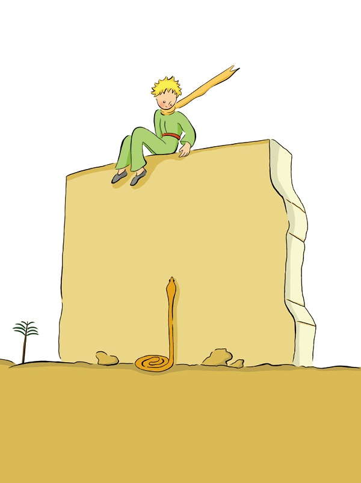
“得走啦！”小王子说，“我要跳下来了。”
– Maintenant va-t’en, dit-il… je veux redescendre !
“Now go away,” the little prince said. “I want to get down from here!”
我顺着他的话往墙根前一瞧，差一点跳了起来。原来就在他的下面，正好有一条能在三十秒钟内让人致命的小小的黄色毒蛇。我朝后退了几步，同时，从口袋里掏出左轮手枪。可是那条蛇却仿佛听到了什么，像一道下注的泉水，一下钻入沙地之中，发出窸窸窣窣的声音，从石缝间消失得无影无踪。
Alors j’abaissai moi-même les yeux vers le pied du mur, et je fis un bond ! Il était là, dressé vers le petit prince, un de ces serpents jaunes qui vous exécutent en trente secondes. Tout en fouillant ma poche pour en tirer mon revolver, je pris le pas de course, mais, au bruit que je fis, le serpent se laissa doucement couler dans le sable, comme un jet d’eau qui meurt, et, sans trop se presser, se faufila entre les pierres avec un léger bruit de métal.
Then I looked down toward the foot of the wall, and gave a great start! There, coiled in front of the little prince, was one of those yellow snakes that can kill you in thirty seconds. As I dug into my pocket for my revolver, I stepped back, but at the noise I made, the snake flowed over the sand like a trickling fountain, and without even hurrying, slipped away between the stones with a faint metallic sound.
我快步赶到墙边，伸手把小王子接住。但他的脸色已变得非常苍白。
Je parvins au mur juste à temps pour y recevoir dans les bras mon petit bonhomme de prince, pâle comme la neige.
I reached the wall just in time to catch my little prince in my arms, his face white as snow.
“怎么啦？”我说，“你怎么跟蛇说起话来了？”
– Quelle est cette histoire-là ! Tu parles maintenant avec les serpents !
“What’s going on here? You’re talking to snakes now?”
我解开他老是系在脖子上的那条围巾，湿润了一下他的太阳穴，又给他喝了点水。我已经不敢再问他什么了。他用手搂着我的脖子，怔怔地望着我。我感到了他的心在怦怦地跳，像一只被枪击中的垂危的小鸟一般。他对我说：
J’avais défait son éternel cache-nez d’or. Je lui avais mouillé les tempes et l’avais fait boire. Et maintenant je n’osais plus rien lui demander. Il me regarda gravement et m’entoura le cou de ses bras. Je sentais battre son cœur comme celui d’un oiseau qui meurt, quand on l’a tiré à la carabine. Il me dit :
I had loosened the yellow scarf he always wore. I had moistened his temples and made him drink some water. And now I didn’t dare ask him anything more. He gazed at me with a serious expression and put his arms round my neck. I felt his heart beating like a dying bird’s, when it’s been shot. He said to me:
“我非常高兴你排除了引擎的故障，”他对我说，“这下你可以回家了。”
– Je suis content que tu aies trouvé ce qui manquait à ta machine. Tu vas pouvoir rentrer chez toi…
“I’m glad you found what was the matter with your engine. Now you’ll be able to fly again…”
“你是怎么知道的？”
– Comment sais-tu !
“How did you know?”
我本来就想告诉他，我的活儿干得很顺手，超出了我原先的估计。
Je venais justement lui annoncer que, contre toute espérance, j’avais réussi mon travail !
I was just coming to tell him that I had been successful beyond all hope!
他并没有回答我的话，只是接着说：
Il ne répondit rien à ma question, mais il ajouta :
He didn’t answer my question; all he said was
“我今天也想回家了……”
– Moi aussi, aujourd’hui, je rentre chez moi…
“I’m leaving today, too.”
然后又伤感地说：
Puis, mélancolique :
And then, sadly,
“只是路远了好多……也很麻烦……”
– C’est bien plus loin… c’est bien plus difficile…
“It’s much further… It’s much more difficult.”
这时，我已清楚地意识到会有很不寻常的情况发生。我用双臂紧紧地搂住他，就像搂着一个可爱的婴儿那样。即使这样，我还是感到他像要一下跃入深渊，而我又无力挡住他似的……
Je sentais bien qu’il se passait quelque chose d’extraordinaire. Je le serrais dans les bras comme un petit enfant, et cependant il me semblait qu’il coulait verticalement dans un abîme sans que je pusse rien pour le retenir…
I realized that something extraordinary was happening. I was holding him in my arms like a little child, yet it seemed to me that he was dropping headlong into an abyss, and I could do nothing to hold him back.
他的表情既严肃又迷惘。
Il avait le regard sérieux, perdu très loin :
His expression was very serious now, lost and remote.
“如今我有了你给我画的羊，还有给羊住的小屋，还有口罩……”
– J’ai ton mouton. Et j’ai la caisse pour le mouton. Et j’ai la muselière…
“I have your sheep. And I have the crate for it. And the muzzle…”
说完，他脸上露出了一丝笑容，却又掩饰不住内心的某种悲切。
Et il sourit avec mélancolie.
And he smiled sadly.
我无话可说，渐渐地感觉到他的精神稍许振作了起来。
J’attendis longtemps. Je sentais qu’il se réchauffait peu à peu :
I waited a long time. I could feel that he was reviving a little.
“亲爱的小人儿，”我对他说，“你害怕了……”
– Petit bonhomme, tu as eu peur…
“Little fellow, you were frightened…”
无疑，他是有点害怕的。但他却装出愉快的样子，微笑着。
Il avait eu peur, bien sûr ! Mais il rit doucement :
Of course he was frightened! But he laughed a little.
“今晚我会更加害怕……”
– J’aurai bien plus peur ce soir…
“I’ll be much more frightened tonight…”
我再次感到一种无法挽回的感觉让我感到寒意。我意识到我无法忍受再也听不到那笑声的想法。对我来说，这就像沙漠中的一股清泉水。
De nouveau je me sentis glacé par le sentiment de l’irréparable. Et je compris que je ne supportais pas l’idée de ne plus jamais entendre ce rire. C’était pour moi comme une fontaine dans le désert.
Once again I felt chilled by the sense of something irreparable. And I realized I couldn’t bear the thought of never hearing that laugh again. For me it was like a spring of fresh water in the desert.
“小人儿，”我说，“我多么想再听听你的笑声啊！”
– Petit bonhomme, je veux encore t’entendre rire…
“Little fellow, I want to hear you laugh again…”
可是他却这样对我说：
Mais il me dit :
But he said to me.
“今晚就是一周年了……那时，我就可以在一年前刚到地球的那个地点上空，找到我的那颗星星……”
– Cette nuit, ça fera un an. Mon étoile se trouvera juste au-dessus de l’endroit où je suis tombé l’année dernière…
“Tonight, it’ll be a year. My star will be just above the place where I fell last year…”
“小人儿，”我对他说，“告诉我这只是一场噩梦。这蛇、这相逢、这星星都不过是……”
– Petit bonhomme, n’est-ce pas que c’est un mauvais rêve cette histoire de serpent et de rendez-vous et d’étoile…
“Little fellow, it’s a bad dream, isn’t it? All this conversation with the snake and the meeting place and the star…”
他避开我的请求，对我说：
Mais il ne répondit pas à ma question. Il me dit :
But he didn’t answer my question. All he said was,
“真正重要的东西，肉眼是看不到的……”
– Ce qui est important, ça ne se voit pas…
“The important thing is what can’t be seen…”
“是，我知道……”
– Bien sûr…
“Of course…”
“就像那朵花儿一样。要是你爱上一朵长在某颗星星上的花儿，那么，你在夜里凝望星空时就会觉得非常温馨。满天的繁星就像一朵朵盛开的鲜花……”
– C’est comme pour la fleur. Si tu aimes une fleur qui se trouve dans une étoile, c’est doux, la nuit, de regarder le ciel. Toutes les étoiles sont fleuries.
“It’s the same as for the flower. If you love a flower that lives on a star, then it’s good, at night, to look up at the sky. All the stars are blossoming.”
“是，这我懂……”
– Bien sûr…
“Of course…”
“又好比那井水。只是因为那辘轳、那绳子，你递给我的水才会变得如音乐般迷人。记得吗？一点一滴，沁人心脾。”
– C’est comme pour l’eau. Celle que tu m’as donnée à boire était comme une musique, à cause de la poulie et de la corde… tu te rappelles… elle était bonne.
“It’s the same for the water. The water you gave me to drink was like music, on account of the pulley and the rope… You remember… It was good.”
“是，我知道……”
– Bien sûr…
“Of course…”
“夜晚，你仰望星空。我住的地方，一切都那么小，因而我没法告诉你如何找到它。也许这样更好。我的星星只是群星之一。你就因此会喜欢看夜空中的每一颗星……它们也都可能成为你的朋友。另外，我要送你一件礼物……”
– Tu regarderas, la nuit, les étoiles. C’est trop petit chez moi pour que je te montre où se trouve la mienne. C’est mieux comme ça. Mon étoile, ça sera pour toi une des étoiles. Alors, toutes les étoiles, tu aimeras les regarder… Elles seront toutes tes amies. Et puis je vais te faire un cadeau…
“At night, you’ll look up at the stars. It’s too small, where I live, for me to show you where my star is. It’s better that way. My star will be… one of the stars, for you. So you’ll like looking at all of them. They’ll all be your friends. And besides, I have a present for you.”
他又开始笑了。
Il rit encore.
He laughed again.
“哦，小王子，我亲爱的小人儿！我多爱听这笑声呵！”
– Ah ! petit bonhomme, petit bonhomme j’aime entendre ce rire !
“Ah, little fellow, little fellow, I love hearing that laugh!”
“这就是我的礼物，它会像我们喝井水时所感觉到的那样……”
– Justement ce sera mon cadeau… ce sera comme pour l’eau…
“That’ll be my present. Just that… It’ll be the same as for the water.”
“你想说明什么呢？”
– Que veux-tu dire ?
“What do you mean?”
“每一个人都有自己的星星。”他对我说，“但对不同的人却有不同的含义。对于旅人，星星是他们的向导，而对其他的人，它们只是闪烁在夜空的微弱的亮光；对于学者，它们又成了待解的课题；对我所遇到的那个实业家，它们又代表着某种财富；而所有的星星却都是默默无言的。看来，惟有你，所拥有的星星和别人不一样。”
– Les gens ont des étoiles qui ne sont pas les mêmes. Pour les uns, qui voyagent, les étoiles sont des guides. Pour d’autres elles ne sont rien que de petites lumières. Pour d’autres, qui sont savants, elles sont des problèmes. Pour mon businessman elles étaient de l’or. Mais toutes ces étoiles-là se taisent. Toi, tu auras des étoiles comme personne n’en a…
“People have stars, but they aren’t the same. For travelers, the stars are guides. For other people, they’re nothing but tiny lights. And for still others, for scholars, they’re problems. For my businessman, they were gold. But all those stars are silent stars. You, though, you’ll have stars like nobody else.”
“你想以此来说明什么呢？”
– Que veux-tu dire ?
“What do you mean?”
“在其中的某一颗星星上，有我在向你微笑。因此，当你仰望夜空时，你就会觉得所有的星星都在微笑……所以，惟有你拥有会笑的星星。”
– Quand tu regarderas le ciel, la nuit, puisque j’habiterai dans l’une d’elles, puisque je rirai dans l’une d’elles, alors ce sera pour toi comme si riaient toutes les étoiles. Tu auras, toi, des étoiles qui savent rire !
“When you look up at the sky at night, since I’ll be living on one of them, since I’ll be laughing on one of them, for you it’ll be as if all the stars are laughing. You’ll have stars that can laugh!”
他又笑了。
Et il rit encore.
And he laughed again.
“当你的忧伤平息之后（时间会缓解任何忧伤），你会由于认识了我而感到高兴。你始终是我的朋友，永远和我一起欢笑。你会时常推开窗户，追寻那一段欢乐的时光……说不定你的朋友会见到你遥望星空微笑而感到惊奇。那时，你会告诉他们说：‘是的，天上的星星总让我欣喜。’而他们准会认为你疯了，这难道不是我耍的小把戏吗！”
– Et quand tu seras consolé (on se console toujours) tu seras content de m’avoir connu. Tu seras toujours mon ami. Tu auras envie de rire avec moi. Et tu ouvriras parfois ta fenêtre, comme ça, pour le plaisir… Et tes amis seront bien étonnés de te voir rire en regardant le ciel. Alors tu leur diras : « Oui, les étoiles, ça me fait toujours rire ! » Et ils te croiront fou. Je t’aurai joué un bien vilain tour…
“And when you’re consoled (everyone eventually is consoled), you’ll be glad you’ve known me. You’ll always be my friend. You’ll feel like laughing with me. And you’ll open your window sometimes just for the fun of it… And your friends will be amazed to see you laughing while you’re looking up at the sky. Then you’ll tell them, ‘Yes, it’s the stars; they always make me laugh!’ And they’ll think you’re crazy. It’ll be a nasty trick I played on you…”
他又笑了起来。
Et il rit encore.
And he laughed again.
“这好比我给了你许多小小的铃铛，像群星闪烁在天际……”
– Ce sera comme si je t’avais donné, au lieu d’étoiles, des tas de petits grelots qui savent rire…
“And it’ll be as if I had given you, instead of stars, a lot of tiny bells that know how to laugh…”
他的笑容不久又蒙上某种凝重。
Et il rit encore. Puis il redevint sérieux :
And he laughed again. Then he grew serious once more.
“可今夜……你……你别来。”
– Cette nuit… tu sais… ne viens pas.
“Tonight… you know… don’t come.”
“但我不会离开你的。”我回答说。
– Je ne te quitterai pas.
“I won’t leave you.”
“到时候我的样子会很痛苦，就像快要死了。千万别来看我那个模样，不值得……”
– J’aurai l’air d’avoir mal… j’aurai un peu l’air de mourir. C’est comme ça. Ne viens pas voir ça, ce n’est pas la peine…
“It’ll look as if I’m suffering. It’ll look a little as if I’m dying. It’ll look that way. Don’t come to see that; it’s not worth the trouble.”
“我不会离开你。”
– Je ne te quitterai pas.
“I won’t leave you.”
可这让他很不安。
Mais il était soucieux.
But he was anxious.
“对你说了吧！那也许会跟蛇有关。但我决不能让它伤害到你！蛇是冷血动物，说不定一下就把你咬了……”
– Je te dis ça… c’est à cause aussi du serpent. Il ne faut pas qu’il te morde… Les serpents, c’est méchant. Ça peut mordre pour le plaisir…
“I’m telling you this… on account of the snake. He mustn’t bite you. Snakes are nasty sometimes. They bite just for fun…”
“不，我就要陪着你。”
– Je ne te quitterai pas.
“I won’t leave you.”
此刻，他又忽然想到：
Mais quelque chose le rassura :
But something reassured him.
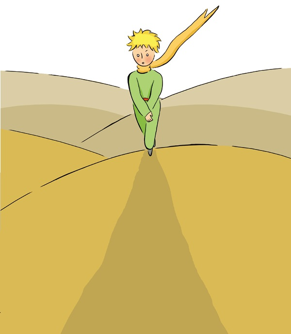
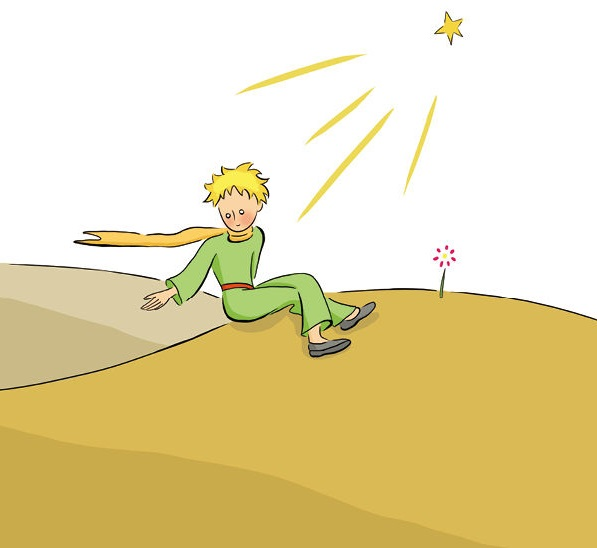
“哦，对了，它们不可能再咬第二口。”
– C’est vrai qu’ils n’ont plus de venin pour la seconde morsure…
“It’s true they don’t have enough poison for a second bite…”
那天晚上我没有注意到他什么时候走的。他走得一点声息也没有。当我拼命追赶的时候，发现他义无反顾地匆匆走着，对我只说了一句话：
Cette nuit-là je ne le vis pas se mettre en route. Il s’était évadé sans bruit. Quand je réussis à le rejoindre il marchait décidé, d’un pas rapide. Il me dit seulement :
That night I didn’t see him leave. He got away without making a sound. When I managed to catch up with him, he was walking fast, with determination. All he said was,
“哦，你来了。”
– Ah ! tu es là…
“Ah, you’re here.”
他心神不定地紧握着我的手。
Et il me prit par la main. Mais il se tourmenta encore :
And he took my hand. But he was still anxious.
“你真不该来的，到时候我的样子会像死了一样，那会让你难受的。可那不是真的……”
– Tu as eu tort. Tu auras de la peine. J’aurai l’air d’être mort et ce ne sera pas vrai…
“You were wrong to come. You’ll suffer. I’ll look as if I’m dead, and that won’t be true…”
我没有说话。
Moi je me taisais.
I said nothing.
“你是知道的……由于距离太远，我没法带着躯壳回去，要不，也太重了。”
– Tu comprends. C’est trop loin. Je ne peux pas emporter ce corps-là. C’est trop lourd.
“You understand. It’s too far. I can’t take this body with me. It’s too heavy.”
我还是没有说话。
Moi je me taisais.
I said nothing.
“那是一具被弃的躯壳，而对它，又有什么好悲伤的呢……”
– Mais ce sera comme une vieille écorce abandonnée. Ce n’est pas triste les vieilles écorces…
“But it’ll be like an old abandoned shell. There’s nothing sad about an old shell…”
我仍然一声不吭。
Moi je me taisais.
I said nothing.
他似乎有些气馁了，但还是鼓起最后的那点儿勇气：
Il se découragea un peu. Mais il fit encore un effort :
He was a little disheartened now. But he made one more effort.
“你说，那不是一件很令人高兴的事儿吗？因为，我在那个时刻也会仰望群星，而它们每一颗都会像装了辘轳的井一样，都会把水掏出来给你喝……”
– Ce sera gentil, tu sais. Moi aussi je regarderai les étoiles. Toutes les étoiles seront des puits avec une poulie rouillée. Toutes les étoiles me verseront à boire…
“It’ll be nice, you know. I’ll be looking at the stars, too. All the stars will be wells with a rusty pulley. All the stars will pour out water for me to drink…”
我依然一声不吭。
Moi je me taisais.
I said nothing.
“那肯定很有意思！到时你会一下子拥有五亿个小铃铛，而我，也就因此而拥有了五亿口水井……”
– Ce sera tellement amusant ! Tu auras cinq cents millions de grelots, j’aurai cinq cents millions de fontaines…
“And it’ll be fun! You’ll have five-hundred million little bells; I’ll have five-hundred million springs of fresh water…
他开始流泪，已经无法再往下说了。
Et il se tut aussi, parce qu’il pleurait…
And he, too, said nothing, because he was weeping…”
“到了，就让我自个儿走吧！”
– C’est là. Laisse-moi faire un pas tout seul.
“Here’s the place. Let me go on alone.”
他忧心忡忡地坐了下来。
Et il s’assit parce qu’il avait peur.
And he sat down because he was frightened.
接着又对我说：
Il dit encore :
Then he said:
“你知道，我得对我的花儿负责。她是那么脆弱，又那么天真：总共才四根刺儿，要靠它们来保护自己，还要和整个世界对抗，那也太不自量了……”
– Tu sais… ma fleur… j’en suis responsable ! Et elle est tellement faible ! Et elle est tellement naïve. Elle a quatre épines de rien du tout pour la protéger contre le monde…
“You know… my flower… I’m responsible for her. And she’s so weak! And so naive. She has four ridiculous thorns to defend her against the world…”
我也跟着坐了下来，其实，我也已经支持不住了。
Moi je m’assis parce que je ne pouvais plus me tenir debout. Il dit :
I sat down, too, because I was unable to stand any longer. He said,
“这就是一切……”
– Voilà… C’est tout…
“There… That’s all…”
他迟疑了一下，终于又站了起来，往前又迈出一步，可我已经再也挪不动自己的脚了。
Il hésita encore un peu, puis il se releva. Il fit un pas. Moi je ne pouvais pas bouger.
He hesitated a little longer, then he stood up. He took a step. I couldn’t move.
我看得见，有一种微微泛着黄色的东西缠在了他的脚踝子上。他纹丝不动地站了好一会儿，最后，像一棵树，毫无声息地缓缓倒在了一片沙地上。
Il n’y eut rien qu’un éclair jaune près de sa cheville. Il demeura un instant immobile. Il ne cria pas. Il tomba doucement comme tombe un arbre. Ça ne fit même pas de bruit, à cause du sable.
There was nothing but a yellow flash close to his ankle. He remained motionless for an instant. He didn’t cry out. He fell gently, the way a tree falls. There wasn’t even a sound, because of the sand.
27 六年思念
如今，六年已经过去了……我还从来没有讲起过这个故事。那些重新见到我的伙伴，看见我还活着，都很高兴。我心里难过，却只对他们说：“这是累的……”
Et maintenant, bien sûr, ça fait six ans déjà… Je n’ai jamais encore raconté cette histoire. Les camarades qui m’ont revu ont été bien contents de me revoir vivant. J’étais triste mais je leur disais : « C’est la fatigue… »
AND NOW, of course, it’s been six years already…” I’ve never told this story before. The friends who saw me again were very glad to see me alive. I was sad, but I told them, “It’s fatigue.”
现在，我稍稍得到了安慰。也就是说……并没有完全安慰下来。但我知道，他确实回到了自己的星球，因为天亮时，我没有找到他的身体。那并不是一个很重的身体……而我喜欢在夜里听星星，好像五亿个小铃铛……
Maintenant je me suis un peu consolé. C’est-à-dire… pas tout à fait. Mais je sais bien qu’il est revenu à sa planète, car, au lever du jour, je n’ai pas retrouvé son corps. Ce n’était pas un corps tellement lourd… Et j’aime la nuit écouter les étoiles. C’est comme cinq cent millions de grelots…
Now I’m somewhat consoled. That is…not entirely. But I know he did get back to his planet because at daybreak I didn’t find his body. It wasn’t such a heavy body… And at night I love listening to the stars. It’s like five-hundred million little bells…
可是，又发生了一件异乎寻常的事。我给小王子画的那个嘴套，竟忘了添上一条皮带！他永远没法把它系在羊嘴上了。于是我常常想：“他的星球上发生了什么？也许那只羊已经把花吃掉了……”
Mais voilà qu’il se passe quelque chose d’extraordinaire. La muselière que j’ai dessinée pour le petit prince, j’ai oublié d’y ajouter la courroie de cuir ! Il n’aura jamais pu l’attacher au mouton. Alors je me demande : « Que s’est-il passé sur sa planète ? Peut-être bien que le mouton a mangé la fleur… »
But something extraordinary has happened. When I drew that muzzle for the little prince, I forgot to put in the leather strap. He could never have fastened it on his sheep. And then I wonder, “What’s happened there on his planet? Maybe the sheep has eaten the flower…”
有时我对自己说：“一定不会！小王子每天夜里都会把花罩在玻璃罩下，也会好好看住他的羊……”于是我就高兴起来，所有的星星都温柔地笑着。
Tantôt je me dis : « Sûrement non ! Le petit prince enferme sa fleur toutes les nuits sous son globe de verre, et il surveille bien son mouton… » Alors je suis heureux. Et toutes les étoiles rient doucement.
Sometimes I tell myself, “Of course not! The little prince puts his flower under glass, and he keeps close watch over his sheep…” Then I’m happy. And all the stars laugh sweetly.
有时我又想：“人总会偶尔疏忽一次，而一次就够了！也许有一晚，他忘了罩上玻璃罩，或者那只羊在夜里悄悄跑了出来……”于是，所有的小铃铛都变成了眼泪！……
Tantôt je me dis : « On est distrait une fois ou l’autre, et ça suffit ! Il a oublié, un soir, le globe de verre, ou bien le mouton est sorti sans bruit pendant la nuit… » Alors les grelots se changent tous en larmes !…
Sometimes I tell myself, “Anyone might be distracted once in a while, and that’s all it takes! One night he forgot to put her under glass, or else the sheep got out without making any noise, during the night…” Then the bells are all changed into tears!
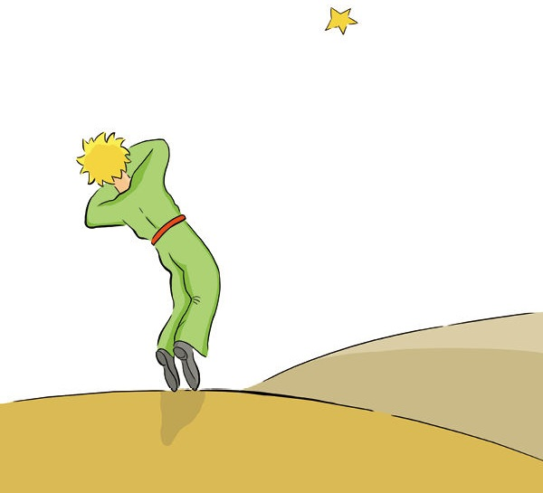
这真是一个很大的谜。对你们这些也爱小王子的人来说，和对我一样，如果在某个谁也不知道的地方，一只我们从未见过的羊，吃掉或者没有吃掉一朵玫瑰，那么整个宇宙就再也不一样了……
C’est là un bien grand mystère. Pour vous qui aimez aussi le petit prince, comme pour moi, rien de l’univers n’est semblable si quelque part, on ne sait où, un mouton que nous ne connaissons pas a, oui ou non, mangé une rose…
It’s all a great mystery. For you, who love the little prince, too. As for me, nothing in the universe can be the same if somewhere, no one knows where, a sheep we never saw has or has not eaten a rose…
望望天空吧。问问自己：羊到底有没有吃掉那朵花？你就会看见，一切都变了……
Regardez le ciel. Demandez-vous : le mouton oui ou non a-t-il mangé la fleur ? Et vous verrez comme tout change…
Look up at the sky. Ask yourself, “Has the sheep eaten the flower or not?” And you’ll see how everything changes…
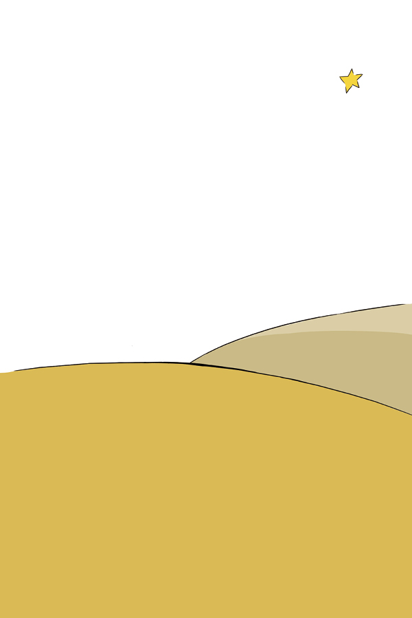
而任何一个大人，都永远不会明白这件事有多么重要！
Et aucune grande personne ne comprendra jamais que ça a tellement d’importance !
And no grown-up will ever understand how such a thing could be so important!
对我来说，这是世界上最美丽、也最悲伤的风景。它和前一页的画是同一个地方，可我又画了一遍，好让你们看清楚。小王子就是在这里出现在地球上，又在这里消失的。
Ça c’est, pour moi, le plus beau et le plus triste paysage du monde. C’est le même paysage que celui de la page précédente, mais je l’ai dessiné une fois encore pour bien vous le montrer. C’est ici que le petit prince a apparu sur terre, puis disparu.
For me, this is the loveliest and the saddest landscape in the world. It’s the same landscape as the one on the preceding page, but I’ve drawn it one more time in order to be sure you see it clearly. It’s here that the little prince appeared on Earth, then disappeared.
请仔细看这片风景，好保证有一天你到非洲、到沙漠里旅行时，能够认出它来。如果你碰巧经过那里，我求你，不要匆匆走过，请就在那颗星星底下等一等！如果那时有个孩子向你走来，如果他笑着，有一头金发，如果别人问他什么他也不回答，你一定会猜出他是谁。那么，请你行行好！不要让我这样悲伤下去：赶快写信告诉我，他回来了……
Regardez attentivement ce paysage afin d’être sûrs de le reconnaître, si vous voyagez un jour en Afrique, dans le désert. Et, s’il vous arrive de passer par là, je vous en supplie, ne vous pressez pas, attendez un peu juste sous l’étoile ! Si alors un enfant vient à vous, s’il rit, s’il a des cheveux d’or, s’il ne répond pas quand on l’interroge, vous devinerez bien qui il est. Alors soyez gentils ! Ne me laissez pas tellement triste : écrivez-moi vite qu’il est revenu…
Look at this landscape carefully to be sure of recognizing it, if you should travel to Africa someday, in the desert. And if you happen to pass by here, I beg you not to hurry past. Wait a little, just under the star! Then if a child comes to you, if he laughs, if he has golden hair, if he doesn’t answer your questions, you’ll know who he is. If this should happen, be kind! Don’t let me go on being so sad: send word immediately that he’s come back…